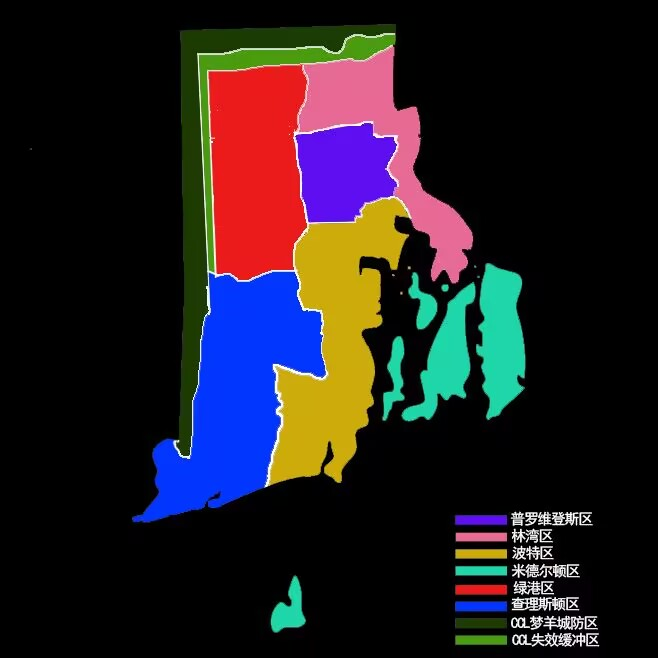
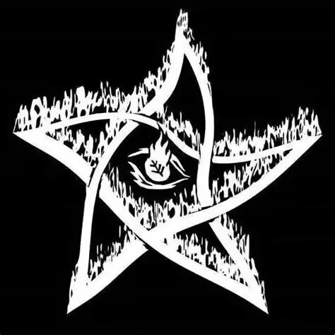

ISC
采用CH级城市管理AI技术，连接梦羊城的每一个角落
城市动态
关于我们

延续战争期间，橘核堆芯趁大量企业难以维持之际吞并能源企业，并将军工、半导体、计算机硬件和人工智能纳入业务版图。CK党在1981年宣布解散，但橘核堆芯仍以企业身份延续下来，成为政府重建和城市基础设施中无法忽视的力量。
总部：美利坚合众国，加利福尼亚州，洛杉矶市。
公司架构：董事会负责最高决策；管理扇区统筹人事与财务；工程扇区负责能源设施、制造业和研发；武装扇区以“核心卫队”承担安保、军事顾问和高危任务；市场扇区负责销售、公关与市场竞争；监督扇区则处理审计、反间谍和内部叛变。
关键人物：沃尔顿·卢克伍德，美国退役海军少将、橘核堆芯创始人之一及CK党最后一任党魁。他利用军方人脉推动和平利用原子能计划，并为公司取得早期反应堆技术与政府支持。
重要产品：梦羊城市政电网、“卢克伍德”号导弹驱逐舰、“喷火鹰”战斗无人机、OHT-19人形机器人、“巨蟒”单兵外骨骼、OR-12突击步枪、OIMW智慧模块化武器和“RAZOR”激光武器。

业务定位：公司主要服务中产及以上群体，同时为企业和政府机构提供定制化的医疗、安保和物流方案。联合理事会掌握公司最高决策权，克莱尔·科恩、布鲁斯·科恩夫妇负责医疗与应急体系，伊娃·罗德里格斯负责运输网络。
危创小队：基础急救会员提供主城区15分钟响应、现场生命支持和合作医院转诊；高级急救会员提供7分钟响应、武装AV-4护送、现场手术与跨区域转运；超级急救会员则将响应时间压缩至5分钟，并提供更高等级的家庭医生和报销服务。
信诺物流：业务包括普通同城快递、高价值货物武装押运、洲际跨洋货运和涉密数据物理运输，依托货运潜艇、空中飞艇、装甲卡车和专属押运人员维持全球供应链。


康兰医药的历史可以追溯到黑死病时期。被后世称为显微镜之父的马克建立了“赤月”秘密结社，在私下进行涵盖非人道部分的医学研究。1900年前后，后代“拉斐尔”将结社转型为现代企业，把实验室、设备和医疗数据全部转入公司名下。
公司公开业务包括药物、疫苗、兴奋剂、医疗器械和生物工程改造，真正核心则是身体强化、创新治疗和非法人体实验。它采用洋葱式管理结构：外层“维尔特利希”部负责合法业务，内层“萨克拉尔”部负责禁忌研究，采集部筛选实验体，安全部负责私人武装和法律打压。
总部：德国柏林。关键人物：拉斐尔，康兰医药第一任正式总裁，推动了结社资本化和后续的观林计划。
重要产品：普洛斯利强化咖啡因冲剂、普洛盖斯碳酸咖啡，以及将人类改造为亚人的高端整容项目“观林计划”。
丛云精密科技的核心人物岩崎弥异人由岩崎夫妻收养，后来进入日本海军兵学校并接手三菱公司的部分业务。二战前后，他利用军备扩张和海外资产转移积累实力，逐步收购军事制造企业，将公司塑造成横跨军工、船舶和先进技术的综合集团。
公司总部位于日本东京都，军工装备事业本部负责步枪、舰载武器、装甲车辆和神秘术应用武器；海洋船舶事业本部负责军舰、商船、潜艇与定制船只；战略支援部统筹研发、后勤和海外业务。最高决策机构为丛云精密工业株式会社最高理事会，地方分部由社长代表。
重要产品：斑VI型突击步枪、“伯劳”神秘术发射器、AV-X多用途浮空车、AV-XII超级浮空车，以及停泊在梦羊城昆西特港的“八幡号”航空母舰。其船舶工程能力也是公司最具辨识度的竞争优势。
延续战争洗净了炼金术过去背负的污名，炼金术在“辉煌的20年”里成为蓝海市场。大量工坊和投资者涌入后，完全竞争造成价格波动、恶性降价与原材料争夺，各国从业者遂组织行会，以品牌和集体议价把市场推向垄断竞争。
都林缔约集团最初只有60名成员，2005年时已扩张到3万余人。它几乎覆盖美国东海岸的全部炼金工坊，通过会员会费、炼金术士等级考试、执业许可证、教育标准、建议价目表和争端仲裁影响行业秩序。
总部：新美国，梦羊城。组织架构：全体会员大会名义上负责选举执行委员会；认证与执照监察部、教育与人才标准部、市场与价格稳定部、仲裁与协调部、对外事务部共同维持集团的行业控制力。其与BAT的关系，也使“合规”成为炼金工坊无法绕开的门槛。
关联机构：显圣 Manifestations 曾被认为成功合成贤者之石，但随着显圣消失，贤者之石再次隐入传说。
水木念云初来乍到时，因父母分别是精灵和人类而被小县城排斥。她从一家濒临倒闭的照相馆起步，仅用三年就将其发展为松目视觉，一家以高质量相机镜头为拳头产品的公司。
如今，松目视觉生产相机、镜片、隐形眼镜、光学显微镜和天文望远镜，同时经营专注近视矫正的子品牌“揠苗”。两款眼药水广受欢迎，公司也持续投资眼部医学研究，最著名的成果是对白内障手术的革命性改进。
松目视觉尤其重视神秘术与光学的结合。旗下“掩耳”照明棒、SEL2470 G10系列相机的“无灯亮光”功能，以及部分眼科手术技术，都建立在神秘术或炼金术与现代光学的融合之上。总部位于日本京都。
1969至1971年间，世界末日的阴影、社会动荡、恐慌和歧视将美国推向深渊。末日教以及“汤姆·怀特”与“温迪戈连环杀人案”成为这一时期的标志性事件。
“温迪戈”一案经媒体报道后，迅速超越单一凶犯的名称，成为“反抗不公体制的系统性剥削”的象征。全美各大城市贫民区出现以温迪戈为名的涂鸦和模仿型犯罪，主要针对工商户与当地企业。物资紧缺进一步助长了这一理念，最终形成了以苍尾鹿为称号、横跨多地的帮派实体。
组织与文化：普通成员称为“剥皮者”，实力足够者可晋升为“冠者”甚至掌管一方的“行政官”。帮派拥有浓重的丧葬文化，成员死亡会举行隆重葬礼；割下敌人头皮并保存，是证明实力和提升地位最直接的方式。
沧溟会起源于20世纪20年代的西雅图。大量亚洲移民被法案和歧视挡在主流社会之外，于是有人经营烟馆、赌场和放贷业务，并在抱团自保的过程中形成帮派。早期的沧溟会只是籍籍无名的华裔帮派，后来趁日裔集中营政策造成的权力真空扩张，逐步夺取藤原家在西海岸的土地和地位。
组织结构：若众是基本单位，通常5至10人，由组长负责一条街道、赌场或放贷区域；组长之上是堂主与会长。会长和副会长分别负责总体决策与日常事务，成员入会需在关公和惠比寿祠堂举行“扎职”仪式。
文化：沧溟会推崇义文化，成员之间以兄弟相称；重大过失会受到切指等惩罚，使成员在身体和生活上进一步依赖组织。
美国黑手党主要来自西西里岛的意大利移民，也吸收了少量犹太人与爱尔兰成员。禁酒令时期，走私、制造和销售酒精让他们建立起庞大的犯罪帝国；到1960年代，美国境内的黑手党已发展出26个城市犯罪家族，并一度影响地方政坛。
现实腐蚀重创了黑手党，使其势力范围迅速萎缩，但危机缓和后，他们又重新返回北美。黑手党更喜欢利用人脉和金钱控制局面，通过投资金融、房地产、新能源和工业扩张合法影响力，同时以毒品、赌场和妓院经营地下世界。
组织结构：老板位于顶层，顾问作为台前代理人并负责调解家族纠纷；二老板统领各军团；军团由20至30名士兵组成，尉官负责具体行动。组织强调忠诚、保密、纪律和地盘管辖原则，并与官方保持长期而复杂的关系。
野兽帮最初由来到梦羊城的体力劳动者组成，成员以兽人和黑人为主，因文化差异和种族歧视而团结起来保护自身权益。随着帮派不断做大，昔日的社区守护者开始收取保护费，并用抢劫与谋杀扩张地盘。
如今的野兽帮已经堕落为崇尚极端暴力的好战团体，经营地下斗殴、制毒贩毒和高风险保镖业务。少数雇主会雇佣他们看守地盘，但这些客户往往来自妓院、制毒工厂等同样声名狼藉的产业。
组织结构与文化：帮派最高领导者为“兽王”，下设负责情报的鹰眼、负责战斗的虎爪和负责谋划的蛇牙。成员信奉社会达尔文主义，持续接受暴力技能考验，也普遍滥用从甲基苯丙胺到群勃龙等各类药物。
血族长期被主流社会边缘化，嗜血诅咒与种族偏见共同催生了许多血族犯罪团伙。2008年，塞巴斯蒂安·卢斯凡在梦羊城建立夜巡者，决心用地下世界的方式吸干这座城市的血。
夜巡者最早经营卖血与器官买卖，随后发现数据如同城市血管里看不见的血液，于是组织黑客队伍从事入侵、窃取、破坏和敲诈。如今，网络犯罪仍是其支柱，同时兼营毒品走私等业务。
组织结构：最高领导者必须在名字中加入“该隐”二字；普通成员称为“执事”，由“伯爵”管理；专门负责情报、财务等事务的高级头目称为“亲王”。其总部“子夜派对”度假村位于暮光岛，是一座哥特式庄园。
全名“神秘研讨朝圣协会”，音译“秘索俄斯”，是专门研究神明、神与神秘术关系、神明交涉和神明利用的协会。它看起来像宗教组织，实际成员常被传统宗教视为亵渎者。
神启与启示录：神启是神明直接赐予的高质量神秘术，带有属于神的意识，能够与使用者形成契合。启示录则把神启与激活术式结合为强化版术式刻章，省去了普通刻章中的铭记术式。
半神与组织构成：将启示录装载进身体并使其成为功能器官的人称为半神。朝圣协由最高领导“圣女”、负责研究神明的神学官、负责档案与管理的理世官组成。神启会放大使用者的罪面，半神化还可能造成不可逆的身体变化。
德鲁伊并非种族，而是信仰自然、相信一切生命皆有灵魂的神秘术团体。他们主张与自然和谐共处，尊重所有存在和周遭环境，并从自然中学习与生物有关的神秘术。
德鲁伊极端厌恶破坏自然环境和强行扭转客观规律的行为，尤其反对死者复生。尽管他们与公司在环保问题上矛盾尖锐，但梦羊城居民仍喜欢他们经营的小型植物园与动物园。
组织构成：城中最高领导是大德鲁伊，教徒通常以小团体活动，由祭司指挥，并根据个人能力自然形成分工。
末日教起源于魔神星带来的全球大恐慌。他们相信世界上存在唯一真神“主”，并把一战、二战、古巴导弹危机、延续战争等灾难视为“主”对地球的大扫除。
在他们的信仰中，只有忠于“主”的人可以幸存，而证明忠诚的唯一方式就是帮助“主”清理世界。因此末日教频繁策划恐怖袭击与连环杀人案，并坚信自己的暴行是在替神执行使命。
组织构成：尊者是最高领导人，身边围绕若干从者，负责控制所在区域的信徒。入教仪式与杀人直接相关，新人必须在袭击中杀死被带回基地的受害者，否则会成为下一场仪式的受害者。
ALM（All Lives Matter）是一个呼吁各种族平权平等的民间组织，也长期为 LGBTQ+ 群体争取权益。
组织内部主要分为和平派和极端派。和平派倾向于通过社区互助、公共倡议和合法游行争取改变；极端派则主张用更激烈的行动回应现实中的歧视与不公。近年来极端派占比似乎有所上升，使组织的社会形象和内部路线都更加复杂。
梦羊城位于北美洲东海岸，是新美国治下的一个自治城市，拥有大约1000万人口。梦羊城总面积为3140平方千米，海岸线长650千米，属于温带海洋性气候。其下辖8个区，市政厅驻于普罗维登斯区。
关于梦羊城更早的历史，我们可以直接去查询一个叫"罗德岛州"的词条，不是因为梦羊城在罗德岛，而是因为在腐蚀危机之前，这个地方就叫罗德岛和普罗维登斯庄园州。
1971年12月，腐蚀危机爆发。在危机开始的前几个月里，人们还天真的认为仅靠物理手段就可以消灭腐蚀，因此在东海岸保卫战中，联邦军队和国民警卫队毫不吝啬的向大地倾泻着炮火。最后的结局我们也都清楚，东海岸不仅沦陷，大部分区域也被炮火夷为平地。
1980年，延续战争结束，罗德岛州光复。但彼时的联邦政府在长达二十年的战斗后并没有足够的实力支持全国重建，因此他们决定在东海岸实施"公司城"模式，改名为梦羊城的罗德岛就是其中一座"公司城"。紧随其后的是快有20年的黄金时代，梦羊城飞速发展，不仅将废墟变回都市，还坐上了纽约沦陷后空缺的世界金融中心的王位。
一切都非常美好，直到2008年的那场金融危机。简单来说，就是在我们熟知的次贷危机的基础上又叠加了现实腐蚀的突然进攻。梦羊城在进攻里抗住了。CLL虽然千疮百孔，但是这片土地最终没有沦陷。

梦羊城
种族
人类：和其他种族相比，人类并没有什么突出的特长，但他们却拥有掌握世界的志向。所以，他们对于各种领域都展开了孜孜不倦的研究，并且都取得了一定的成果。但也正因为这个志向，人类和其他种族或多或少都曾有过冲突。
精灵：在传说里，精灵是大自然最完美的孩子：人类眼中最美丽帅气的样貌，远超常人的学习能力，以及比大部分种族都长得多的年龄。精灵将神秘术运用到生活的方方面面，并以此搭建起了和人类不相上下的文明。高傲是精灵性格的重要组成。
矮人：个子不高，身材壮硕，肌肉发达，毛发旺盛。他们深谙所有材料的性质，热衷于研究器械的构造和用途。他们是最好的工匠，熟练而耐心的运用精湛的锻造技术，将神秘术融合进产品之中。矮人非常崇尚烈酒，按他们的说法，只有怂货才会把度数在20°以下的液体称作酒。
兽人：兽人是一类兼具了人类的直立形态与完整野兽特征的生物。兽人最显著的特征便是极高的身体素质与对环境各方面的适应，其体表通常附着有浓密的皮毛。在很长的一段时间内，兽人都以部落联盟的形式隐藏在那些人类尚未探明的深山中。
亚人：由人类和兽人进行结合之后的产物，身体结构以人类为主体，但拥有部分兽类特征，如尾巴、兽耳、不同的虹膜等。
血族：血族起源尚不可知，自中世纪以来便一直活跃在公众视野中。血族细胞的增值速度很快且端粒普遍偏长，天生拥有自愈的能力。但一旦缺少氨基酸，血族将出现极其严重的内脏衰竭。
种族

神秘术
神秘术Theurgy，又称魔法、巫术、神通术，是一切由术式进行激发且不完全服从物理规律的特殊能力之总称。神秘术囊括了常人眼中绝大多数的"魔法"，例如火球术、荧光咒、漂浮咒、隔空取物、变形术、瞬间移动等等。得益于宽泛的定义，神秘术可谓是包罗万象，上到撕裂空间穿越时间，下到凭空变出一点电火花，都算是神秘术。
你可以把神秘术类比成代码，那么神秘术士就是程序员，程序员写出来的程序则是神秘术式。神秘术士用主观意识控制神秘术，编织出神秘术式以特定的方式作用于宏观世界，这个过程叫施术。施术需要承担精神负荷，这个负荷的量通常与神秘术的复杂度和强度呈正相关。
术式刻章类似一个只能安装一个APP的手机，那唯一的APP就是铭刻在它身上的神秘术式。通过注入能量将其激发，它便会按照既定的程序释放指定的术式。制作一个术式刻章至少包含三个术式：用来实现其功能的术式A、将A记录在刻章上的铭记术式B、接受能量并激发A的激活术式C。
神秘术
编年史
对于1960年代之前的历史，本文没有提及到的可以直接将现实世界代入其中。
距今35000年或更早：矮人文明在北欧和南美洲出现，精灵文明在西、南欧和北美洲出现。
前4000-前2000年：北欧矮人开始使用铁器。前3220年，欧洲的精灵成立了奴隶制国家。南美矮人在约前3000年开始研究炼金术。前3178年，一位精灵无意中释放了有文字记录的第一个神秘术——火球术。
1969年：全球多地天文台观测到一颗与地球轨道相交的矮行星"魔神星"。1971年12月，现实腐蚀爆发，延续战争开始。
1980年：延续战争结束。RCCO总部大楼在北京竣工。美国签署《公司城法案》。橘核堆芯参与全国电网重建。
1982年：梦羊城神秘术和炼金术管理局（BAT）正式成立。阿尔卑斯联合大学——欧洲第一所跨种族综合大学成立。
1983年：安全国际成立。梦羊城警察局成立机动特遣队"B-6"。
编年史
炼金术
在过去的很长一段时间里，炼金术都被视为一种奇迹，一个神奇技艺，而非一门学科，因为那时还没有人能总结出炼金术理论基础。直到神秘元素学的诞生，炼金术才有了真正的理论支撑。
所谓炼金术，就是将各种抽象性质进行组合，最终产生拥有独特性质的神奇物质的技艺。元素在神秘元素学中所指不是具体的事物，而是抽象性质——象征灵动流转的气，象征神秘精神的以太，象征稳定不变的石，象征低谷隐藏的朽，象征成长变化的生，象征终结寂静的死，象征鼎盛繁茂的炎，象征爆发冲击的雷。
纯粹，是炼金术的要义。炼金术的本质就是将元素占比不明确的、性质驳杂的原材料，炼制成元素占比较明确、性质突出可控的物质的过程。等价交换是炼金术不变的原则。
炼金术
现代炼金术研究方向：所有炼金术师所做的其实也可以简单归纳为一件事情，那就是材料开发。一方面炼金术本就与材料学有密切联系，在如今的尖端材料领域，尤其是超导领域以及宇航领域，炼金术都有凭借神奇材料的优异性质发挥独特的作用。
炼金传说：最著名的就是"图特的亡灵书"，据说那是由古埃及的智慧之神所作的传奇之书，人们相信其中蕴含了炼金术的究极奥秘。其次是"尼古拉的宝藏"——尼古拉通过《亚伯拉罕之书》破解了《翠玉录》，获得了贤者之石的配方。第三个传说则是"莱茵河底的宝库"与"魔戒"。
灵魂锻造：极致的亵渎，禁忌的技艺！这是将他人灵魂作为原料锻造的技巧。灵魂武器真正强大的地方在于其能发挥该灵魂生前的能力。高大威猛的战士与他携带的大剑融合锻造，可以重现他生前的战技。
性质集束：相当古老的技艺，也被称为元素精炼，是通过神秘术来帮助自己将炼金原料提纯的技术。集束无疑是使事物更加齐整统一，而统一的方向无疑是大多数，这就可以确定被转化的对象肯定不是原料中的大量元素，而是微量元素。
炼金基础：一套炼金术师必须掌握的"基本功"合集，包括：原料的处理、元素的判断、投入比例的计算、常见神奇材料的性质背诵，以及最重要的——安全规程。
生命金属配方：元素比=石：生：气：炎：以太=8：7：2：2：1。生命金属是炼金术生命炼成领域的产物，物如其名，是拥有生命性的金属，常被用在义体制造上。
神
神是概念、神秘术和精神三者的集合体，是一种十分强大、难以被观测的智慧存在，也是世界上所有神秘术的发源。我们如今所使用的一切神秘术，都相当于从名为"神明"的海洋中蒸发出后形成的降雨与其汇成的湖泊。
人们经过长久的研究后，认为神由三部分组成：其灵魂的本质"概念"，相当于我们的精神；其力量的本质"神秘术"，相当于产生的能量；其形态的组成"精神"，相当于我们的血肉骨块。
已知权柄：
「物质 Phys」与非生命物质的转化、合成、操纵有关，是应用最为广泛的权柄。
「空间 Spes」与空间有关，可开辟亚空间、制造鬼打墙、瞬移、空间切割等。
「幻象 Ison」与虚假造象有关，可操控光影，实现隐形、易容、蜃景等效果。
「进化 Evol」与生命有关，可实现治疗和自愈、身体强化或削弱、产生异化等效果。
「心灵 Meti」与人类的精神有关，可影响人的情绪、人格甚至记忆。
「毁灭 Delt」与毁坏、消除有关，十分危险，可摧毁消除世间万物。
神
玩家设表
玩家设表是创建角色时使用的核心工具，用于记录角色的各项属性和背景信息。
请按照模板要求认真填写，这将是你在梦羊城冒险旅程的起点。
玩家设表
物品设表
物品设表用于登记和管理游戏中出现的各种道具、装备和消耗品。
每件物品都有其独特的属性和用途，合理使用是通关的关键。
物品设表
自制副本
自制副本是玩家社区创作的精彩冒险内容，由资深玩家设计并经审核团队检验。
每个副本都有独特的剧情、敌人和奖励，为你的冒险增添无限可能。
自制副本
审群
审群是负责审核新成员加入和角色设表的官方群组。
审核团队将确保每位新成员了解规则并拥有合格的角色设定。
审群
水群
水群是社区成员日常交流、分享趣事和闲聊的轻松空间。
在这里你可以结识志同道合的朋友，讨论各种话题，享受社区的温暖氛围。
水群
戏群
戏群是专为角色扮演和剧情演绎打造的核心群组。
在这里玩家们通过文字演绎角色的故事，共同编织梦羊城的传奇篇章。
戏群
DOCX 原文档库
以下内容按原 DOCX 文件逐段放入网页，保留原文文字、标点、空段落、段落顺序和正文图片。
腐蚀记录档案.docx
腐蚀记录档案
名称：［潘多拉］
种类：灾害型
已知最大等阶：海
腐蚀井所在地：原麻省埃塞克斯县
覆盖地区：原马萨诸塞州全境；原纽约州哥伦比亚县和伦斯勒县；原康涅狄格州利奇菲尔德县、哈特福德县、托兰德县、温德姆县；原新罕布什尔州切希尔县、希尔斯伯勒县、罗金厄姆县；原佛蒙特州本宁顿县
介绍：［潘多拉］腐蚀海拥有目前为止已知的所有灾害型现实腐蚀的特征，它们分布于不同的区块。蒙萨九号作战失败之后，［潘多拉］境内发生了巨大的变化，除了地形更加险峻和腐蚀更加严重之外，还疑似出现了多个比肩领主的目标。
环境特征：内部多个区域分部着不同的灾害。在进入腐蚀区后，天空会变成黑色，空中挂着一颗永远不会变换位置的黑色太阳。
绝密：［潘多拉］的巨大变化来源于其中诞生的腐蚀之王“黑日”。蒙萨九号作战中，他展现出了恐怖的物质扭曲能力，根据幸存者的描述，在“黑日”的能力影响下，地面上的战车坦克、天空中的飞机、水中的战舰都被活化成了真正意义上的钢铁巨兽，武器也都在他的扭曲下化为尘埃。推测，这位王者拥有扭曲物体与能量的能力。
名称：［普赛克］
种类：思绪型
已知最大等级：海
腐蚀井所在地：卢森堡市
覆盖地区：卢森堡全境和法、德、比利时和卢森堡接壤的地区
介绍：［普赛克］覆盖的区域会展开庞大的梦域，光用肉眼无法观察到梦域的边界，若在梦中停留太久，肉体会开始扭曲，变成扭曲体［梦游者］。普赛克范围内还会不断出现一种名为［梦妖］的腐蚀体，他们会强制将外界的人拉入梦境，并将其杀死，人们付出了无比巨大的代价才终于试出了梦域边境，并将其封锁，好在目前［普赛克］没有扩张的迹象。
环境特征
绝密：在仅有的几次与［普斯克］的腐蚀体交流的过程中，我们了解到［普赛克］内似乎有一个极其强大的存在，被腐蚀体们尊称为“母神”，推测，可能是一位与［黑日］同级别的存在。
名称：［电子域］
种类：思绪型
已知最大等级：湖
介绍：［电子域］覆盖地区会出现许多具有未来感的城市，科技水平远超现代。通过城市内随处可见的屏幕，一种名为［数网魔］的现实腐蚀体可以利用网络操控与扭曲注视屏幕的生物，将其转化为扭曲体［网民］，这种扭曲体出现后，手中会出现一部电子设备在扭曲到最后阶段后，网民的身体会机械化或数据化，脸部会变成经典的emoji表情，［网民］可通过电子设备将数据实体化，进行攻击。还有一种名为［科研者］的腐蚀体，他们痴迷于对高科技机器的制造，若有生物被其抓获，会被改造成名为［“实验体”］的扭曲体。
环境特征：多为高科技城市，越靠近腐蚀井越先进，大街上几乎有随处可见的屏幕，核心区域甚至几乎即使由屏幕构成。穿过屏幕可进入虚拟世界，但虚拟世界的腐蚀强度翻倍。
现实腐蚀.docx
现实腐蚀
现实腐蚀
一种会将现实向不宜居扭曲的频率，其原理至今尚未解明。表现多为超极端气象、地质灾害和超自然现象极度频发，伴随腐蚀一起出现的还有一种怪物，其外型、特性、能力均与现实腐蚀本身相关，我们称其为现实腐蚀体。而正常生物在腐蚀的作用下也会发生扭曲，由此过程诞生的怪物被称为现实扭曲体。腐蚀体与扭曲体可以离开腐蚀区行动。
腐蚀体与扭曲体最直观的差距便是，腐蚀体有更多拥有智慧的可能，且同级同源腐蚀体对扭曲体有绝对的控制权。
根据观察，一些在近海出现的腐蚀河在逼近远海地区的时候就停止蔓延，反而开始向四周蔓延，逐渐变成腐蚀湖，人们对此进行了多种测试。部分唯心主义者认为腐蚀惧怕“远洋”这个概念，而唯物主义者们认为，这个腐蚀区只是因为距离腐蚀井过远，无法产生有效的腐蚀。
腐蚀的分类
现有的现实腐蚀总共有两类，分为灾害型与思绪型。灾害型腐蚀多为各类灾害的强化版，拥有很强的破坏力。思绪型的归类则相对混杂，所有非自然现象都会归类于此，其中多为精神与情绪层面。其对于物理层面的破坏相对较少，但危险性丝毫不亚于灾害型。
腐蚀井
现实腐蚀的源头，腐蚀以此为中心点蔓延，若将腐蚀井摧毁或堵塞，其就会停止对已覆盖地区的腐蚀，此时只要处理掉已腐蚀的区域就能彻底清除腐蚀。
等阶划分
根据其最大影响范围进行区分，腐蚀区由小到大依次被称为
池：10～100平方千米
潭：100～1000平方千米
湖/河（一般只有狭长型腐蚀区才叫河）：1000～10000平方千米
海：10000平方千米以上
强度划分：
池＜潭＜湖/河＜海
腐蚀体/扭曲体强度划分
扭曲体＜腐蚀体＜精英扭曲体（达到潭级后第一批扭曲体概率进化）＜精英腐蚀体（池级只有一个）＜潭级领主＜湖级领主＜腐蚀之王（海级）
扭曲体—普通人 腐蚀体—D
精英扭曲体—C 精英腐蚀体—B
潭级领主—A 湖级领主—S
腐蚀之王—？？？
领主
现实腐蚀区达到潭级后，最强大的一个腐蚀体有概率被腐蚀海赐福，晋升为领主，他们比腐蚀体与扭曲体都更加强大，且能够操控与自己同一个腐蚀井的腐蚀体与扭曲体，而腐蚀海则是个例外，由于其体量巨大，从中诞生的领主只能操控与自己同类型的腐蚀体。
领主之间可以互相转化，将对方收入自己的麾下。被转化的一方实力会下降。领主也可在自己的腐蚀区被净化后，将自身融入无主的腐蚀区，回复自己的力量。
腐蚀区会因为领主的后续影响而出现异变，可能诞生出从未出现过的腐蚀体和扭曲体
腐蚀之王
腐蚀区达到海级后，由腐蚀海最本源的力量变化而成的强大存在，或是由领主晋升而成。腐蚀之王可以直接操控腐蚀海内的所有腐蚀体（包括领主）。
腐蚀区融合
当现实腐蚀之间接触便会开始融合，强势的一方会吞并弱势的一方，将弱势方的影响转换成强势方的形式。若两个腐蚀区皆有领主，腐蚀体会同时听从两个领主的命令。
残响
作为腐蚀区的统治者死亡后，并不会彻底销声匿迹，他们残存的力量会凝聚成一种特殊的能量晶体［残响］，通过残响，使用者可以获得统治者们的部分能力。然而残响本身充斥着大量的腐蚀能量，直接使用会被扭曲，甚至让统治者们“借尸还魂”，需要通过强大的遏制术才能彻底净化。
净化后的残响有两种用途：
其一，是与自身所掌握的神秘术进行融合，增加神秘术的效果。
其二，是通过科技手段加工成组件，加在义体上，增加义体的功能性。
不同级别的腐蚀体会产出不同数量的残响
精英腐蚀体（仅限池级）：1个
潭级领主：2～3个
湖级领主：3～5个
腐蚀之王：7个
残响生成后若不及时处理，可能会使其诞生新的腐蚀区，所以在击杀统治者后，一定要及时展开收容工作
政权（括号里是简称）.docx
政权（括号里是简称）
美利坚合众国（新美国）
美国上一次害怕自己会解体消失，还得追溯到南北战争。南军花了两年打到葛底斯堡，而对于腐蚀来说，只需要8个月。8个月，华盛顿沦陷，联邦政府停摆，夏威夷、阿拉斯加、波多黎各、北马里亚纳、关岛等海外地盘不是独立就是被人占领。
延续战争期间，美国联邦政府早已名存实亡。尽管1976年《丹佛停战协定》勉强维系了联邦残部、温迪戈帮与各州武装之间的脆弱和平，但美国国土实际上已裂解为数个互不隶属的势力范围。从西海岸的堡垒城市群到东海岸的腐蚀海边界，从五大湖区的军阀领地到南方的各州自治政权，名义上同属一个国家的实体之间，通行的是各自的法律和关税。
1978年，随着RCCO宣布延续战争进入区域推进与相持阶段，重建被提上议程。但谁来重建？如何重建？往哪个方向重建？这些问题没有任何一个势力愿意妥协。联邦残部希望恢复战前的宪政秩序，温迪戈帮残余势力主张保留他们的事实自治，各州政权要求更多的州权，而真正握有资本和技术的超企则另有打算。
谈判从年1978春天持续到1979年春天，从洛杉矶的霓虹灯移到夏威夷的海边，再转到瑞士阿尔卑斯山的精灵控制区。前后换了七个地点，换了四轮谈判代表，签署了十一份无人在意的备忘录。到了最后，连最乐观的政治观察家都不再相信美国能以和平方式重新统一。
1979年9月，在政府军耻辱性的输给温迪戈之后，橘核堆芯等掌握关键基础设施的超级企业突然大幅提高了对联邦政府的投资和捐赠额，当然我们都知道，这笔钱不过是为了彻底绑好联邦政府的必要开支罢了。
延续战争终于结束了。政府军最后选择诉诸武力，加上温迪戈自己的解体，美国重归统一，联邦政府又回来了。接下来该重建了。重建需要钱，而国库早已在漫长的腐蚀战争中消耗殆尽。没有关系，超企来了，他们手里有人、有钱、有能源。联邦政府发不出工资的时候，他们给公务员发补助；军队开不动坦克的时候，他们给基地供油；稳定锚需要维护的时候，他们的工程师们拿着蓝图上门。而在这其中，最积极的莫过于橘核堆芯，那个看似一直在给政府输血，实则悄悄让政府换上自己血的角色。
如今这个国家的正式名称依然是“美利坚合众国，但在日常口语中，人们更习惯称它为新美国。它既伟大又破败，既富有又分裂，既像公司的猎物又像公司们的牢笼。截至2026年，新美国仍然是全球最富有的政治实体之一，也是超企治理模式最彻底、最成熟的实验场。它是否代表文明的进步，取决于你问的是超级企业的项目经理，还是在斩杀线上挣扎的街头小贩。唯一没有争议的事实是，这个国家的确存在，并且还会继续存在下去。
苏维埃新社会主义共和国联盟（新苏联）
在延续战争期间，苏联虽然名义上仍然统一，但实际上已然分崩离析为了由不同势力地盘组成的拼图。为了防止这张拼图在某次天灾人祸后彻底碎成一团散沙，战争结束后，苏联人毫无疑问的开始推进国家的再统一。
和平统一是不可能的。每个势力都希望在统一后独占鳌头，每个势力都不愿意为了统一牺牲掉自己的利益和资源，所以毫无意义的谈判只进行了半年就遗憾离场，内战随之而来。但对于延续战争后的任何一个国家来说，大规模的国内战争无异于自寻死路，因此这场被后人称作“第二次苏俄内战”的战争并没有演化成两军对垒的全面战争，而是以暗杀和小规模武装冲突的方式间断的在各个势力地盘的内部进行，同时辅以大量的政斗戏码。人们常说比起战争，第二次苏俄内战的实质更接近于黑帮火并，无论从起源还是从形式上都是如此。不过这其实是件好事，因为这种形式的内战并没有给苏联的经济复苏和重建带来太多的阻碍，政权更替罕见的没有反噬经济。
1984年11月9日，斯大林格勒市长叶戈尔·谢列布连尼科夫在斯大林格勒遇刺，第二次苏俄内战划上句号。维克多·别利科夫随后当选最高苏维埃主席，兼任苏共中央总书记。就任后，别利科夫立刻实行经济体制改革，开始引入市场经济。别利科夫改革允许开办私人企业，同时从原苏联的各个政府部门中拆分、改编、重组出了一系列自诞生起就拥有垄断潜力的央企。例如如今苏联境内无可置疑的第一超企苏通机（苏联通用机械工业）就源自内战期间支持别利科夫的九个工业部门。
然而别利科夫改革的效果非常难评。他允许开办私人企业，但私人开办企业需要通过一系列繁琐而复杂的审批程序；他从政府部门中改编出理应独立经营的央企，却不愿意给央企足够的自主权；他刚上任时曾下令废除书刊检查制度，却又在几年后反悔；他没有纠正战前就已经畸形的轻重工业配比，此外还胆敢推行禁酒令。别利科夫改革一时惹得苏联境内怨声载道，其中就有苏通机。
1991年8月19日，曾任任苏通机CEO、时任国防部部长的弗拉基米尔·克瓦连科拜访了正在黑海边度假的别利科夫。双方会面时遣散了所有随员，没人知道他们聊了什么，我们只知道两小时后克瓦连科叫了个保洁进去把地上的碎玻璃和血扫干净。
1991年12月25日，维克多·别利科夫因身体原因辞去一切职位。次日，弗拉基米尔·克瓦连科继任。
克瓦连科继任后继续推进改革。他将自主权交回企业实行政企分开，将市场经济定为基本经济制度，调整轻重工业发展比，废除禁酒令、书刊检查制度、多党议政制。虽然苏通机未来绑架了继任者和中央政府，虽然反对者会说这是修正主义背叛，但无论如何，克瓦连科的改革将苏联从悬崖边上拉了回来，让那个曾经濒死的巨人至今还能继续向前奔跑。当千禧年的钟声敲响后，苏联在新宪法里的全称就是苏维埃新社会主义共和国联盟。
欧洲命运共同体（欧共体）
严格来说，它实际上并不是一个国家，而是一个由腐蚀战争结束后仍然存续的欧洲国家组成的政治同盟。如果说新美国的问题是差点死掉之后被企业扶了起来，那么欧洲的问题则是差点死掉之后发现没人有力气来扶自己。
腐蚀危机爆发后，欧洲成为全球受灾最严重的地区之一。这里拥有世界上最密集的人口分布、最复杂的工业体系以及最多的历史城市，而这些东西在现实腐蚀面前并没有提供多少优势。巴黎、柏林、伦敦、罗马等传统大城市均曾进入紧急状态，大量人口被迫撤离，部分地区甚至在战争结束多年后依然无法恢复。更糟糕的是，欧洲并不像美国或者苏联那样拥有一个能够强行整合资源的中央权力，因此战争期间，各国更多是在依靠自身力量苦苦维持。
延续战争结束后，欧洲各国面临着一个尴尬的问题：单独重建，每一个国家都缺乏足够的资源；联合重建，又没有任何一个国家愿意首先放弃自己的利益。法国认为自己拥有领导欧洲的文化资格，德国认为自己拥有领导欧洲的工业能力，英国认为自己拥有领导欧洲的历史传统，而其他国家则认为前三者最好先停止争论谁更适合领导欧洲，然后再考虑欧洲到底该如何生存。
于是，战后欧洲进入了漫长的政治谈判时期。从1980年至1992年，欧洲各国进行了数百次会议，签署了大量合作协议。其中大部分最终成为档案室里的历史文件，少部分成为后来欧洲统一的基础，还有极少部分被证明真的具有实际意义。有人曾讽刺道，如果有神秘术士能把这些文件变成石油，那么他们早已不需要进口燃料。
真正改变欧洲命运的是1993年的《布鲁塞尔重建协议》。面对新美国、新苏联以及亚洲新兴经济体带来的巨大压力，欧洲各国最终决定建立更深层次的政治、经济和军事合作体系。欧洲命运共同体正式成立。
欧共体成立初期并不被外界看好。新美国认为这是一个没有真正统一政府的松散联盟，新苏联认为这是资本主义妥协后的产物，而欧洲内部也有人担心，统一只会导致本国失去自主权。然而事实证明，欧共体选择了一条不同于其他大国的发展路线。
它没有像新美国一样让企业成为国家的重要支柱，也没有像新苏联一样依靠大型工业集团推动国家发展，而是在政府、企业和社会之间寻找一种脆弱但稳定的平衡。欧共体通过统一市场、共享能源、联合防务以及跨国科研合作，逐渐恢复了欧洲在世界体系中的地位。
当然，这种模式并非没有问题。北方成员国认为南方成员国效率不足，核心成员希望进一步统一，而边缘成员则担忧自身利益受到削弱。每一次改革都伴随着漫长争论，每一次危机都伴随着数个月甚至数年的协调。
但这或许正是欧洲最特殊的地方。
腐蚀摧毁了欧洲的城市，战争摧毁了欧洲的经济，却没有摧毁欧洲人争论的传统。
日本
中华人民共和国（中国）
如果说其他国家是在腐蚀危机中努力保存自己，那么中国面对的问题则更加直接：如何在整个世界都正在崩坏的时候，维持一个拥有巨大人口规模的国家继续运行。
1971年现实腐蚀爆发时，中国仍处于工业化快速推进阶段。相比欧美，中国受到腐蚀直接冲击的时间相对较晚，但庞大的人口数量和复杂的经济结构决定了中国不可能置身事外。沿海工业地区成为重点防御区域，大量城市进入战备状态。中央政府迅速建立战时经济体系，将能源、粮食、交通和工业生产纳入统一调度。
这一时期，中国采取的战略非常明确——优先保证国家继续存在。
延续战争期间，中国没有像美国一样出现中央政府长期瘫痪，也没有像苏联一样陷入大规模内部割裂。这得益于其高度集中的行政体系，使资源调配和政策执行能够在极端环境下保持连续。
当然，这种模式同样带来了巨大压力。战争时期的资源分配、人口迁移以及工业调整造成了大量社会问题，但相比许多已经失去控制的地区，命令依然能够传达到每一个行政区域。
延续战争结束后，中国开始进入全面重建阶段。与新美国依靠资本和企业推动不同，中国选择了一条由国家规划引导、市场机制参与、大型工业集团承担执行的发展道路。大量传统企业完成改革，同时诞生了一批具有全球影响力的新型企业集团。在能源、基础设施、高端制造、航空航天、人工智能以及现实腐蚀研究领域，中国逐渐建立起完整产业体系。尤其是在现实腐蚀防御方面，中国投入大量资源建立覆盖全国的监测、防御和研究网络，使其成为世界上系统性应对腐蚀能力最强的国家之一。
然而，中国同样面临属于自己的挑战。经济结构调整、人口变化、区域发展差异以及国家与企业之间的关系，都是这个国家必须解决的问题。支持者认为，中国的发展模式证明了集中资源解决大型问题的能力；批评者则认为，高度集中也意味着更大的制度风险。
但无论如何，在那个曾经让世界濒临毁灭的时代，中国活了下来，并且，它正在废墟上重新建设属于自己的未来。
公司.docx
公司
橘核堆芯Orange Cores
橘核堆芯的起源可以追溯到17世纪末的一个秘密组织。尽管当时猎巫行动已经结束，神秘术士也回到隐居中，但仍有一些人因种种原因对神秘术持仇视态度，于是他们组成了专门和神秘术士作对的秘密结社“CK党”——名字取自一个形容骨头被折断的拟声词。
在历史车轮的不断向前中，CK党渐渐明白单纯的杀掉几个术士并不能让神秘术彻底消失，于是他们将目标转为统治神秘术士。为此，他们决定从两部分上下手——部分成员进入政界，确保术士不会控制政权，另一部分则去寻找并垄断一种生活必须，但神秘术无法替代的东西。
CK党试了很多，最终，他们找到了能源。这背后的细节我们已经不得而知，总之，CK党开始发动他的成员们入局能源市场——这并不困难，因为许多成员就是害怕多年后术士复出时被清算的上层人——从煤矿到石油再到电，最后到核能。经过数十年的沉淀和博弈，CK党在二战前就已经渗透了许多欧美能源公司，毫不夸张的说，已然成为了一个隐藏在幕后的能源巨头，那些形形色色的公司不过是为了避税而释放的分身。
广岛的一声爆鸣让世界见证了原子能的威力。CK党自然不会放过这史无前例的机会，他们于1950年成立了橘核堆芯，致力于对原子能的掌控。1958年元旦，橘核堆芯在美国军方支持下建成的加利福尼亚州维多顿县核电站正式并网发电，成为美国西海岸的第一座核电站。随后他们迅速扩张，截至延续战争爆发，他们就已经在欧美地区陆续建成了6座核电站、8座火电站和3座风力发电站。
同时，在军方的照料下，橘核堆芯以“保护核电站安全”为借口开始发展军事重工业和雇佣兵产业。
延续战争爆发后，许多企业难以在战火压力下生存，橘核堆芯便趁机吞并了大量能源企业意欲形成垄断，一些位于其他领域但被CK党党员影响的中小企业也在此时被转到了橘核堆芯的名下，进一步扩展了其实力和影响力。与此同时，美国政府在战争初期的冲击下一度陷入停摆，战后也难以独自承担巨额的重建成本，那些进入政界的CK党成员们便借此机会让橘核堆芯在此时像天使一样不遗余力的支持政府，不断扩大公司在政府和社会中的影响力，以至于最后双方进入了一种相互纠缠的共生状态：公司变成了政府的后台，政府当上了公司的前台。
如今的橘核堆芯已经是世界范围内的超级企业，业务涉及军工、半导体、计算机硬件和人工智能开发等多个领域，不过他们分量最足的，还是原子能发电站。尽管橘核堆芯已经不再像过去那样和神秘术和炼金术泾渭分明，但他们依然乐此不疲的投资于各种有可能取代或平替神秘术的研究，也许这就是企业精神吧。
CK党们不是忠诚的机械唯物派，面对炼金术和神秘术在延续战争中大放异彩，他们自知反对已经不再具有意义，终于，CK党在1981年宣布解散。
CK党死了，但橘核堆芯没有。
【总部】
美利坚合众国，加利福尼亚州，洛杉矶市
【公司架构】
董事会：
董事会由七名成员构成，掌握着公司的最高决策权，从核电站选址到武装卫队全球部署均需董事会联合签章。董事会下设战略委员会，专门负责评估“平替神秘术”的科研项目优先级，如近年重点投资的量子计算融合核能控制技术。
管理扇区：
顾名思义，管理部门统筹管理着整个公司，人事、财务等等日常管理工作都归在这个扇区下面。
工程扇区：
工程扇区无疑是橘核堆芯的核心部门之一，他们既是橘核堆芯控制下所有的电站、矿井、油田等一切能源设施的开发者，也是它们的管理者，确保公司的核心产业高效而安全的运行。当然，他们也接受外人的订单，如果你想拥有自己的核电站，那么橘核堆芯的工程师们一定不会让你失望。
此外他们还维系着公司的制造业产能，并建造了大部分公司名下的建筑。同时，橘核堆芯的研发部门也归属于工程扇区。
武装扇区：
卢克伍德少将在创立橘核堆芯时很乐意给他的战友们预留一份工作岗位，正是依靠这些久经沙场的老兵们，橘核堆芯迅速组织起一支只属于自己的军队。橘核堆芯的武装力量绰号”核心卫队“，最初只负责保卫公司内部人员和他们在世界各地的财产，但在腐蚀危机爆发后，核心卫队们将保护对象拓展到了所有能支付高额酬金的客户。此外，核心卫队里有许多经验老道的军事顾问，能够给客户们提供技能培训、隐患检查、敌情分析、安保管理等服务。虽然核心卫队有自己的培训基地，但卫队的兵源依旧以退役军警为主，基地的主要功能是日常训练和士兵进修。卫队成员的来源决定了他们的战斗肯定不弱，而且由于公司的原因，他们在应对生化或核危机上有着非常强的能力。
核心卫队中最精锐的成员组成了名为核心卫队的精锐战斗部队，负责保卫公司最重要的财产，并执行各种高难高危任务。
市场扇区：
其实市场扇区才是公司里最大的部门。从推销到客服，从宣传到公关，这个无比庞大的部门保护着公司在市场中的份额，也守护着公司在消费者间的口碑。处理客诉还是发动战争在保护公司利益的角度上同样关键，所以某种程度上说，市场扇区是橘核堆芯部署在商战场上的武装力量。此外，员工中一直流传着市场扇区雇员更容易被提拔到管理扇区的传言，当然我们都知道官方不会承认这种事情的。
监督扇区：
监督扇区是橘核堆芯在2010年的“斯通纳贪污案”后才建立的新部门。监督扇区由原属于管理扇区的审计部和反商业间谍部组成，负责处理内部的贪污、叛变等一切阻碍公司“降本增效”的人和事。
【关键人物】
沃尔顿·卢克伍德（1896-1969）：美国退役海军少将，橘核堆芯创始人之一，曾任CK党党魁。沃尔顿·卢克伍德于1869年4月24日下午3点整出生在纽约市的一个富裕家庭，父母是靠投资煤矿和油田致富的资本家，也是促使沃尔顿加入CK党的的人。
沃尔顿高中毕业后进入了美国海军军官学院，由于造化弄人，他毕业后没有得到指挥战舰的机会，而是在坐几年办公室后参与了一个改变历史的项目——曼哈顿计划。1950年代，美国提出和平利用原子能计划，沃尔顿很快意识到原子能对于CK党的重要性，他于是立刻发动其他成员——包括他的父母——整合手头的资源创立橘核堆芯，并通过自己在军队里的人脉迅速拿下了维多顿核电站所需的政府支持和反应堆图纸（最早一批核电站的反应堆改自核潜艇的反应堆）。
1965年，厌倦了无功无过的军队生涯的卢克伍德少将宣布退役，4年的享受过后，少将在一个凉爽的夏夜安然离去。
【重要产品】
梦羊城…130840 tokens truncated…十二位常任理事组成，负责在全体会员大会闭幕期间的日常管理和决策，并有权对违规者发起“除名投票”。
认证与执照监察部：BAT背后的金主和操控者，负责发放、年检及吊销炼金工坊执业许可证。实际掌握“合规生死权”。
教育与人才标准部：承办炼金术士等级考试，统一教材与实操考核，控制人才供给量以调节市场价格。
市场与价格稳定部：制定非强制性“建议价目表”，通过信息共享与集体议价机制，防止恶性降价竞争；对恶意低价者实施原材料联合断供。
仲裁与协调部：处理会员间合同纠纷、配方窃取、违规雇佣等事项。
对外事务部：负责宣传公关、游说政府、管理媒体形象等事务。
【关键人物】
德·卡末林·昂内斯：为该公会2005~2020年度的总会长。在位时期的多项举措开创了炼金术规模化的教育体制，为行业培育了标准化的人才，并使工会具备了现代行业组织的特质。直到2020年末因连续被爆出大量丑闻而被停职。
【重要产品】
“奥利哈”钢（V类炼金术制品）：一种由炼金术转化，莫氏硬度达9级，且柔韧性极强的金属，拥有极高的超高温及超低温抗性，需注意的是该金属并非一种静态金属，需要持续的外部能量以维持金属性质，因此只能在温度大于1500摄氏度的环境下才能稳定运行，否则将迅速失活。
显圣Manifestations
【简介】
显圣公司只存在于传说中，他于1999年12月25日在梦羊城成立，旨在炼成贤者之石。这个宏大的愿望很快吸引了数以千万计的投资和来自五湖四海的人才，但因为显圣公司对投资来者不拒和对人才百般阻挠的态度，难以计数的质疑扑向了他们。2000年4月23日，刚成立不到半年的显圣公司就宣布他们旗下的“千禧”实验室成功合成了314.159克的贤者之石，随后，闻讯而来的BAT也表示“没有证据表明这些红玛瑙般美丽的物质不是贤者之石”。但这件令无数人雀跃欢呼的事情很快没了下文，直到2012年4月21日，沉寂许久的显圣公司突然宣布退市，有关它的一切也迅速消失的无影无踪。但坊间传闻，显圣公司的目的不止是贤者之石，还有真正的传说“瓶中人”，显圣的突然消失，也是因为他们炼成了“瓶中人”……
【关键人物】
艾萨克.勒梅：
这位看似百岁的老人是显圣公司唯一一位曾在公众面前出现过的人物，尽管如此，我们对于他的记录也仅限于几次充斥着专业术语的发布会。从中我们不难发现，他瘦弱的像一张纸，却在镜头前表现出了青年般的活力。人们曾迫切的想知道勒梅博士的履历，但翻遍资料，人们只找到1800年出生的一位同名同姓的数学家。他或许勒梅博士的祖先，人们这样说，因为他们实在是太像，太像了。
【重要产品】
贤者之石：无数炼金术士的终身追求。显圣公司被相信成功合成了它，但随着显圣的消失，贤者之石也再一次隐身于传说当中。
松目视觉Pine Vision
水木念云初来乍到的时候，因为她的父母分别是精灵和人类，小县城里的所有人都把她视为道德败坏的标准。但很快，念慈用事实证明了自己。她从一间濒临倒闭的照相馆做起，仅仅用了3年，就把一家无名照相馆做成了松目视觉，一家以高质量相机镜头为拳头产品的公司。
多年过去，松目视觉的生意越做越大。如今的松目视觉不仅是有名的摄影设备公司，还生产各式各样的镜片，从隐形眼镜到光学显微镜再到天文望远镜，都能见到他们的产品。除此以外，松目视觉也关注眼部健康，专注近视矫正的子品牌“揠苗”几乎垄断了这门生意，两款眼药水广受欢迎，也投资了许多眼部医学研究项目，其中最著名的是对白内障手术的革命性改进。
或许是因为念云的身份，松目视觉很乐于开发神秘术。他们旗下的许多产品其实都结合了神秘术，比方说，他们旗下的“掩耳”照明棒和松目SEL2470G系列相机的卖点“无灯亮光”都来自神秘术，上文提到的对白内障手术的改进其实亦是将炼金术和现代医学结合的产物。
【总部】
日本，京都
【关键人物】
水木念云：她曾是被精灵和人类同时唾弃的混血孤儿，但她用实力驳倒了一切指责。念慈女士的人生称得上传奇，她在指责和嘲笑中长大，将一间连年亏本的眼镜店打造成超级企业。唯一可惜的是，尽管她继承了大量优良基因，但精灵的长寿似乎并不在其中。念云女士自己也承认她已经有些力不从心，准备将松目移交给值得托付的继承人。
【重要产品】
辉光低温等离子体全息显像系统（I类神秘术制品）：
通过操控火焰（即所谓的火炉显像），神秘术士在全息投影这个词被发明前就实现了全息投影，此后的几百年里，物理意义上三维影像一直是神秘术士的专利，直到念慈女士的到来。
火焰的本质是等离子体，如果神秘术可以操控火焰，那么为什么他不能操控其他等离子体呢？经过不懈的努力，松目视觉在1980年推出了第一款辉光低温等离子体全息显像设备。
这个长长的名字表明了他的原理：利用不可见激光及其在某一物体上的反射光叠加后发生的干涉记录物体的反光信息和相位信息，通过 CCD 等器件接收参考光和物光的干涉条纹场，由图像采集卡将其传入电脑记录数字全息图；然后利用菲涅尔衍射原理和数字图像基本原理在电脑中模拟光学衍射过程并进行数字降噪，实现全息图的数字再现。与此同时，神秘术式将在设备周边生成一个标准大气压低压辉光放电电场电离周边气体，生成大量低温等离子体。全息图数字再现完毕后，另一个神秘术式将读取并根据根据数字信号操控刚刚生成的低温等离子体，使其形成对应的全息图像。
颜色失真、等离子体仍会受到外加电/磁场影响等缺陷让它没有彻底取代普通相机和火炉显像，但这不能阻挡辉光低温等离子体全息显像系统被广泛应用和好评如潮，特别在念慈女士公开专利之后。
SEL2470 G10系列相机：
SEL2470是松目视觉历史最悠久的相机系列，如今已是第十代产品。SEL2470系列最大的卖点便是无灯亮光，一种只会照亮特定对象的神秘术光源。得益于该项技术，SEL2470迅速俘获了考古界和刑侦界的芳心，也立刻成为爱好者拍摄夜间场景的神器。
[掩耳]：
一根底面半径2厘米高20厘米长的圆柱，一端开口。扭动位于底部的开关之后，圆柱内的神秘术式就会向开口朝向处释放一个亮度为2000cd的光球（颜色可选），光球最远飞行200米，会被障碍物阻挡，释放1分钟后熄灭。只有手握圆柱的人才能看见光球发出的光。
梦羊城Imagine Sheep City.docx
梦羊城 Imagine Sheep City
概述
梦羊城位于北美洲东海岸，是新美国治下的一个自治城市，拥有大约1000万人口。梦羊城总面积为3140平方千米，海岸线长650千米，属于温带海洋性气候。其下辖8个区，市政厅驻于普罗维登斯区。
历史
关于梦羊城更早的历史，我想我们可以直接去查询一个叫“罗德岛州”的词条，不是因为梦羊城在罗德岛，而是因为在腐蚀危机之前，这个地方就叫罗德岛和普罗维登斯庄园州。
1971年12月，腐蚀危机爆发。在危机开始的前几个月里，人们还天真的认为仅靠物理手段就可以消灭腐蚀，因此在东海岸保卫战中，联邦军队和国民警卫队毫不吝啬的向大地倾泻着炮火。最后的结局我们也都清楚，东海岸不仅沦陷，大部分区域也被炮火夷为平地。
1980年，延续战争结束，罗德岛州光复。但彼时的联邦政府在长达二十年的战斗后并没有足够的实力支持全国重建，因此他们决定在东海岸实施“公司城”模式，即以对当地控制力为报酬让企业支付全部的城市初始发展费用，改名为梦羊城的罗德岛就是其中一座“公司城”。紧随其后的是快有20年的黄金时代，梦羊城飞速发展，不仅将废墟变回都市，还坐上了纽约沦陷后空缺的世界金融中心的王位。
一切都非常美好，直到2008年的那场金融危机。简单来说，就是在我们熟知的次贷危机的基础上又叠加了现实腐蚀的突然进攻。
梦羊城在进攻里抗住了。CLL虽然千疮百孔，但是这片土地最终没有沦陷。尽管经济危机带来的损伤不可避免，但至少我们依然可以站在这片土地上，又一次去建造我们的家园。
![](…20253 tokens truncated…一切。
</p>
<p class=) 沿海工业带
沿海工业带
从经济角度看，这似乎是一个永无止境的工地，建筑物一夜之间被推倒，新建筑第二天早上就拔地而起，但其中的大部分都不会活过三年，最后在门外留下你那可怜的失业邻居。沿海工业带还在运作，但没有倒闭的工厂和仓库都被安排了相当扎实的安保力量，并且被列为严格限制区域。原因就在你会看到的许多破败或未完工建筑里，温迪戈正在他们的屋檐下，策划着下一次针对企业的袭击。
梦羊城火力发电厂（老电站）
老电站是1980年代梦羊城重建时所修，是很传统的蒸汽轮机式天然气火电站。他曾经点亮了城里的万家灯火，但由于无法跟上梦羊城日益膨胀的用电需求，他便渐渐风光不再，特别是在核电站建成之后。如今，老电站还吊着最后一口气没有完全停摆，但是无论是人员规模还是设施条件，都显得有些荒凉孤寂、死气沉沉。
怀特小溪
人们想象中的怀特小溪就像电影里20世纪的波士顿郊区：树荫环绕的胡同、后院游泳池、红瓦屋顶和摇椅旁的蓝莓松饼，它会远离绞肉机般的城市，成为自给自足的美丽新家园。你会在社区内享受商店、服务和娱乐设施，旁边的工厂也有好工作，民选治安官保障这里的秩序，再也不用费心对付城里可怖的条子。
可惜，实现愿望的时候出了点偏差，最后变成了20世纪20年代的美国郊区。怀特小溪的主要居民来自附近工厂和办公室的企业员工，以及那些希望远离城市但被布里斯托拒之门外的人，住在千篇一律的小独栋或低矮公寓楼里。
CCL梦羊城防区
没有全副武装的大兵，没有炫酷高端的设备，很遗憾，我们的CCL防区看起来似乎只是一滩废墟。在08年那一场改变一切的危机里，这片区曾被毫不犹豫的抛弃，而后，罪犯和贫困比腐蚀更早的占领了这里。防区内的建筑物被无家可归者占据，又或者长期处于犯罪团伙的争夺战中。对于政府来说，这里犹如一块鸡肋——夺回来的成本太高，放任自由又总是碍眼。至于RCCO，他们的高层可对城市治安不感兴趣，他们唯一在乎的就是防区里那些崭新到格格不入的现实腐蚀侦测器。
CCL失效缓冲区
从它诡异的形状可以看出来，当初规划的时候根本没有这么一个区域。这个所谓”缓冲区“是在2008年的腐蚀入侵后才匆匆出现的，本质上是阔老爷们被吓坏之后专门给RCCO割出来的一块地，这也是为何它会在绿港区诡异的断掉——下面的人出不起钱更不出起地。
缓冲区现在是CCL梦羊城防区驻军的军营。没有帮派胆敢染指这里，过去没有，未来也不会有，因为没有人喜欢品尝5.56x45毫米M995子弹击碎头盖骨时的味道。
米德尔敦区
米德尔敦区几乎完全由岛屿构成，这些岛屿有的已经被承包，或开发旅游，或用在不可告人的地方；有的是已经废弃，废墟遗留在上，吸引无数的冒险家；有的从未被人踏足，一直都处于原始状态。
纽波特
纽波特是一座优美的旅游度假岛屿，公共海滩和私人海滩众多，绵长的公共海滩是绝对不容错过的地方，为游客提供了晒日光浴和海滩漫步的场所。纽波特最著名的还是19世纪中叶至20世纪初美国的托拉斯巨头们在这里建造的别墅、公馆和豪宅。这些豪宅依山傍海，设计精美别致，建筑豪华辉煌，虽然大多数豪宅都数度易主，但部分依然成为供游人参观的游览场所。
RCCO梦羊城分局/ 延续战争博物馆
失效缓冲区只是属于士兵们的前线基地，而后方人员的办公室则设立在纽波特的科斯特斯港岛。这座岛屿面积约92英亩，战前是美国海军战争学院（NWC）和海军后勤兵学校（NSCS）的所在地，战后由RCCO负责经营。
科斯特斯港岛如今可以大致分为两部分：对公众开放的延续战争博物馆和被列为保密区域的RCCO梦羊城分局。延续战争博物馆由曾经海军战争博物馆和卢斯礼堂改造而来，馆内不仅有关于海军历史的常设陈列，同时增设了“延续战争”专题展区，用以记录20世纪末那场劫难的起因、过程与遗产。展品包括从战场回收的载具残骸、当时使用的现实腐蚀遏制设备、士兵的装备与当时亲历者的日记等相关影像文字资料。博物馆的主体建筑仍保留着旧海军战争学院的石砌外墙，但内部已全面翻新，配备了沉浸式导览与数字档案库。博物馆对公众免费开放，游客需通过科斯特斯港岛的轮渡码头登岛，且只能在博物馆划定的参观区域内活动。博物馆南侧围栏与安检站之外的就是RCCO总局，总局占据了岛上的其他区域，并包括一个战后新建的地下指挥中心。
整个岛屿都被列为军事管理区，上岛之前需要经过安检，并且岛上有专门的安保部队24小时待命。
暮光岛
暮光岛。
加百利航天基地
加百利航天基地位于梦羊城最南端的布洛克岛上。
经济
梦羊城市是新美国经济中心、金融中心和商业中心。梦羊城在美国经济中占据举足轻重的地位，拥有较为齐全的制造业和服务业产业集群，主要包括计算机硬件与电子、工业机器与系统、交通设备、生物医药、材料加工、光学与成像、软件、食品加工、通讯与传媒、金融与保险服务业等。生命科学、纳米技术、半导体、清洁能源、工业化神秘术、炼金术等高技术产业发展迅速。
执法与犯罪
梦羊城的总体犯罪率奇高无比，但倘若你一辈子都待在普罗维登斯这种地方，我估计你会觉得数据有些虚高；同样的，假如你一生都从未离开绿港区，那么你肯定会笃定政府恶意瞒报了犯罪率。
梦羊城主要的官方执法机构有三：梦羊城警察局、梦羊城神秘术和炼金术管理局、现实腐蚀遏制组织。除此以外，公司和帮派们也会执行他们自己的“家法”。
梦羊城公立监狱位于查尔斯顿区，但其重刑区身处米德尔顿区内的某孤岛。
交通
梦羊城具有完备的公路网络，城市各区间的交通一般都非常顺畅且高效。梦羊城的地铁和巴士等公共交通系统目前运行正常，出租车公司也有在提供服务。
梦羊城拥有一座客运机场、一座客货两用机场，以及一座军用机场。
教育
罗德岛大学（波特区）
布朗大学（普罗维登斯区）
罗德岛设计学院（普罗维登斯区）
梦羊城医疗教育大学（绿港区 ）
布莱恩特大学（林湾区）
塞尔维瑞金纳大学（波特区）
民间组织.docx
民间组织
帮派
温迪戈
历史
1969~1971年间，世界末日的阴影笼罩在每个人的心头。社会急剧动荡，恐慌，歧视，与他们所催生的一系列社会问题正将美国推向深渊。末日教，于1969年4月10日产生的“汤姆.怀特”与“温迪戈连环杀人案”正逐渐成为这背后的推手，当然集齐他们并不能召唤神龙就是了。
“温迪戈”一案经媒体大肆报道后。迅速的超越了单一凶犯的名称，成为对所谓的“反抗不公体制的系统性剥削”的一大代表，全美各大城市贫民区开始出现零散的以温迪戈为名的涂鸦及模仿型犯罪。主要针对工商户以及当地企业。
随着时间的推移2月上旬全球性的物资紧缺无疑助长了这一理念。
洛杉矶作为美国贫富差距显著、种族矛盾尖锐的大都市之一，成为这种情绪发酵的中心。
原“温迪戈”杀手持续作案未被抓获，其的“革命者"形象逐渐被神化，一些街头团伙和激进青年开始有组织地借用“温迪戈”之名行事。不论他们的初衷是什么，这一事件最终并发酵为大规模的抢劫与纵火。一个松散的帮派被逐渐建立起来。
随着对“汤姆.怀特”一案的相关录像流出。洛杉矶陷入了严重骚乱，城市进入紧急状态。在此混乱中，原先松散的“温迪戈”团伙迅速整合，利用这一短暂的空窗期，有组织地抢夺武器、占领地盘。等一系列的活动。
也就是在这一时期，媒体开始统一使用“温迪戈帮”或“苍尾鹿”来指代这一帮派实体。
在州政府实施戒严后，大规模街头冲突随之渐息，但该帮派并没有销声匿迹。依靠着劫掠来的物资、该帮派中的成员一定程度上缓解了物资供应的问题。并开始与其他的帮派进行各种层次上的交合（此处指，交流与合作）。
时间逐渐来到3月。洛杉矶市议员汤姆·布拉德利进行了一场攻击，该帮派的演讲。指责其的懦弱与行为的不正当性。这一举动无疑激怒了该帮派次日凌晨。其被吊死在居所附近的路灯。这一举动无疑使其彻底闯出了名声。
随着联邦政府的崩塌，西海岸陷入了混乱与无政府状态，帮派得以向西向东进行军事化扩张。进而渗透由亚利桑那和独立的新墨西哥州为主的“南大陆”
在这一时期，他们推行配给制，并推行个人崇拜式的教育，构建出一种应急的管理体制。
然而，其对土地的占有欲和控制欲，导致这一体系迅速官僚化，为了控制新占领的定居点或哨站，“角与蹄”作为管理部分迅速的膨胀了，他们掌握了“肃清”的话语权，而体质则在其影响下日益呈现一种泥足巨人的畸形状态，许多领地呈现出自治或半自治的萎靡状态，
在那几场旷日持久的战争结束后，庞大的军力终于降临在了这群人头上，在压制下“苍尾鹿”终归回到了地下，并成为政府定期清剿的主要对象。当然他也成为了提高税率的主要借口
温迪戈帮向一个地区扩展的方式大致有两种。其一，由洛杉矶本部派出人员前往其他的都市。以进行扩张；其二，多亏了“角与蹄”你并不需要提前加入他的洛杉矶本部再向其他地区扩张，只需要在一个地区树立起威望拥有足够的“草场”再向“角与蹄”定期纳贡，你就会被认为是温迪戈帮的分部，只不过这一过程是不可逆的，一旦你的纳贡中断，不但会失去该帮派所拥有的人脉，还会遭受无止境的追杀。
组织
在管理制度上，“剥皮者”是该帮派最基础的单位，其上则是名为“冠者”的人员他们通常掌管一项或多项重要的牟利手段，并拥有与其相符的实力，一个地区最顶层的管理者被称之为“行政官”他拥有统御领地内所有人员的权利，由于管理体制的不同，其并不需要参加一些恼人的会议，拥有相当高的自主性，
成为“剥皮者”并不需要经过繁重的考验，只要一位人员的实力足够，他足以从一名普通的“剥皮者”变为“冠者”乃至是更高的“行政官”。而想要退出帮派却绝非易事。这也成为了帮派的一个主要特点。
如果一位帮派成员，在工作时触犯了一定的规则，他会遭受一定的惩罚，根据施刑人，也就是冠者或行政官的看法，这种惩罚大小不一，可能只是单纯的罚款，也可能是残忍的酷刑。
文化
在文化上该帮派有着浓重的丧葬文化，只要帮派成员死亡，其就会举办隆重的葬礼。参与人员的范围由一个街区到地盘的全部不等，
如果你想在该帮派中证明自身拥有足够的实力。最为便捷的方法便是将敌人的头皮割下。并加以保存。头皮的数量越多，来源越重要，你在帮派中的话语权便越高
沧溟会
历史
二十世纪二十年代，华盛顿州西雅图市，
无数怀揣着美国梦的亚洲人踏上了这片土地，不管是轮船还是偷渡，而他们却被法案挡在门外，无论是旁人异样的眼光，还是连兽人都不如的时薪，都让这些人举步维艰，在“遍地黄金”的幻梦下，务实的人总能找到另一种办法，既然无法从事正经的行当，便去开烟馆，赌场之流，既然工作劳苦，便去剥削旁人，既然独木难支，那便拉帮结派，于是无数的帮派如雨后春笋般从西雅图的地里冒了出来，而曾是财阀的藤原家则是这一行当的佼佼者，而彼时的沧溟会，兴许不叫这个名字，只是个籍籍无名的华裔帮派而已，因为生意上的问题，二者偶有摩擦，只要纳的贡足够，我们的“史密斯专员”也就睁一只眼闭一只眼，可天有不测风云，1941年12月7日，日本海军偷袭珍珠港，美国随后对本土日裔实施集中营政策。当时的家主藤原信一吃着火锅唱着歌，突然就被官军给缴了。常言道，山中无 Tiger，Monkey称霸王，沧溟会借此机遇大捞油水，侵吞了藤原家原本持有的大部分土地，窃取了他的交椅。待到藤原信一回到这片土地，不出意外，家被偷了，但此人可是颇有家资，不出5年就又建立起了自己的帮会，竟隐隐与沧溟会成角逐之势，难道到嘴的鸭子还能让它飞了不成？唉，我有一计！我二次偷家不就是了，沧溟会策划了针对藤原信一的袭击，并刻意在二代帮主长子不知的情况下，将其“炸伤”计划相当成功。凶手被引向了一个刚刚入住西雅图的帮会势力。藤原信一虽幸存，却失去行动能力，沧溟会二代领导人主动与藤原信一会面。为表诚意，将长子过继于他。经过数年的渗透，这位现名为藤原宏的“质子”掌控了整个藤原家，显然他们摊上了一位“有帝王之相。”爱吃火锅，喜欢把别人按进火锅里，行事乖张的新家主。1970年，双方力量彻底整合。此后的重建时期，其通过竞标，贿赂官员等手段，从政府手上获得了一大片地区的开发权，并借助着地区开发，招揽商户的自主性，在开发区域建立起众多华人社区，最后通过遍布的赌博、高利贷、“月钱”等灰色产业，与商铺本身的租金进行资金回笼，这种利滚利的办法，很快使帮派汇聚于美洲大地的各处，梦羊自然也无法独善其身。
组织
尽管后面也开拓了毒品走私等其他业务，但帮派目前的支柱仍然基于网络。夜巡者的成员并不一定是血族，但这个帮派的确偏爱像血族擅长的那样，流窜在黑暗中默默发展自己的力量，令他们的对手在寂静中悄无声息的死去。
组织
夜巡者的最高领导者是一定会把“该隐”二字添加到自己的名字中，例如塞巴斯蒂安·”该隐“·卢斯凡，这种格式专属于现任夜巡者最高领导人，其余成员和他们的家人绝不允许使用，否则他们全家的器官都将被夜巡者端上市场。
夜巡者中最低级的名号唤作“执事”，代表他们有资格以夜巡者的名号行事。管理执事的头目是“伯爵，而在伯爵之上的则是该隐手下专管某一方面事务的“亲王”，例如情报亲王、财务亲王。
夜巡者如果名字或外号前有“纯血”字样，那说明他曾经为帮派做出过非常大的贡献，例如“纯血的暗影”约翰·史密斯。
文化
夜巡者不喜欢太过张扬，但如果条件允许，他们会非常乐意使用各种哥特文化元素。例如他们的总部，位于暮光岛上的“子夜派对”度假村，完全就是一座哥特式庄园。
朝圣协Muth'Os
全名“神秘研讨朝圣协会”，音译“秘索俄斯”，是专名研究神明、神与神秘的关系、如何与神交涉甚至利用神明的协会。名字上看像是一个宗教组织，但组织内更多的往往是宗教徒眼中“亵渎神明”的人。
【主要成果】
「神启和启示录」
“神启”是一种由神明直接赐予、比一般术式更加优质的神秘术，携带着一定的“属于神的意识”。它好比一种优化过、半完成、半自主的代码，使用起来可以和神秘术士的主观意识形成一定程度上的契合，比一般神秘术事半功倍，宛如一种“活的神秘术”。
而“启示录”是朝圣协的主要成果，是一种强化版的术式刻章，上面包含一条神启与一条激活术式。因为神启的特点，它可以依其意识自我铭记，于是铭记术式便被优化掉了。
然而，神启会催化人心的“罪面”──也就是使人内心的恶念被放大，难以控制自己的行为。另外，并不是所有人都能使用神启，意志力薄弱、神秘术使用经验匮乏、不受神启本身接纳的人，都无法发挥神启的力量。
「半神」
“装载”了启示录的人便称为半神。
注意，此处的“装载”并不是简单的使用启示录，而是与启示录相结合，让启示录成为半神的一部分，换句话说，就是“以人为载体进行术式刻印”，让启示录成为相当于功能器官一样的存在。尽管听起来匪夷所思，但正是因为神启一方面具有“意识”，与神秘术式相比可以与人形成契合与适应，一方面又优化掉了铭记术式，让刻印的体量减小，才让半神从一种设想成为了可能。
当然，半神并不是说造便造。上文提到，神启可能会不接纳使用者，导致威力大打折扣，而半神对此的适配性要求更加严苟。而且，任何半神的身体都会在神启的影响下产生不可逆不可测的变化：免疫力下降、情感麻木、体态幼缩或衰老、四肢变成怪物般的利爪……总之，半神是一条无法回头的路。它相当于把启示录绑死在自己身上，在获得力量的同时支付代价。
【组织构成】
「圣女」
朝圣协的最高领导人，第一位“半神”。
据说是朝圣协的创始人之一，前神学官，但真实性仍有待考究。目前唯一一位装载了三件启示录仍然健在的半神，其体态与年龄似乎恒定在了少女的状态。
「神学官」
在朝圣协中研究神明的人的统称，由高到低分为首席、次席、高阶、初阶四个等阶。
神学界的科学家，是朝圣协的主要构成人员。其等阶的高低与研究贡献的多少直接相关，高等阶的神学官往往都是这些研究者中的泰斗。
「理世官」
朝圣协的管理人员、文职人员，由高到低分为首席、次席、高阶、初阶四个等阶。
无论档案管理、对外交涉、人员调动……可以说，凡是除了科研以外的工作，都会交给理世官这一职务来完成。越高等阶的理世官，在朝圣协的权力便越大，需要经手的事务和付出的努力也会越大。
德鲁伊教
简介
德鲁伊并非一个种族，而是对德鲁伊教教徒的总称。他们信仰自然，相信一切生命皆有灵魂，主张与自然和谐共处讲信修睦，尊重所有的存在和周遭环境。他们师法自然，从中习得了不少和生物有关的神秘术，使用这些特殊力量保护大自然并且让整个世界获得平衡。德鲁伊极端厌恶破坏自然环境和强行扭转客观规律的行为，因此他们中对对死者复生一类的话题更是极度反感。尽管因为环保问题和公司矛盾尖锐，但德鲁伊在梦羊城依然颇受欢迎，毕竟邻居们都不会讨厌家门口的小型植物园或动物园，可惜德鲁伊一直拒绝清理过多的花粉，也从不阉割他们的宠物。
组织构成
德鲁伊教在城中的最高领导是大德鲁伊，其教徒多以小团体的形式活动，这些小团体由祭司指挥，在相处中依据个人能力自然形成分工。
文化
末日教
简介
末日教起源于魔神星带来的全球大恐慌中。他们笃信世界上存在唯一真神“主”，而自1970乃至1910年代以来的一系列全球性灾难如一战二战、古巴导弹危机、延续战争等都是“主”对地球的大扫除，只有对“主”忠诚的人才可以从中幸存，而证明忠诚的唯一方式就是帮助“主”进行大扫除。因此他们频繁的策划恐怖袭击或连环杀人案，并坚信这是在帮“主”扫除垃圾。
组织构成
尊者是末日教的最高领导人，身边围绕着若干名从者帮他控制着该片区域内的信徒。
末日教的入教仪式不可避免的和杀人相关。老教徒会在某次袭击时刻意将一或多名受害者拐回基地而非当场杀死，随后准备入教的新人将被要求用棍棒或锤子活活将这名受害者打死——如果新人实在过于体弱，可以改为殴打受害者100下——倘若新人拒绝杀人，那么他将被用于下一位新人的入教仪式。
“大家的命都是命”ALM all lifes matter
一个呼吁各种族平权平等的民间组织，同时也在为争取LGBTQ+群体权益而奔走。内部分为和平派和极端派，近年来似乎是极端派占比较大。
官方组织.docx
官方组织
现实腐蚀遏制组织 Realistic Corrosion Contain Organization R.C.C.O.
RCCO是根据RCCA建立的全球性组织，负责一切和现实腐蚀有关的事务，无论牵扯到什么，只要跟腐蚀沾上一点，他们就有权力介入甚至接管此事。RCCO素来以“不讲道理”的强硬态度闻名，一方面是因为他们的确享有非常高的执法权，甚至不需要法院或检察院的任何批准就可以实施搜查和逮捕；另一方面是因为他们认为自己的所作所为是在保护文明，对于某些人来说，为了让文明延续而牺牲一些礼貌和道德，非常划算。
【组织架构】
『委员会』RCCO最高领导和决策机构，由51名委员和一名秘书长组成。秘书长五年一换，由委员从RCCO各分局领导层中提名和选举产生，委员在产生新任秘书长后进行换届选举。
『行政处』负责管理和其他日常事务：分局局长办公室、财务部、人事部、通信部、医疗部、后勤部、公关宣传部、协调部
『行动处』负责执行各类行动：常规作战司令部、水面和水下作战司令部、空天作战司令部、特种作战司令部、情报收集和分析办公室
『工程处』负责研究和分析现实腐蚀，负责设计和生产特种设备
『监察处』负责内部反贪腐，监察违规行为
【职称等级】
（由低到高）
见习人员
（1-5级）干员/（1-3级）研究员（文职）
精英干员/高级研究员（文职）
高级精英干员/管理员（文职）
指挥官/主管（文职）
司令官/部长
处长
分局局长
委员
市政府
概述
梦羊城是一座资本主义制度下的自由民主城市，市民通过不记名的方式民主选出市长和101名市议会议员——至少宣传册上没有提到公司操控政治的事，至于现实情况是什么你就别问了，那对你身体没好处。
市长是城市的最高统治代表。他们负责监督并指挥城市各部门运作，有权任命部门负责人和专员，并罢免公职人员。每当新市长上任，办公室和人员都会随之而来。
该市的治理体系基于市长与市议会的权威。市长的部分提案需经议会批准。
部分市政机构
梦羊城神秘术和炼金术管理局Bureau of Alchemy and Theurgy B.A.T
神秘术和炼金术是比较唯心的东西，但它们的管理必须唯物。为了规范梦羊城内神秘术和炼金术的合理使用，市政府专门成立了梦羊城神秘术和炼金术管理局，简称“神炼局”，或者玩梗一点，你也可以叫他们“蝙蝠”。
神炼局是这座城市的《神秘术、神秘术士和神秘术制品、炼金术和炼金术造物管理法》的主要执法单位，主要职责便是根据该法律的条款，对私人，企业及组织持有的一系列制品或在市面上流通的制品进行评级，收缴，同时对违反该法律的团体及个人进行抓捕，并依法进行处罚。此外，神炼局亦承担着统计、管理、教育梦羊城城内的神秘术士和炼金术士
【组织架构】
『局长办公室』：由一名局长、两名副局长，以及若干文职人员组成。负责人事、财务、宣传等工作的部门亦归属于局长办公室。
『相关制品管制处』：负责炼金制品及神秘术载体的分类定级，备案，追溯及查验。下设“定级审核科”与“许可审核科”
『案件调查处』：统筹全市神秘术及炼金术违法案件和安全事故查处，指导各区执法大队开展行动，证据固定及收缴。
『背景筛查及指导处』：负责涉事人员的背景筛查与对接辖区内企业，机构组织，与特定人员的咨询与指导。
『技术鉴定处』：由该局直属的事业单位，是本市少数的具备法定鉴定资质的物质检测机构
【职称等级】
（由低到高）
见习人员
（1~3级）干员/（1~3级）鉴定师（文职）/指导处干员（文职）
资深调查员/高级鉴定师（文职）/高级指导师（文职）
调查处督导/资深鉴定师（文职）/指导处科长（文职）
处长
副局长
总局长
梦羊城警察局Imagine Sheep city Police Department I.S.P.D.
如果要选举梦羊城最苦逼的政府机构，那ISPD一定榜上有名。这个由5万多人组成的执法机构负责梦羊城的治安，从忘带钥匙到杀人放火，只要是条子应该干的事，ISPD都得去干。但ISPD远没有想象中的威风，梦羊城是一个巨大的舞台，ISPD就是舞台边缘的剧场保安。他不能把台上的演员赶走，更不能惹恼台下的观众，恰好卡在一个尴尬的位置。腐败司空见惯，暗杀和袭击屡见不鲜，ISPD就这样如履薄冰的度过每一天——好吧，犯罪率还是降不下来。
【组织架构】
『局长办公室』：ISPD的领导班子，由总局和各分局的正副局长以及若干文职人员组成
『巡警』
以分局为单位组建中队，每个中队又根据辖区情况由若干个小队组成，每个小队包含5个由1-3名巡警和一辆警车组成的车组。从指挥交通到追捕劫匪，他们是你最常见的条子。
街头战术单位（Street Tactics Unit）：4人为一组，驾驶无标识警车在指定的地区巡逻。比起普通巡警，STU拥有更强的火力、更多的战术装备和更高的战斗素养
『特警』
梦羊城特警大队由总局统一指挥，平时驻扎在市内各个驻地里以便快速响应。
机动特遣队“B-6”（Mobile Task Force 'Bravo Six'）：准军事化精英特警小队，专为应对高敏感和高危事件而生，以冷酷无情、手段狠辣闻名。
『刑警』
刑警的指挥权没有下放到分局，全部接受总局指挥。
『技术警种』
包括检验科、维护科和网络安全科三个部门，各自的职责人如其名。
『协警』
协警的本质是ISPD招募的协助警察执行任务的志愿者。尽管他们穿着警服，但协警没有执法权，也不在ISPD的体制内。协警一般承担疏导交通等比较轻松的工作。
『综合部』
负责人事、财务、宣传等工作
【职称等级】
警员
警探
警司（分局中队长）
警督
警监（分局局长）
副局长
局长
梦羊城应急管理局Imagine Sheep city Emergency Management Administration I.S.E.M.A.
火灾、心梗、溺水……当你需要急救但又不是安全国际会员的时候，ISEA将会是你最后的希望，虽然他们的出警也要收费。ISEMA的使命是在灾难发生之前、期间和之后为人们提供帮助。他们与个人和公司合作，通过积极的社区动员、培训、教育和规划来促进居民积极主动地为潜在的紧急情况和灾难做好准备。灾难降临之后，应急管理部将协调派遣可用的力量进行救援，力求在赢利的同时将灾情损失降至最低。灾难发生后，他们帮助社区重建更强大的社区，以减少未来的灾害损失并提高社区的恢复力。
【组织架构】
『消防管理司』
负责全市火灾预防、灭火救援和各场所消防安全检查。
『紧急医疗服务司』
『人事和教育司』
『后勤保障司』
【职称等级】
学员
科员（消防员、急救员等是职位而非职称）
高级科员
主任
区域总管助理
区域总管
副局长
局长
---------------------
梦羊城市政工程管理局
梦羊城宣传和旅游局
梦羊城公共交通公司
梦羊城市场监督管理局
梦羊城法院
美国国税局（IRS）
梦羊城检察院
神秘术.docx
神秘术
下面的内容可以帮助你更全面的理解神秘术。当然，如果您不想在上面花时间的话，您只需把神秘术和魔法画等号，然后打开另一个你想阅读的文档。
定义
神秘术Theurgy，又称魔法、巫术、神通术，是一切由术式进行激发且不完全服从物理规律的特殊能力之总称。神秘术囊括了常人眼中绝大多数的“魔法”，例如火球术、荧光咒、漂浮咒、隔空取物、变形术、瞬间移动等等等……得益于宽泛的定义，神秘术可谓是包罗万象，上到撕裂空间穿越时间，下到凭空变出一点电火花，都算是神秘术。
神秘术士和神秘术式
你可以把神秘术类比成代码，那么神秘术士就是程序员，程序员写出来的程序则是神秘术式。神秘术用的自己的主观意识控制神秘术，编织出神秘术式以特定的方式作用于宏观世界，这个过程叫施术，就像程序员在编程。施术需要承担精神负荷，这个负荷的量通常与神秘术的复杂度和强度呈正相关，一些特定的神秘术还有额外的代价。神秘术通常由强度较高者覆盖较低者，
有时会产生干涉，可能相互抵消、融合，或引发不可预测的异常现象。
神秘术士并非天生就会神秘术，但他们天生就是神秘术士。是的，神秘术士对神秘术的掌握需要后天培养，但成为神秘术的资格和他们能释放的术式却受到基因的掣肘。至于其中的规律，以下是我们已经摸清的：
1神秘术士的直系后代大概率是神秘术士，非神秘术士的直系后代也可能是神秘术士
2一个术士所掌握的神秘术总由一个“主干”和若干个数量有限的“分支”决定，分支总是和主干有明显关联的
3主干总是不变的，但分支在经历剧烈的情感冲击或在某些外因的作用下会发生变化
术式结构/结构型神秘术
首先，小标题中的两个词实际上所指的是同一物。
结构型神秘术是一种很特殊的神秘术，它并不由神秘术士释放，而是由某个特定的复杂结构进行施术，尽管有时这些结构的组成包含神秘术士。最有名的结构型神秘术莫过于炼金术，一种涉及到物质转化的神秘术。
术式铭刻和术式刻章
这世界上的神秘术士很少，但想用神秘术的人很多。所以，我们发明了术式刻章。
术式刻章类似一个只能安装一个APP的手机，那唯一的APP就是铭刻在它身上的神秘术式。通过注入能量将其激发，它便会按照既定的程序释放指定的术式，在这个过程里，你的主观意识不会对它造成任何影响——好处是不用担心你自己的状态影响术式效果，缺点是无法依照你的想法对术式效果进行调整，同时也抛弃了唯心爆发的可能。
制作一个术式刻章至少包含三个术式：用来实现其功能的术式A、将A记录在刻章上的神秘术式B（又称铭记术式）、接受能量并激发A的神秘术式C（又称激活术式），其中，释放B和C的步骤就被称作术式铭刻。
术式铭刻是一种非常难以掌握的技能。首先，铭记术式并不是固定的，不同的A需要不同的B，同样的A在威力不同时也需要对B进行调整，而因为A和B必须同时由同一人释放，但神秘术又会受到主观意识的影响，所以，经常出现“专注的调整B，结果因为注意力全在B上导致A变了”的尬尴情况。
因为上述的原因，术式铭刻在过去的很多年里都是神秘术大师的专属技能，术式刻章也是一种及其罕见且昂贵的物品。即便我们后来找到了铭记术式对应的术式结构，但神秘术式无法被记录的问题依然阻碍着刻章的量产化。直到有一天，有人搭建出了一种全新的术式结构——影印术式。影印术式可以“记录”并“回放”其他术式，让术式刻章终于有了量产化的希望。现如今，虽然依旧需要不断尝试对应的铭刻术式结构，但只要找出那个结构，这种术式刻章就可以源源不断的量产。
术式刻章固然好，但是依旧存在缺陷。首当其冲的便是刻章大多存在“保质期”。刻章在被制造出来一段时间后就会无效，而且随着激发次数的增加，他释放术式的威力也会渐渐下降，部分甚至是一次性产品。我们还必须注意到的是术式刻章的饱和现象，这一现象体现为对于任意材料而言，单位体积内所铭刻的神秘术总是有限的。
神秘术强化
神秘术造物强化是一种基于神秘术和炼金术的人造器官移植手术的统称。此类手术旨在将结合了神秘术的炼金造物（大部分是无意识的）与人体融合，将被移植者自身塑造为一个神秘术施术媒介，使被移植者抛开自身的天赋因素，长期便捷的使用某些术式而无需额外练习。
神秘术造物强化遵循“三不”原则：不可逆，指神秘术强化一经安装，那么在他失效前便都无法拆除，除非放弃掉承载造物的那部分器官，倘若是整体替换型改造，那么拆除他需要付出的代价会更大，不过安装者死亡后的拆除则不会那么麻烦；不永久，他的本质毕竟是术式刻章，所以强化并不能永久起效，随着时间流逝，造物上附着的术式会渐渐失效；不繁衍，造物强化所释放的神秘术并不能作为术式铭刻过程中的A。
神秘术造物强化起效的本质是将您变为一副比较高级的术式刻章，这意味着它也也会出现饱和现象。每种神秘术造物强化都会占用一定的铭刻空位，而众所周知，术式刻章的铭刻空位越接近零——在这里，空位的总量不仅由材料本身决定，还和被强化者的种族和身体素质相关——刻章越不稳定。在造物强化中，这一点体现为被强化者生理和心理上的异变，以及神秘术回火。
神秘术回火
释放神秘术是一件耗费精神的事，一般来说，求生本能会在术士抵达极限前发作令术士暂时失去施术能力。但凡事总有例外，在激素、感情等主观和客观因素的影响下，这种本能有时会被屏蔽，造成神秘术回火。神秘术回火的表现有二，其一是术士无法调整自己的施术功率，只能以最大功率进行施术，控制术士对象也会变得极其艰难甚至无法控制；其二是他的身体和精神会受到严重的伤害，例如异常的血肉增生、肌肉开始自溶解、精神分裂、失忆、脑死亡……
巴别塔错误
巴别塔错误是一种只发生在安装了义体的神秘术士身上的现象，是赛博精神病和神秘术回火的一种常见诱因，也是神秘术士不能安装义体的直接原因。
巴别塔错误的根本原因，是唯物的义体和唯心的神秘术之间发生了冲突。我们发现当术士使用神秘术时，他的大脑会无规律的释放神经信号。此举的本质是潜意识在帮助术士稳定施法，可问题是，该信号有概率诡异的绕过义体的滤波器，导致义体被错误的启动。例如在一起案例中，术士本想在告白时召唤玫瑰花瓣营造浪漫气氛，手上的螳螂刀却突然启动捅伤了和正在和他接吻的人。
但其实义体被错误启动只是巴别塔错误最轻微的后果。众所周知，大脑在发出信号控制肢体或义体后，对方也会向大脑发送回馈信号，形成神经信号回路。在巴别塔错误发生时，大脑没有发出控制信号却收到了回馈信号，神经信号回路无法构成，令大脑陷入一种自相矛盾的自我怀疑。这种自我怀疑轻则损伤脑组织，重则同时引发赛博精神病和神秘术回火。
那么神秘术士是否注定无法安装义体呢？答案是否定的。通过一系列特定的动作，术士可以封闭自身的神秘术，换取安装义体而不会遭遇巴别塔错误的机会。而封闭神秘术并不会改变他自己的血脉，他在完全拆除义体后可以“解封”自己的神秘术，但是神秘术强度会严重下降。
猩猩也能看懂的炼金术原理.docx
猩猩也能看懂的炼金术原理
在过去的很长一段时间里，炼金术都被视为一种奇迹，一个神奇技艺，而非一门学科，因为那时还没有人能总结出炼金术理论基础——没有基础理论支持，那就是一座空中楼阁，人们可以看见现象，却无法理解其内在逻辑，无法理解的现象，那就只能认为是奇迹，而不是一门专门的学科了。
因此，我们可以看见，很多炼金一道的先哲的研究都基于一点点不可靠的灵感和配套的大无畏精神，无数次的实验与伴生的不放弃的毅力。
他们的精神值得钦佩！但这毫无疑问是低效率的，有的炼金术师就算穷尽一生也不能获得一点进步。
这样的情况一直持续到神秘元素学的诞生。没错，事实上，炼金术基于神秘元素学这套以各种抽象性质（我们将其具体化为元素，象征着灵动流转的气，象征神秘精神的以太，象征稳定不变的石，象征低谷隐藏的朽，象征成长变化的生，象征终结寂静的死，象征鼎盛繁茂的炎，象征爆发冲击的雷。注意，元素在神秘元素学中所指不是具体的事物，而是这些物体都具有的抽象性质）为主的体系，所谓炼金术，就是将各种抽象性质进行组合，最终产生拥有独特性质的神奇物质的技艺。
元素，这个词汇在化学中也有使用，但实际上两者相差甚远。化学基于原子分子的不同组合，而神秘元素学则完全舍弃了量子的概念，而是把目光放在物质的性质上，就比如气体灵动，雷霆爆发，固体稳定，火焰转化，生命成长……。正所谓种瓜得瓜，种豆得豆，基于不同的认识世界的方式，得到的技艺自然不相同。许多炼金术造物能做到的事情化学做不到，反之亦然。
就比如那被视为一位炼金贤者的象征的贤者之石，那是能够完成能量百分百转化的神奇之物，最完美的梦幻的催化物！而反过来，炼金术很难自主诞生名为生命的奇迹。
纯粹，是炼金术的要义。当你翻开炼金术史，你会惊叹于无数先哲们对纯粹的追求，这当然是有原因的。等价交换是炼金术不变的原则（拥有贤者之石的情况下是这样），想要获得成品，就需要原料，按理来说，这原料可以是任何物品，只要你能按照配比凑够你所炼制的物品所需的元素。可事实上，你是没法说清楚你用的原料中的元素含量比例的，在这一点上，相隔仅十米的两处土壤都有差别，因此，纯粹的原料是相当有必要的。
顺便一提，在腐蚀区域内可以相对简单地找到这样的原料。
纯粹被认为是炼金术要义当然不只是原料方面的原因。事实上，炼金术的本质就是将元素占比不明确的、性质驳杂的原材料，炼制成元素占比较明确、性质突出可控的物质的过程，可以说，这就是一门提纯的技艺。
从这一点出发，炼金术的产物其实也是炼金术良好的原料。
纯粹的原料，能够方便炼金术师计算用料占比，占比越接近理论上的完美比例，炼金成功率越高，成色越好。如果能使用完全纯粹的元素来进行炼金，就算是一位新手炼金术师（当然，ta的数学也得有基础）也能炼制出完美的产品。
正所谓，纯粹，即是成功的理由！
炼金诞生的材料，一般被称为神奇材料。
下贴一神奇材料介绍与配方等：
神奇材料：生命金属
简介：炼金术生命炼成领域的产物，物如其名，是拥有生命性*的金属，常被用在义体制造上。
炼金配方：
元素比=石：生：气：炎：以太=8：7：2：2：1
制造流程：寻一金属单质（以黄金最佳），然后这样那样……（依旧懒得再想）
忌：死与雷
炼金专业名词解释：
生命性指的是能够与生命体（此处默认碳基生物）结合，接受并传递生物信号，然后将其导出，驱动附加设备做出反应。值得注意的是，在炼金术中还有一个概念叫自主生命性，两者虽姓名相似，但完全不同，后者指的是拥有意志，能够自主地行动。
炼金术杂项.docx
炼金术杂项
现代炼金术研究方向（即炼金术的目标）：
事实上，我们很难给现代炼金术指定一个目标，炼金术能做到的事情太多太多，可以和各种各样的产业有机融合，这就使得就算是炼金术行业的标杆——“显圣”还在时，也没有一个完全的、让整个炼金术师群体都投入进去的研究。而现在连行业龙头都已销声匿迹，更别说统合出一个目标来。
虽说如此，但所有炼金术师所做的其实也可以简单归纳为一件事情，那就是材料开发。这是大多数炼金术师都在做的事情，一方面炼金术本就与材料学有密切联系，在如今的尖端材料领域，尤其是超导领域以及宇航领域，炼金术都有凭借神奇材料的优异性质发挥独特的作用；另一方面由于如今百花齐放的行业生态，炼金术师们争相寻找新的配方、开发更廉价更优质的基础神奇材料。
另外，由于炼金术的泛用性，在“显圣”消失后，群龙（蛆）无首的炼金术师自然遭到了其它行业的哄抢，也就是说，其它行业标杆的研究中毫无疑问也有炼金术的影子，因此其它超企的目标其实可以视为现代炼金术的研究方向之一。
好在炼金热已经过去，现在炼金术行业生态前所未有地优质。
值得一提的是，有传言称“显圣”当年研究的是所谓“全新的、完美的生命”。当然，这只是一种说法，除此之外还有“永生”“复活”等多种版本。
炼金术传说：
虽然现代更多地将炼金术视为一种工艺科学，但由于其发展过程中长期保有神秘性，有关炼金术的神秘传说不在少数。
其中最著名的就是“图特的亡灵书”，据说那是由古埃及的智慧之神，也是后世被称为所罗门七十二柱魔神之一的存在所作的传奇之书，人们相信其中蕴含了炼金术的究极奥秘，那是炼金术的终极，如果能够获得并将这传说之书破解，就可以获得整个世界……
其次是“尼古拉的宝藏”。值得一提的是，这传说之中也有图特的影子——据说当年尼古拉在梦境中获得了《亚伯拉罕之书》，而将这本书赐给他的是一个名为赫尔墨斯的存在，在神话中，我们常认为赫尔墨斯是图特的儿子，或者干脆是图特的一个化身。
也因此，我们有理由认为所谓的《亚伯拉罕之书》是《亡灵书》的一部分，也许是其中一个章节。
尼古拉通过《亚伯拉罕之书》破解了《翠玉录》，获得了贤者之石的配方。虽然这贤者之石并不像中世纪的传说里那样万能，能够点石成金、开发不死药等，但配合当时的炼金术研究，我们确实完成了前者，这导致了一段时间的黄金大降价。
那之后，尼古拉长久的没有新的研究发表，世间逐渐将他淡忘，直到有一个没有天赋的炼金术师为了其研究笔记打开他的棺椁。
空棺。
不死永生——人们都这样相信着——这无疑是最大的宝藏。
第三个传说同样深刻，那就是“莱茵河底的宝库”与“魔戒”。
莱茵河底藏着黄金。人们都这样说。精灵们盘踞着那条河，试图将其占为己有……
不，不是黄金，怎么可能只是黄金呢？普通的黄金，怎么能打造那传奇的戒指？
人们更愿意相信，那是藏有一切炼金原料的宝库！所有元素的纯粹形态都保存其中，是每个炼金术师的天堂！
也只有这样的宝库，才能打造出那传奇的魔戒，能够使其主成为世界之王的尼培尔根戒指，不是吗？
炼金技艺： 指的是千年来炼金术师们在对炼金术的探索中发现并总结出来的能够帮助自己提升炼金成功率或者达成一些特殊目的的方法技巧，包括【灵魂锻造】、【性质集束】、【空间开辟】等。
炼金技艺：【灵魂锻造】
极致的亵渎，禁忌的技艺！比较反直觉的一点是，这并非古代炼金术师的创造，而是经过了现代伦理道德教育现代人的创造，这一点让这本就充满争议、违反伦理的禁忌技艺越发令人反感。
正如其名，这是将他人灵魂作为原料锻造的技巧。由神秘元素学我们可以知道，我们将精神与神秘的属性归为以太元素，而灵魂便是较为精纯的以太元素物体，拥有作为炼金术原料的资格，只是在过去的千年间，都没人有这个想法。
尽管这会听着让人不舒服，但是实际上没这个想法并不是因为道德伦理，而是灵魂极难收集，保存时间又很短，在生命死亡后不久就会完全消失，且以太神秘与精神的属性在实际运用上意义不大，再加上灵魂间的相容性很差——这意味着每一份灵魂造物都是独一无二的，无法靠数量强化，要想制作出强大的灵魂武器就得获得强大的灵魂，普通的灵魂毫无意义。出于以上几点，灵魂锻造一直以来都被视为一种愚蠢的行为。
这些问题随着时间的发展被逐个攻克，在不知不觉间，我们已经有了开启禁忌大门的钥匙。尽管仍然无法将灵魂相合，但收集与保存已经变得轻易，威能也能靠猎杀强大灵魂保证，就算有千年来的惯性规劝人们不要向这亵渎之路靠近，但它的诞生也早就是时间问题……
正如刚刚所说，以太本身的属性在实际运用上意义不大，灵魂武器真正强大的地方在于其能发挥该灵魂生前的能力（最主要的那种，有时需要取舍）！高大威猛的战士与他携带的大剑融合锻造，附上他的力量，可以重现他生前的战技；邪恶的神秘术士制作成可以强化其所擅长魔法的法杖；受神宠爱的圣女可以做成防范邪祟的护身符，通过这些武器，可以操使他人之所长，补自己之短乃至长自己之所长，这无疑是充满了无限的可能性。
值得注意的是，这并不意味着随便一个人都能靠这些武器强化自身。想要承载这些强大的武器，自己也要有一定实力，就像一个小孩使用重剑，要么无能为力，要么伤到自己。
炼金技艺：【性质集束】
相当古老的技艺，也被称为元素精炼，是通过神秘术来帮助自己将炼金原料提纯的技术。
在神秘术领域地位相当低，毕竟这只是将炼金原料中的微量元素转化，还不能主动选择转化方向，不说撕裂空间之流，就算是和火球术那类传统神秘术比起来也是完全不够看。不过对于炼金术师来说这依然是相当有用的技巧，它毫无疑问能让你的原料更加纯粹，而纯粹对炼金术的重要性无需多言。
明明无法控制转化方向，为什么可以确定能让原料纯粹呢？这不难理解。技如其名，集束无疑是使事物更加齐整统一，而统一的方向无疑是大多数，这就可以确定被转化的对象肯定不是原料中的大量元素，而是微量元素，是这些在炼金术中往往被视为杂质的东西。而将这些杂质随机转化，如果依然是不需要的元素，不过是杂质换了种类型，不影响整体纯度；但只要有一点转化为了需要的大多数，那无疑是纯度上升。因为作为神秘术难度不高，而且实用性强，在炼金术师间广为传播，是相当普遍的一种进阶技艺。
炼金技艺：【炼金基础】
与其它高阶技艺不同，炼金基础不是一个具体的技巧，而是一套炼金术师必须掌握的“基本功”合集。它包括：原料的处理、元素的判断、投入比例的计算、常见神奇材料的性质背诵，以及最重要的——安全规程。
这些基础听起来平淡无奇，却是区分“炼金术师”与“自以为是的玩火者”的核心门槛。要知道，历史上有不少惊才绝艳的炼金术师，最终都死于炼金事故之中。在那些光辉灿烂的成就之后，是无数荒凉的墓碑。
在当代炼金术教育体系中，炼金基础是所有学徒的必修课。只有通过基础考核，才有资格接触性质集束等进阶技艺。然而，随着炼金术行业的发展。分工逐渐细化，越来越多的炼金术师倾向于“专精一技”，对基础训练的重视程度反而下降。老一辈炼金术师常常感叹：“现在的年轻人，能制作出许多高级的神奇材料，最基本材料的产出率却低得可怜。“
炼金技艺：【空间开辟】
（还在准备……）
炼金技艺：【生命炼成】
（还在准备……）
炼金技艺：【黑暗炼金术】
（还在准备......）
种族.docx
种族
人类
和其他种族相比，人类并没有什么突出的特长，但他们却拥有掌握世界的志向。所以，他们对于各种领域都展开了孜孜不倦的研究，并且都取得了一定的成果。但也正因为这个志向，人类和其他种族或多或少都曾有过冲突。
精灵
在传说里，精灵是大自然最完美的孩子：人类眼中最美丽帅气的样貌，远超常人的学习能力，以及比大部分种族都长得多的年龄。精灵将神秘术运用到生活的方方面面，并以此搭建起了和人类不相上下的文明。高傲是精灵性格的重要组成，她们对于其他种族往往带有一丝不屑一顾，也正因如此，随着时间的推移，她们似乎有些落后于人类。此时便有了抉择，一部分精灵依旧保守，而另一部分“离经叛道”的家伙选择融入时代的浪潮。
矮人
个子不高，身材壮硕，肌肉发达，毛发旺盛。他们深谙所有材料的性质，热衷于研究器械的构造和用途；他们的笔下画出的草图富有创造力，用十足的行动力将创想变为现实。他们是最好的工匠，熟练而耐心的运用精湛的锻造技术，将神秘术融合进产品之中；他们是冶金的一把好手，炼金术的加入使他们能制造各种新奇的材料。如果你想定制武器，那么一位老练的矮人工匠必定不会让你失望。
除了少数的“书呆子”，矮人们总是不修边幅，但他们特别注重自己的胡子。除去幼童，无论哪个年龄段的矮人都会蓄须，并且乐于通过胡子的长短和胡须的形状来表示自己的年龄、家乡、职业、经历，甚至是社会地位。
矮人的饮食粗犷豪爽，酗酒在其中尤为突出。矮人非常崇尚烈酒，按他们的说法，只有怂货才会把度数在20°以下的液体称作酒。
兽人
兽人是一类兼具了人类的直立形态与完整野兽特征的生物，其起源众说纷纭，主流学说认为：兽人的共同祖先被认为是一支生存于上新世至更新世、位于生物多样性热点区域的树栖类人猿。某次地壳运动使该地区被拆分成了数个差别极大的岛屿，同时这类人猿本身就携带着数组高变异性的基因，因而在性选择在自我进化和特化，的过程中形成了各式各样的形貌，而其的直立特征则被认为是一种预先适应的优势，从而在演化中保留了下来。
兽人最显著的特征便是极高的身体素质与对环境各方面的适应，其体表通常附着有浓密的皮毛，而肢体末端上通常有两种分化方式，部分个体拥有较柔软的肉垫与可伸缩的利爪，另一部分则拥有硬质的趾爪。
此外所有兽人都拥有稳定继承并显性表达的其动物原型对应的附生型器官，如猫科的尾和耳。蝎族的带刺结尾等。这些器官均功能完整且能正常使用。
在很长的一段时间内，兽人都以部落联盟的形式隐藏在那些人类尚未探明的深山中，并长期陷入各部族之间的互相征伐，直到其中的最强者“大征服者”诞生。才结束了这一局面，在兽人的土地上建立起一个封建采邑制度多民族国家。
而很快，他便迎来了这个国家的第1个问题，土地与建筑虽能通过时间恢复与重建，不从事生产的士兵却无法在短时间内变为农民，依托着战争建立起的军功制度，也将埋没，最终“征服者”将目光投向了这片大陆上的其他种族。那些形单影只穿着奇装异服的白皮人种，然而，那位征服者没有预见到的是，这正是刚刚打败了水上的马车夫，自大不列颠尼亚升起的帝国，
兽人仍处于铁器时代自然在与坚船利炮的战争中败北。刚存在了40年的统一国家很快就陷入了内乱与战争的泥潭。此后为开采美洲地区的金银矿，种植棉花玉米等作物。兽人逐渐与黑奴的地位等同，长期作为一种廉价的劳动力或被当作一种奇观运回欧洲进行展览与表演。
亚人
亚人是由人类和兽人进行结合之后的产物.即身体结构以人类为主体，但拥有部分兽类特征的人。这些特征大都表现在没有退化的尾椎骨以及尾巴，兽耳，不同的虹膜，舌苔肌肉，以及复生状器官，器官会照常运作，但是现在的研究表明亚人的演化过程依旧同根演化的规律及无法长出翅膀，需要注意的是兽人和亚人的子嗣依旧是亚人，所以不存在三代生殖隔离的问题，不同特征的亚人基因的遗传几乎是相对性状，所以一个拥有猫耳犬尾的亚人并不是很难遇见。亚人可能继承对应动物的过敏原信息，例如犬科亚人不能食用含可可脂的食品。
咒兽人
咒兽人诞生于兽血咒，一种可以将人类变成动物的恶毒的神秘术。兽血咒就像没有解药的传染病，它没有解法，受害者将终身背负定期变为动物的诅咒；有些情况下他会逐渐加重，直到受害者再也变不会人类；他也可以传染，通过母婴或者体液。您的联想没有错，是的，狼人便是一种常见的咒兽人。
咒兽人可以和变形的动物及其近亲（举例：狼人和狼/狗）流畅交流
血族
血族起源尚不可知，自中世纪以来，他们便一直活跃在公众的视野中。尽管血族有着浓重的神秘色彩，但现今已有大量材料表明其仍属生物的一种。根据现有的研究，血族合成氨基酸的能力极弱，所以他们必须从食物中分解来得到该成分，并演化出了专门的口器——该种族的犬齿尖锐，两侧设有专门的血槽。血族细胞的增值速度很快且端粒普遍偏长，以至于他们往往在百岁之后还能保有旺盛的生命力，还天生拥有自愈的能力。当然，这都建立在氨基酸充足的前提下。一旦缺少氨基酸，血族将出现极其严重的内脏衰竭，意识不清，视力退化，丧失语言功能，记忆力衰退，肌肉自溶解。这一过程中的血族被称之为始血族。这一过程是无可抑制的，几乎是血族的不治之症。
当然，传说中血族的那些弱点依然存在，例如太阳、大蒜、银器。虽然并不像传说中的那样碰即死，但是长期大量接触这些物质依然会让血族进入一种极度虚弱的状态，他们那些引以为傲的超能力也会随之消失。很遗憾的是，科学家们目前仍未能对这些特性做出足够唯物的解释，不过在梦羊城，遇到这种问题的时候只需要把麻烦丢给神秘术士们就好了。
“话说你有没有觉得口吐白血这个设定很色”
亡灵生物
无论你曾是什么种族，现在你已经死了，这是无可置疑的事实……吗？是的，你还醒着。你可能是执念颇深的幽灵，或是死灵法师麾下的骷髅士兵，又或者是其他，无论如何，你的本应死去，但你仍在人世。
傀儡
AI、神秘术、炼金造物……无论你是什么，你或多或少都有个叫“主人”的家伙，亦或者，你决定自己掌控自己的命运？
其他种族
看起来你有些奇思妙想……好吧，祝你好运。
神.docx
神
【神的本质】
神是概念、神秘术和精神三者的集合体，是一种十分强大、难以被观测的智慧存在，也是世界上所有神秘术的发源。可以说，我们如今所使用的一切神秘术，都相当于从名为“神明”的海洋中蒸发出后形成的降雨与其汇成的湖泊。
如上文所述，人们经过长久的研究后，认为神由三部分组成：其灵魂的本质，最为核心的“概念”，相当于我们的精神；其力量的本质，无穷的“神秘术”，相当于产生的能量；其形态的组成，可以被觉察的“精神”，相当于我们的血肉骨块。然而，神究竟何时诞生、为什么诞生、如何诞生，这些问题尚未得到答案。
【权柄】
神的力量的表现，与神的概念有直接联系。理论上，我们所使用的任何神秘术，在其根源处都会对应一条乃至多条权柄。对于权柄的探索，也可以帮助我们更加深入地了解神秘学。
权柄是十分多样的。目前，我们探知了以下权柄：
「物质 Phys」与非生命物质的转化、合成、操纵有关。可以理解成“元素魔法”，是应用最为广泛的权柄。
「空间 Spes」与空间有关。此权柄可以对空间进行多样的处理，如开辟亚空间、制造鬼打墙、瞬移、实现空间切割等等。
「幻象 Ison」与虚假造象有关。此权柄可以操控光影，实现隐形、易容、蜃景等效果。
「进化 Evol」与生命有关。此权柄可以实现治疗和自愈、身体强化或削弱、产生异化等效果。
「心灵 Meti」与人类的精神有关。此权柄可以影响人的情绪、人格甚至记忆。由于其潜在的危险性，这一权柄的运用在法律层面上受到了严格的监督。值得一提的是，Meti产生的幻觉是精神层面的，而Ison产生的假象是物理层面的。
「毁灭 Delt」与毁坏、消除有关。此权柄十分危险，其力量可摧毁消除世间万物，无论是物质或概念，甚至是使用者本人。这一权柄的运用在法律层面上受到了十分严格的监督。
【有关神明的研究现状】
神在各种角度上都“看不见摸不到”，因此对神的研究举步维艰。我们不知道神的喜恶、样貌、意图……甚至神具体是一个还是多个，权柄有多少种……这些都是我们尚未理清的东西。
总编年史第二部分.docx
对于1960年代之前的历史，本文没有提及到的可以直接将现实世界代入其中。
——正文——
1981年
1月
1月1日
RCCO总部大楼在北京竣工，RCCA缔约方在北京举行首脑会议。会议确认，延续战争虽已结束，但现实腐蚀并未消失，CCL的长期维持将成为战后全球秩序的核心议题。
1月8日
美国联邦政府签署《公司城法案》，正式承认西海岸若干堡垒城市在战后重建中的特殊自治地位，同时允许企业及其承包体系继续参与城市能源、治安和基建事务。外界普遍认为，这是企业介入国家重建的第一份正式授权文件。
2月
2月3日
新美国政府批准橘核堆芯参与全国电网重建工程。橘核堆芯工程扇区开始向东海岸输送大量重建设备、变压器与核燃料组件，梦羊城火电站随之进入规划阶段。
2月14日
橘核堆芯宣布成立人体修复技术研究中心，计划利用战争期间积累的大量医学数据研发机械义肢。最初，这一项目仅面向战争伤残军人，用于替代传统假肢，提高截肢患者的生活质量和战斗水平。
2月27日
欧洲命运共同体成员国第一次首脑级会议召开，会议确认欧洲将以“开放市场、分享资源、联合防务”为长期目标。
3月
3月22日
苏联在斯大林格勒附近完成首条大规模稳定锚生产线的试运行。苏通机提供了机械结构、动力系统与装配方案，国防工业部门提供了原材料与人力。
5月
5月18日
丛云精密工业株式会社在日本东京都成立军事装备事业本部海外联络处，正式进入战后国际军需市场。该联络处的首批任务是调查神秘术制式武器在沿海防线、舰船防御和特战行动中的应用前景。
6月
6月30日
炼金术行会向RCCO提交《无源稳定锚研究建议书》，提出利用自持能源与炼金导体降低稳定锚对城市电网的依赖。此提议在堡垒城市群获得广泛关注，因为其意味着无基建腐蚀区也能建立快速净化点。
7月
7月5日：
橘核堆芯在新美国西雅图完成全球首例神经控制机械手臂临床实验。一名在延续战争中失去右臂的退役士兵，通过肌电信号成功控制机械义肢完成抓握动作。虽然动作迟缓，且必须依赖外接电源，但这一实验首次证明机械义肢能够直接响应人体神经信号。
8月
8月22日：
北美光纤主干线路一阶段完工。该线路采用特殊包覆技术，即便经过轻度腐蚀区附近仍可维持稳定通信。战后长期瘫痪的美国东西海岸通信开始逐步恢复。
9月
9月15日
新美国证券监管机构批准恢复部分全国性证券交易业务，战后资本市场开始重新活跃，能源、医疗及军工企业成为主要融资对象。
9月27日
新美国财政部宣布恢复企业债券市场交易，并允许参与战后重建工程的企业发行长期重建债券。橘核堆芯、康兰医药等企业成为首批获准发行重建债券的公司。
10月
10月30日
新美国公布第一批堡垒城市减税名单，梦羊城等地获得不同级别的税收减免与企业准入特权。
11月
11月14日
橘核堆芯公布脑机接口研究计划，宣布未来十年将重点研究脑神经与机械设备之间的直接连接技术。虽然当时该项目被普遍认为过于激进，但后来成为现代义体技术的理论基础之一。
12月
12月24日：
教皇在罗马举行战后首次公开圣诞弥撒。除各国政要外，精灵王庭代表、矮人议会议员以及多位神秘术学者共同出席。这是欧洲历史上第一次由多个智慧种族共同参加的大型宗教活动。教皇在致辞中表示：“我们或许拥有不同的历史，不同的语言，不同的寿命，但现实腐蚀从未区分过这些差异，因此文明也不应再以此区分彼此。“
同日，CK党宣布解散。
12月31日
首次战后跨种族跨年夜联欢在梦羊城普罗维登斯区举行。人类、精灵、矮人、兽人代表在RCCO观察员与市政府见证下共同签署《尊重种族文化差异倡议书》。
1982年
1月
1月3日
美国国会通过《战后基础设施承包法》，允许企业以长期合同形式参与联邦道路、港口、机场和电网建设。
1月26日
梦羊城火电站落成，与城市周边风力发电站一起构成了早期梦羊城供电系统。
2月
2月8日
橘核堆芯公开推出第一代战后标准化义肢，该产品采用机械骨架、肌电传感与基础神经反馈回路构成机械手和机械腿，主要用于伤兵康复与重体力劳动者。
2月28日
苏通机开始量产外骨骼6B82。该设备采用液压骨架与神经肌电联合控制系统，可将普通工人的负重能力提升至原来的四倍以上，并可连续工作十八小时而无需更换动力模块。最初该设备主要装备于西伯利亚稳定锚建设部队以及大型矿山工程单位，用于重建战争期间遭到破坏的工业体系。
4月
4月12日
橘核堆芯宣布完成全球第一套模块化城市能源核心，并率先部署于丹佛。该系统采用分点式模块化智能设计，可在城市部分区域遇袭后自动切断受污染能源线路和调整供电结构，保证其他区域继续正常供电。由于该系统在效率良好的同时拥有极高的自动化程度和稳定性，美…57184 tokens truncated…脑机接口研究小组，开始研究意识上传和下载。">丛云精美科技成立特殊脑机接口研究小组，开始研究意识上传和下载。
8月
8月30日
康兰医药宣布人工器官移植项目正式进入高端保险合作阶段。此后，器官再生、神经修复与长期机械维护逐渐被纳入高净值医疗套餐。
12月
12月4日
丛云精密科技推出斑V型突击步枪。
2020年
1月
1月14日
都林缔约集团总会长德·卡末林·昂内斯因连续爆出的丑闻被停职。都林执行委员会随后临时接管总会长办公室，炼金术行业的内部权力结构开始出现明显动荡。
3月
3月3日
RCCO发布第五版现实腐蚀风险白皮书，正式将多个低风险腐蚀边缘区纳入长期科研与城市规划备选地。白皮书同时指出，未来战后城市的扩张不能再脱离腐蚀边界来单独讨论。
6月
6月18日
都林缔约集团在总会长停职后完成第一次临时整顿会议，执行委员会宣布炼金术教育、执照认证与市场监督仍将按既定体系运转。
12月
12月21日
梦羊城证券交易中心完成新一轮金融安全升级，能源、医疗、军工与神秘术相关企业的市场权重进一步上升。
2021年
2月
2月12日
中国成功发射月球探测器嫦娥三号。
4月
4月7日
BAT公布神秘术制品民用分级补充规范，首次将部分低危刻章与日常炼金造物纳入家庭级合法销售范围。梦羊城的神秘术消费市场因此进一步扩大。
7月
7月16日
欧共体与中国签署新一轮防灾与技术合作备忘录，双方开始在港口重建、稳定锚维护与教育交流方面推进更深层合作。
2022年
1月
1月19日
苏通机完成新一轮工业义体量产线扩建，新型号开始在港口、矿山与稳定锚施工队中大规模部署。苏联境内的义体产业由此进一步下沉到普通劳动领域。
3月
3月22日
梦羊城市政府通过《跨族公共服务精细化条例》，要求医院、港务、交通与教育系统对不同种族的寿命结构和生理差异进行更细化的服务适配。
5月
5月27日
康兰医药完成首批器官再生标准化手术包试制，相关技术开始进入大型医院与保险合作体系。业内人士普遍认为，这意味着“再生医学”已正式从实验室走向市场。
8月
8月18日
丛云精密工业公布下一代舰载防御模块方案，计划将神秘术制品与自动化火控进一步整合。该方案随后被视为日本近海防务体系升级的重要基础。
11月
11月3日
RCCO北美分部在马萨诸塞防线发布新一轮残响回收指导意见，要求所有前线单位在击杀领主后必须优先净化、封存并登记，不得擅自流入市场。
12月
12月24日
梦羊城举行新一届跨种族冬季联欢。与往年相比，今年的参与者中出现了更多第二代混居家庭，说明跨族共居已逐渐脱离政策推动阶段，开始成为城市常态。
2023年
1月
1月8日
橘核堆芯完成第六代企业级脑机接口内部测试。新型号开始具备更稳定的神经回路识别能力，可在高压环境下维持短时高精度协同作业。
4月
4月11日
欧共体通过《统一灾害通联标准修正案》，要求成员国灾害指挥系统、港口调度系统和医院急救系统实现更深层的协议兼容。欧洲的灾后治理因此进一步向一体化倾斜。
6月
6月30日
BAT与梦羊城市政府联合发布新一轮神秘术制品风险分级修订案，进一步提高了对军用刻章与商用炼金造物的追溯要求。梦羊城内的高危神秘术市场随即再次收缩。
9月
9月14日
康兰医药在柏林启用新一代器官再生实验园区，项目对外仍以高端医疗名义运作，但其实验方向已明显靠近深层生物重构。
11月
11月11日
末日教在北美和欧洲两地发起多起小规模袭击，但其动员能力已远不如巅峰时期。RCCO事后将其定义为“仍具扰乱能力、但不再具备战略扩张能力的残余极端组织”。
12月
12月27日
梦羊城港务与海关系统完成第二轮自动物流优化，萨菲克斯港与城市主干交通网之间的实时调度进一步稳定。港区效率提升的同时，企业对城市命脉的控制也更加深入。
2024年
2月
2月26日
国际月球基地建成，该基地由中、苏、美、英、法、德、日七国共同建成和使用。
4月
4月24日
梦羊城证券交易中心完成战后第四轮结构调整，能源、医疗、军工、义体与神秘术相关板块继续保持高权重，金融资本对城市治理的影响进一步加深。
205年
1月
现在
总编年史.docx
总编年史
对于1960年代之前的历史，本文没有提及到的可以直接将现实世界代入其中。
生产力
政权
文化
种族交流
——正文——
距今35000年或更早
矮人文明在北欧和南美洲出现，精灵文明在西、南欧和北美洲出现。
约前6000-约前4000年，精灵开始使用铜器，矮人和精灵社会中出现早期国家雏形
前4000-前2000年
北欧矮人开始使用铁器。前3220年，欧洲的精灵成立了奴隶制国家，约前3000年，北欧和南美矮人的陆续建立第一个国家，值得一提的是北欧矮人跳过了奴隶社会直接进入封建社会，但南美的矮人没有。
南美矮人在约前3000年开始研究炼金术。前3178年，一位精灵无意中释放了有文字记录的第一个神秘术——火球术。
万灵教的雏形出现。
前2000-前500年
精灵掌握了铁器，并开始深入研究神秘术。南美矮人被认为在这一时期开始研究神秘术并取得一定成果，但目前没有找到详细书面记载。前999年，北欧矮人完成了第一次有文字记载的炼金术炼成，他们成功将铜转化为铝；前854年，欧洲人类开始研究神秘术。“炼金术”一词在成书于约前860年的古希腊书籍《密语》中被首次提及，但因此书大部分失传，难以推断当时当地人类的炼金术水平。南美矮人在这一时期开始研究神秘术。
前1800年，西欧的精灵政权间爆发了兼并战争，岚斯洛林家族领导的割据政权陆续消灭了其他竞争者，并于前1775年建立岚斯洛林精灵王庭。
约前2000年，万灵教教义基本完成。约前1800年，德鲁伊教教义基本成形。
约前1500，北美人类和精灵进行了第一次接触，同一时期南美人类和矮人也进行了第一次接触。约前1300年，人类和欧洲精灵接触，双方开始贸易和知识交流。
前500-公元元年
前499年，精灵皇家奇术殿堂建成，标志着精灵建成了完善的神秘术研究和神秘术士培养系统。前204年，精灵王下旨取缔一切炼金术研究，将炼金术贬为“误国误民的奇技淫巧”，精灵从此不再研究炼金术。前200年，欧洲的人类术士第一次释放了受主观意识操控的神秘术，生成了一个半径约2.6厘米的水球。约公元前83年，矮人术士第一次释放了受主观意识操控的神秘术——一道沿水平方向运动的闪电。
前330年，精灵王下旨废除奴隶制，西欧精灵正式步入封建时代，但北美的精灵此时仍处于奴隶社会中。
在这一时期人类和北欧矮人接触，前者在后者的帮助下学会使用炼金术，后者则得到了酿酒有关的知识（在此之前，矮人一直认为酒精是粮食腐败的产物）。前24年，一名精灵在今法国加莱一带的某村庄内因盗窃被当地人类以私刑处死（一说是打断双腿）。该精灵的家属事后认为人类无权惩罚精灵，村民应将该精灵移送回王庭由王庭进行审判，便组织民兵包围了村庄要求村民赔偿。人类拒绝赔偿，双方旋即爆发武力冲突。罗马共和国随后派遣军队介入，逼迫精灵撤退。此事被认为是人类和精灵间在政府层面上第一次有文字记载的直接武力冲突
公元元年-中世纪开始前
公元60-73年年，王庭统治区内因持续多年的大饥荒内乱不断，加之精灵王在73年遇刺，内忧外患的岚斯洛林家族于公元85年倒台，精灵再度陷入军阀割据的局面中。公元135年，勒克斯凯家族战胜了其他军阀统一精灵，史称勒克斯凯王庭
300—340年
勒克斯凯王庭统治西欧精灵已逾两个世纪。勒克斯凯君主凯索斯四世对政务日渐厌倦将大权交付王后艾拉妮娅之手，
艾拉妮娅为王庭诞下三子。长子凯勒布天资聪颖，自幼被立为储君，却在二十五岁那年意外坠马而亡；次子性情懦弱，醉心园艺，主动放弃继承权；幼子瑟丹尚在襁褓，体弱多病。
凯索斯四世在长子死后一蹶不振，日日独居塔楼，其朝政大权落于艾拉妮娅，与该庭国舅之手。
358年冬，凯索斯四世在塔楼中感染恶疾，其召见国舅，托付幼子与朝政。
凯索斯四世驾崩。六岁的瑟丹即位，艾拉妮娅以太后的身份摄政，国舅担任摄政大臣。
371年春，
皇帝瑟丹身染恶疾，不知为何，竟久治不愈，举国哀悼。
375年仲夏，
摄政大臣即当朝国舅受禅让礼继位，宣布建立新朝，定国号为“奥利安”。
中世纪
536年
冰岛火山剧烈喷发，遮天蔽日的尘幔笼罩北半球。欧洲、中东及亚洲部分地区陷入长达18个月的昏暗，气温骤降，作物绝收。
精灵王庭凭借神秘术维持了相对稳定的收成，但面对人类使节的求援，奥利安王庭以“储备有限，难以外援”为由关闭了所有对人类开放的贸易站，并拒绝分享储粮。消息传开后，人类定居点流言四起
537年
饥荒席卷欧洲。人类村庄十室九空，而精灵领地边缘时有饥饿的难民试图越境觅食，被巡逻队驱逐。零星的冲突开始在边境蔓延。541年
查士丁尼大瘟疫加上饥荒的余波，使人类政权陷入崩溃。东罗马帝国收缩防线，致使西欧陷入权力真空。精灵王庭在此期间加强了边境防御，为此不惜将边境线向己方回缩十数里，关于精灵的负面言论开始急剧增多。
554年
高卢南部一伙武装民兵设计伏击了一只精灵巡逻队拉开了报复的序幕。
次年以法兰克为代表的诸国对精灵宣战，史称“雾霭战争”
556年
随着战事的推进，人类发现王庭看似强大，实则人口稀少，长期依托贸易积累的资源也几乎消耗一空，故作溃败，将精灵军主力引至城中，在自身撤走后，点燃火油，重挫了王庭，
560年
奥利安王庭弃莱茵河以东大片领土，退守至森林与山脉之中，对外采用隔绝政策，其王庭成员被勒令不许与人类接触。
精灵自此退出了欧洲政治的…16776 tokens truncated…行构成，遏制面积达9.4平方公里。对侵蚀战事自此进入区域推进与相持阶段。">联合部队在北美潘多拉腐蚀海西线建立首条“稳定防线”，由47台第二代稳定锚连续运行构成，遏制面积达9.4平方公里。对侵蚀战事自此进入区域推进与相持阶段。
1979年
1月—3月
联合部队在北美潘多拉腐蚀海西线发起行动，在牺牲了30000余人后收复原康涅狄格州哈特福德县部分地区，这是首次在腐蚀海级别区域取得持续性领土收益。
北欧战区，矮人与瑞典北约残留兵力发动联合攻势，成功在波罗的海沿岸清理出约80公里宽的走廊地带，使两片腐蚀区不再联成一片，减轻了对德国北部及苏联本土的威胁。
亚洲方面，某不能说的东方大国在德黑兰腐蚀海向西再推30公里，同时在国内建成了第一条大规模稳定锚生产线。
4月
15日：橘核堆芯向美国政府捐赠1亿美元，此事被认为是橘核堆芯控制美国政府的关键一步
28日：精灵王庭公开其珍藏的部分古代神秘术文献，包括精灵皇家奇术殿堂的部分残卷。作为交换，人类承诺在延续战争结束后将今法国、德国西部的部分城市交由精灵管理。
5月—7月
全球腐蚀扩张速率首次出现净下降。RCCO官方报告称截至当年4月底，全球腐蚀区总面积较1978年初缩减约0.42%，其中池级、潭级腐蚀区减少最为明显，而海级腐蚀区仅停止扩张，未见缩小。
联军在德黑兰腐蚀海北线发动“沙暴行动”，试图堵塞德黑兰地区的数个湖级腐蚀井。初期一切顺利，但因部队在进入某思绪型腐蚀区后损失惨重，行动被迫于6月中旬终止。此役暴露出联合部队在应对思绪型腐蚀时的严重经验不足，缺少防护装备的士兵在强腐蚀环境中出现集体幻觉，甚至开始自相残杀。
5月12日：第二代压制弹通过测试正式量产列装。该型号首次采用炼金术材料作为弹体衬层，将遏制持续时间从第一代的30秒延长至2分钟，且对思绪型腐蚀的效果提升约300%。
6月29日：第一代单兵式稳定锚通过测试量产列装，该型号质量仅有10KG，体积足够小到能让士兵背负前进，且可以替换半径200米的球形遏制范围。
8月
8月20日：欧洲联合部队在普赛克腐蚀海发动“灯塔行动”。单兵式首次投入实战，成功将特种小队在梦域中的清醒时间从平均6分钟延长至2小时。行动造成37人牺牲，消灭超200只腐蚀体，堵塞潭级腐蚀井3个。这是人类首次在思绪型腐蚀核心区取得战术胜利。
9月
9月初温迪戈帮在北美中西部“自由区”内发生内部分裂。“角与蹄”部门与部分行政官因权力分配问题爆发武装冲突。联邦军队试图趁机收复失地，但被温迪戈击退。至此，温迪戈的“应急管理体制”彻底退化为一盘散沙的军阀割据。
12月
延续战争进入后期。RCCO统计本年年累计伤亡：军事人员死亡约4.1万人，失踪（推定死亡）约1.8万人，平民死亡约16万人（多数在腐蚀活跃期未及时撤离）。这是自1971年以来最低的一年，但数字仍远超战后任何常规战争。
12月1日：第二代单兵稳定锚成功量产。该型号遏制面积可达300平方米，且成本仅为上代的一般半。
12月25日：教皇在里约热内卢基督像前发表圣诞文告，表示“钟声尚未敲响，腐蚀只是天灾而非末日”，并呼吁信徒积极支援抗击腐蚀。这是末日教自1970年以来遭遇的最沉重舆论打击，部分边缘信徒开始脱离。
1980年
1月
全球腐蚀区进入相对平静期。第二代大型稳定锚面世，将单台遏制面积提升至250公顷，预计寿命可达50000小时。
2月
2月14日：矮人成功制造出第一台无需外部供电，仅依靠内置电源即可运行6个月，遏制面积100公顷的无源稳定锚。该技术使在无基建地区快速部署稳定锚成为可能，是后续净化腐蚀区的关键突破。
2月下旬：苏联残存政府与某大国签署《中苏边境线协定》，正式确立两国在亚洲战区的军事分界线及战后势力范围。协定内容保密，外界推测涉及西伯利亚东部及中亚的权益交换。
3月—5月
联合部队在北美、欧洲、亚洲三线同时发动“春季清扫”行动，目标是清除CCL沿线100公里内的所有池级、潭级腐蚀区，建立缓冲带。
3月17日—4月2日：一支由人类、精灵、矮人组成的联合小队在进攻某潭级腐蚀区时遭遇领主级腐蚀体“死木”，全队300人仅7余人幸存。领主最终被RCCO特种作战司令部的某小队以零距离引爆压制弹的方式击杀。
4月15日：RCCO公布领主击杀报告，首次详细披露领主级腐蚀体的内部结构，证实领主可以通过吞噬同类腐蚀体来恢复或强化自身。报告同时警告：若腐蚀海出现腐蚀之王，现有遏制手段恐完全失效。
5月9日：RCCO欧洲分部宣布彻底清除位于西欧和南欧的6个潭级腐蚀区，将梦域边境向西压缩约20公里。这是人类首次在思绪型腐蚀区取得成规模领土收复。
6月—8月
各地开始计划构筑永久性CCL工事（混凝土堡垒、稳定锚塔群、压制弹发射井）。RCCO估算，完成全线工事至少需要20年及当前全球经济总产出的70%。
7月12日：温迪戈帮再次分裂，原洛杉矶本部的一支宣布放弃“自由区”称号，向联邦政府投诚。政府内部对此争议极大，最终默许。
8月15日：RCCO委员会发布《关于延续战争阶段性胜利的联合声明》，称“自即日起，现实腐蚀的全球扩张已被遏制，文明进入相持与反攻阶段”。但声明同时强调，这不意味着战争结束，腐蚀区依然存在，腐蚀井依然可能在任何地点生成。
12月
12月9日：当地时间零点，“蒙萨九号作战”开始，下午3时29分，“蒙萨九号作战”宣告失败。突袭部队曾一度抵达潘多拉腐蚀井边缘，但腐蚀区强度在部队突入12小时后突然飙升数千倍，参与行动地面和空中作战单位全部失联，水上单位仅三艘舰船成功返航。事后统计，此役共损失人员4700余人，装备损失超百亿美元。
事后确认，腐蚀区强度飙升的原因是潘多拉腐蚀井处诞生了首位腐蚀之王，此事被列为最高机密，仅有RCCO委员有权知晓。
12月10日： RCCO宣布延续战争结束，宣称“文明已成功阻止腐蚀的扩张”。第一批堡垒城市开始运行，陆续接收从前线撤下的伤兵与难民，城市人口短时间内激增，治安与卫生压力陡增。
12月31日：RCCO委员会秘书长发表新年致辞，在致辞最后，他表示“我们未能在1980年消灭腐蚀，但我们确保了1981年的太阳照常升起。这就足够了，新年快乐。”
公司.docx
公司
橘核堆芯Orange Cores
橘核堆芯的起源可以追溯到17世纪末的一个秘密组织。尽管当时猎巫行动已经结束，神秘术士也回到隐居中，但仍有一些人因种种原因对神秘术持仇视态度，于是他们组成了专门和神秘术士作对的秘密结社“CK党”——名字取自一个形容骨头被折断的拟声词。
在历史车轮的不断向前中，CK党渐渐明白单纯的杀掉几个术士并不能让神秘术彻底消失，于是他们将目标转为统治神秘术士。为此，他们决定从两部分上下手——部分成员进入政界，确保术士不会控制政权，另一部分则去寻找并垄断一种生活必须，但神秘术无法替代的东西。
CK党试了很多，最终，他们找到了能源。这背后的细节我们已经不得而知，总之，CK党开始发动他的成员们入局能源市场——这并不困难，因为许多成员就是害怕多年后术士复出时被清算的上层人——从煤矿到石油再到电，最后到核能。经过数十年的沉淀和博弈，CK党在二战前就已经渗透了许多欧美能源公司，毫不夸张的说，已然成为了一个隐藏在幕后的能源巨头，那些形形色色的公司不过是为了避税而释放的分身。
广岛的一声爆鸣让世界见证了原子能的威力。CK党自然不会放过这史无前例的机会，他们于1950年成立了橘核堆芯，致力于对原子能的掌控。1958年元旦，橘核堆芯在美国军方支持下建成的加利福尼亚州维多顿县核电站正式并网发电，成为美国西海岸的第一座核电站。随后他们迅速扩张，截至延续战争爆发，他们就已经在欧美地区陆续建成了6座核电站、8座火电站和3座风力发电站。
同时，在军方的照料下，橘核堆芯以“保护核电站安全”为借口开始发展军事重工业和雇佣兵产业。
延续战争爆发后，许多企业难以在战火压力下生存，橘核堆芯便趁机吞并了大量能源企业意欲形成垄断，一些位于其他领域但被CK党党员影响的中小企业也在此时被转到了橘核堆芯的名下，进一步扩展了其实力和影响力。与此同时，美国政府在战争初期的冲击下一度陷入停摆，战后也难以独自承担巨额的重建成本，那些进入政界的CK党成员们便借此机会让橘核堆芯在此时像天使一样不遗余力的支持政府，不断扩大公司在政府和社会中的影响力，以至于最后双方进入了一种相互纠缠的共生状态：公司变成了政府的后台，政府当上了公司的前台。
如今的橘核堆芯已经是世界范围内的超级企业，业务涉及军工、半导体、计算机硬件和人工智能开发等多个领域，不过他们分量最足的，还是原子能发电站。尽管橘核堆芯已经不再像过去那样和神秘术和炼金术泾渭分明，但他们依然乐此不疲的投资于各种有可能取代或平替神秘术的研究，也许这就是企业精神吧。
CK党们不是忠诚的机械唯物派，面对炼金术和神秘术在延续战争中大放异彩，他们自知反对已经不再具有意义，终于，CK党在1981年宣布解散。
CK党死了，但橘核堆芯没有。
【总部】
美利坚合众国，加利福尼亚州，洛杉矶市
【公司架构】
董事会：
董事会由七名成员构成，掌握着公司的最高决策权，从核电站选址到武装卫队全球部署均需董事会联合签章。董事会下设战略委员会，专门负责评估“平替神秘术”的科研项目优先级，如近年重点投资的量子计算融合核能控制技术。
管理扇区：
顾名思义，管理部门统筹管理着整个公司，人事、财务等等日常管理工作都归在这个扇区下面。
工程扇区：
工程扇区无疑是橘核堆芯的核心部门之一，他们既是橘核堆芯控制下所有的电站、矿井、油田等一切能源设施的开发者，也是它们的管理者，确保公司的核心产业高效而安全的运行。当然，他们也接受外人的订单，如果你想拥有自己的核电站，那么橘核堆芯的工程师们一定不会让你失望。
此外他们还维系着公司的制造业产能，并建造了大部分公司名下的建筑。同时，橘核堆芯的研发部门也归属于工程扇区。
武装扇区：
卢克伍德少将在创立橘核堆芯时很乐意给他的战友们预留一份工作岗位，正是依靠这些久经沙场的老兵们，橘核堆芯迅速组织起一支只属于自己的军队。橘核堆芯的武装力量绰号”核心卫队“，最初只负责保卫公司内部人员和他们在世界各地的财产，但在腐蚀危机爆发后，核心卫队们将保护对象拓展到了所有能支付高额酬金的客户。此外，核心卫队里有许多经验老道的军事顾问，能够给客户们提供技能培训、隐患检查、敌情分析、安保管理等服务。虽然核心卫队有自己的培训基地，但卫队的兵源依旧以退役军警为主，基地的主要功能是日常训练和士兵进修。卫队成员的来源决定了他们的战斗肯定不弱，而且由于公司的原因，他们在应对生化或核危机上有着非常强的能力。
核心卫队中最精锐的成员组成了名为核心卫队的精锐战斗部队，负责保卫公司最重要的财产，并执行各种高难高危任务。
市场扇区：
其实市场扇区才是公司里最大的部门。从推销到客服，从宣传到公关，这个无比庞大的部门保护着公司在市场中的份额，也守护着公司在消费者间的口碑。处理客诉还是发动战争在保护公司利益的角度上同样关键，所以某种程度上说，市场扇区是橘核堆芯部署在商战场上的武装力量。此外，员工中一直流传着市场扇区雇员更容易被提拔到管理扇区的传言，当然我们都知道官方不会承认这种事情的。
监督扇区：
监督扇区是橘核堆芯在2010年的“斯通纳贪污案”后才建立的新部门。监督扇区由原属于管理扇区的审计部和反商业间谍部组成，负责处理内部的贪污、叛变等一切阻碍公司“降本增效”的人和事。
【关键人物】
沃尔顿·卢克伍德（1896-1969）：美国退役海军少将，橘核堆芯创始人之一，曾任CK党党魁。沃尔顿·卢克伍德于1869年4月24日下午3点整出生在纽约市的一个富裕家庭，父母是靠投资煤矿和油田致富的资本家，也是促使沃尔顿加入CK党的的人。
沃尔顿高中毕业后进入了美国海军军官学院，由于造化弄人，他毕业后没有得到指挥战舰的机会，而是在坐几年办公室后参与了一个改变历史的项目——曼哈顿计划。1950年代，美国提出和平利用原子能计划，沃尔顿很快意识到原子能对于CK党的重要性，他于是立刻发动其他成员——包括他的父母——整合手头的资源创立橘核堆芯，并通过自己在军队里的人脉迅速拿下了维多顿核电站所需的政府支持和反应堆图纸（最早一批核电站的反应堆改自核潜艇的反应堆）。
1965年，厌倦了无功无过的军队生涯的卢克伍德少将宣布退役，4年的享受过后，少将在一个凉爽的夏夜安然离去。
【重要产品】
梦羊城市政电网：
橘核堆芯无法被逐出梦羊城的根本原因之一。这个巨大的城市每天会消耗数不清的电力，而这些电力从生产到输送都仰仗橘核堆芯为梦羊城搭建的电网。
梦羊城的电力主要来自那座位于海边的巨大的核聚变电站——在神秘术和炼金术的加持下，我们已经成功的掌握了可控核聚变。
“卢克伍德”号导弹驱逐舰：
橘核堆芯不能被赶出梦羊城的第二个理由。这艘重型导弹驱逐舰以橘核堆芯的第一任总裁命名，静静的停泊在它的母港梦羊城。卢克伍德号这个名字最初属于一艘老旧的查尔斯·F·亚当斯级驱逐舰，然后在21世纪初期，由于史密斯专员的问题，橘核堆芯提交的传统重型导弹驱逐舰方案在美军新款驱逐舰竞标中遗憾离场。橘核堆芯看了看这艘被国会老爷抛在船坞里的半成品，最后决定把它建完拿去自用。2013年下水时的“卢克伍德”号已经完全归橘核堆芯所有了。从舰上水兵到舰载武器，船上的每一个部件都接受橘核堆芯的指挥，包括弹药库里的核导弹。
“喷火鹰”系列战斗无人机：
低空型官方定价8500美元/台，中高空型官方定价11000美元/台；搭载冲锋枪或霰弹枪，主打空中巡逻、高空侦察、火力支援、地面安防、区域封锁、近距离作战；产品对执法部门、企业安保团队售卖。
OHT-19人形机器人：
官方定价12000美元/台。耐用易修、性价比极高，核心用于战争残骸清理、城市基建建造、社区工程施工，可被地方政府、小型社区批量采购，经过多次迭代，是战后全球城市重建的核心装备，同时可改装用于工业生产、物资搬运，适配全场景民用需求。
“巨蟒”军用级单兵全身外骨骼：
它的外观总是让我想起那部科幻电影《明日边缘》里的外骨骼装甲。橘核堆芯推出的这款外骨骼装甲通过大量可动性极高的机械结构，让穿戴者跑速、力量、载荷径直提升到常人的五倍甚至是八倍。同时，外骨骼在双臂、双肩、大小腿、腰部两侧、背部都配有挂架和插槽，支持额外加装机械臂或者外挂武器。
OR-12：
OR12是橘核堆芯于2012年推出的突击步枪系列，是美国枪械市场上常见的中高端突击步枪，也是核心卫队的制式配枪之一。OR12为短行程活塞导气原理步枪，支持5.56在内的多种口径，使用一体成型消音枪管，在保证武器足够紧凑的同时有效抑制枪声和枪焰。橘核堆芯在设计该枪时刻意向AR-15靠拢，不仅令成员以退役军警为主的核心卫队无需花额外时间适应新枪，还避免了陌生操作方式导致的用户流失。
ORMG
和他的兄弟姐妹们不同，ORMG里的"R"并不是rifle，而是Recoilless（无后座）。通过较长的机匣和复进簧，搭配两级前冲击发式自动原理，该枪的后坐力即使不安装枪口装置也能略小于9毫米手枪。但由于以上复杂的后坐力抵消结构，再加上机枪必备的冷锻重枪管，它的价格和维护难度都高于同类产品，只可惜射速和单发精度成为了减少后座提高全自动精度的牺牲品，
为了配合二级前冲，ORMG的初版口径为非常特殊的6.5毫米缩缘弹，后面为了竞标新美国的军用机枪订单也推出了使用8.6毫米和6.8毫米的版本。虽然最后落选，但这后两种口径的版本依旧在生产出售。购买她的人有些是枪械收藏者，但大部分客户都奔着她那高中生来了也能全自动扫射的温柔后坐力。
OIMW：
OIMW是橘核堆芯推出的“智慧模块化武器”系列，拥有步枪、冲锋枪、狙击枪、手枪、霰弹枪五种形态。该系列出场自带AI火控瞄具，可以测量敌人位置和速度并根据各种参数计算弹道，还能识别被瞄准的目标人脸、声纹等特征。该系列武器全部使用特制的制导弹药，在锁定目标后子弹将自动跟踪目标，也可以使用出场自带的激光发射器进行激光制导。
“RAZOR”激光武器：
这款新潮武器能发射高能脉冲光束，无惧风速和电磁场的干扰，只需对准目标扣动扳机，几秒种就可以将目标中心点的温度上升到一千摄氏度。不过它并非毫无缺点，作为激光武器，雨雪雾、沙尘等大气状况会对其性能有较大影响。
参数——
RAZOROR T5：
最大功率：15千瓦
单次出光时间：3秒
波长：1.06μm
发射孔径：10cm
最大射程：1.5km
电池最大出光次数： 15
质量：5kg
RAZOROR T7（车载款）：
最大功率：50千瓦
单次出光时间：10秒
波长：1.106μm
发射孔径：60cm
最大射程：3km
电池最大出光次数： 500
质量：2t

安全国际Security International
安全国际诞生于延续战争后的全球重建期。彼时社会治安混乱百废待兴，政府无力组织起有效的消防救援机制，但相关市场需求可谓庞大。于是各方纷纷入局建立私立救护企业，危创小队便是在这期间成立的诸多企业之一，并且依靠其首创的“武装急救”服务占据了相当部分的市场份额。
在公司成立的2周年庆功宴上，危创小队创始人之一的克莱尔·科恩无意间听到了超级VIP会员、公司首位天使投资人、自己的童年玩伴和中学同学、信诺物流CEO伊娃·罗德里格斯关于运输安全成本的抱怨。追问之下，克莱尔得知由于部分地区劫道匪猖獗，没有佣兵队伍的信诺物流每年都要向武装押运公司支付高额费用，运输成本和价格随之水涨船高，令她的公司渐渐丧失竞争力。联想到当时社会上一些反对危创小队拥有自己武装力量的声音，克莱尔主动提出两家合作，这样既可以减少信诺物流的成本，也让危创小队有理由去堵住反对者的嘴。
双方一拍即合，危创小队与安全国际不久后合并为安全国际并迁移总部至梦羊城，主要服务中产及以上群体的高端增值服务，同时为企业、政府机构提供定制化解决方案。
【总部】
新美国 梦羊城
【公司架构】
联合理事会：
公司最高权力机构，行使公司重大事项决策权，包括人事任免、章程修订及经营方针制定等。
【关键人物】
克莱尔·科恩、布鲁斯·科恩夫妇： 安全国际联合理事会成员、危创小队创始人。二人均为顶级外科医生，在一家私立医院早期共同工作时结婚，拥有数十年急救医疗、企业运营与应急管理经验，是危创小队在战争期间维持稳定运转的核心支柱，这座城市任何中高端医院都有他们影响力的存在。
伊娃·罗德里格斯：安全国际联合理事会成员、信诺物流（RCS）创始人。 退役海军陆战队军官，以倒卖、运送物资起家，凭借稳定的运输口碑在战后市场站稳脚跟，一手搭建了覆盖全球的全域运输网络。
【重要产品】
危创小队核心产品
危创小组急完成规定服务后，对基础会员用户收取原套餐15%的额外价格，而高级会员用户则收取10%，额外收取的需一次性结清。此集团的公司员工及其家属购买基础急救会员可打九折。创伤小组定价会随着各个区域的犯罪率而适当调整，但涨幅永远不超过50%，因为超过50%那边区域的服务就会关停。
基础急救会员：
官方定价3000美元/年（中产级），面向城市中产的基础医疗服务，包含覆盖城市主城区的15分钟急救响应、现场基础生命支持、伤口处理、合作医院优先转诊，并收取对应的燃油费和弹药费。
高级急救会员：
官方定价10000美元/年（高端级），面向高净值人群、企业高管的顶级服务，包含主城区7分钟极速响应、武装AV-4急救载具护送、现场手术诊疗、重症跨区域转运、专属家庭医生对接，并且可选择是否去高端医院治疗（危创小组报销30%），购买此套餐的客户在支付弹药费和燃油费时最高可享五折。
超级急救会员：
官方定价200000美元/年（超高端级），面向高净值人群、企业高管的顶级服务，包含主城区5分钟极速响应、武装AV-4急救载具护送、现场手术诊疗、重症跨区域转运、专属家庭医生对接，并且可选择是否去高端医院治疗（危创小组报销50%），购买此套餐的客户在支付弹药费和燃油费最高可享一折，且每年拥有6次免去弹药费和燃油费的权利。
信诺物流核心产品
普通同城快递服务：
官方定价5美元起（民用基础级），面向普通市民的基础快递服务，包含同城24小时送达、基础物流追踪、最高1000美元保价，覆盖日常小件快递需求。
高价值货物武装押运服务：
官方定价为货物价值的3%起（最低300美元），面向高端客户、企业的定制化服务，包含装甲载具运输、雇佣兵全程武装护送、全程加密定位追踪、全额保价赔付、门到门专属配送，可适配奢侈品、贵重物品、现金等高价值货物运输。
洲际跨洋货运服务：
官方定价200美元/立方米起（大宗货物议价），面向企业、贸易商的全球货运服务，依托货运潜艇、空中飞艇、装甲卡车搭建全球运输网络，覆盖海运、空运、陆运全渠道，提供门到门大宗货物配送、全程物流追踪、清关代办服务。
涉密数据物理运输服务：
官方定价1000美元起（定制化报价），面向政府、企业、高端客户的顶级保密服务，由经验丰富的专属专员专人携带、全程武装护送、加密物理存储，承诺零损坏、零遗失、零泄露，专门适配不适合通过网络传输的珍贵资料、涉密数据运输，全球范围内城市堡垒均可送达。

康兰医药Kanglan PharpmaricIues
在14世纪左右，黑死病几乎笼罩了整个西方世界。受限于神学即当时医疗水平的局限性。这小小的鼠疫造成了堪比数次战争的伤亡。被后世誉为显微镜之父的马克，受此影响做出了改变世界的一个决定，他建立了名为赤月的秘密结社组织。在私下进行涵盖非人道部分的医学研究，
他的遗志并未随着他的逝去而消失，他的后代继续带领着结社进行着这些研究，直到1900年。一个被内部机密档案称之为“拉斐尔”的后代，认为落后的结社制度并无法与现今高度发展的社会相匹配。带领整个结社进行了资本主义转型，并创立了康兰医药，将积攒多年的实验室及实验设备和重要的医疗数据悉数转入公司名下。
显然他继承了结社时期的目标。致力于身体强化的开发与创新药物和治疗方案，他们也继承了秘密进行非法人体实验的传统，并仍然在努力的让人类进化成神。
康兰医药在医疗界享有盛名，其产品包括各类药物、疫苗、兴奋剂、医疗器械和饱受争议的生物工程改造。“我们应当在寻找生命之始的路途中，达成对自身的谅解”
【总部】
德国，柏林
【公司架构】
在产业结构上，康兰医药采用了洋葱式的管理结构，这使得最基础的人员只能接触那些符合人伦和法律的业务，只有真正虔诚者才得以进入这项伟大的事业。
“维尔特利希”部或称之为“W”部，是处理合法部分的部分，他通常下属有处方药部门，用来撑门面的公共卫生部门，负责非处方药及其他药物整容事宜的消费者健康部门。及生产湿件，义体及相关医疗器械的医疗器械及其诊断部
“萨克拉尔”部或称为“S”部，是神圣事业的见证者，下属有三个部门研究部门：负责进行最前沿也最禁忌的研究，管理形式通常为项目制，各项目组高度独立，若无相关社交，不知全貌，并配有相关的设施。
采集部通常负责对实验体的过滤，选取以及后续的相关情况的判断，他们会与世界各地的组织们合作，并通过企业自身的慈善机构，戒毒中心，及监狱获得新鲜的合规的素体
安全部既是该企业的私人武装力量，也是司法武装力量，公司通过实验和聘请专业的律师团队，对任何不利于其行为的组织或诉讼进行打压和再解释。
企业的最高层由技术入股与资金入股的董事们组成的企业执行委员会与最为虔诚的首席执行官组成。通常来说，当然虽然该公司已经进行了资本主义化改革。但是要想从金融手段上，进入该企业仍非易事。
【关键人物】
拉斐尔：正式的康兰医药第1任总裁，摒弃了秘密结社的方式并为康兰医药做出了卓越贡献，间接促使了观林计划，最终死于突发的心脏病
【重要产品】
普洛斯利：一种强化咖啡因冲剂，口感与味道都类似于咖啡，饮用后5分钟，饮用者将会感到强烈快感并变得清醒，当然很快。引用者就会对此产生严重的依赖，成为一名忠实的用户，其在全球都非常畅销。康兰医药曾表示此产品为饮品，不建议用鼻吸吸食，否则后果自负。
普洛盖斯：碳酸饮料，实质上就是带气的美式咖啡。全球有售。
观林计划：康兰医药名下的高端整容项目，卖点是能将人类改造为亚人。这项技术的核心CRISPR/CAS9基因编辑系统，这是一种能够精确地定位并修改DNA序列的技术。科学家们通过设计特定的导向RNA（GRNA），引导CAS9蛋白到达目标基因位置，实现对特定基因的切割和替换。通过这种方式，精确地控制哪些基因被激活或关闭，从而实现对人类特征的改造。

血十字强化：通过改变基因编码，显著增强了大脑的思维活跃度。 注射合成的生物分子与增强型肌蛋白， 耐高压血红蛋白，提升了氧气在体内的运输效率。增强肌肉的力量和性能。 替换人造的血肉肌腱和韧带，提升了身体的强度和柔韧性。但此技术提高了身体的能量消耗和代谢率，可能使个体在夜间感到精力充沛，难以入睡，仅此而已……吗？
PAINKILLER： “观林计划”的CRISPR技术在其他领域的表达，该项目旨在开发，生产及部署一种高效、绝对服从的类人型生物兵器，现已可知。该生物的骨骼被替换成了一种致密的高强度碳灰色纤维。因此拥有极高的机动性与身体强度。通常高1米6至2.3米。并无痛觉（转而替代为一种显示系统）其的部分颅内神经被移植到肺部。因此失去了脑部，仍能进行一定程度上的作战。需要注意的是，由于其人造生命的本质，该产品不仅不对外出售，在内部也只会在极其严格的限制下秘密出现在最机密的场合里，不可能出现在聚光灯下。

丛云精密科技Sekimo AccurateTechnology
1900年元旦，岩崎夫妻正因节日在街上漫步，忽然听见一声啼哭，随后发现了那个长着尖耳朵、容貌俊美的孩子。两人怔怔地望着这个孩子，最终决定领养他，并为此放弃了生育自己后代的念头。
他们为他取名岩崎弥异人。他后来进入日本海军兵学校，以海军上尉的身份退伍镀金归来，自然接手了三菱公司的部分业务。1936年，广田弘毅上台组阁，这无疑大幅增加了军备开支。异人开始利用多余资金投入军备研发，于1940年生产出九九式打字机，并向海军省提出更换密码的请求。同时，他列出多项证据，表明美国已能破译外交电报。同年九月受多方面影响，军部更换了原先使用的紫色密码，使得日本海军通过外务省发往驻檀香山总领事馆的大量信息得以保密。
1941年12月7日，日本海军对珍珠港发动突袭。轰炸中，日军击沉美军战列舰10艘、轻巡洋舰16艘、巡洋舰6艘、驱逐舰8艘、航空母舰1艘，并重创停泊在港的企业号，摧毁飞机700余架，造成美军约68,000余人伤亡。其中因物资短缺或医疗延误致死的美军与平民约2400余人。是的，那些报表上的数字，看起来更加亮眼了。
然而历史的车轮无法阻挡，日本最终战败。异人因以实业家身份参与战争，未被视为战犯，并通过转移海外资产逃过了战后初期的萧条。凭借更为庞大的经济实力，他收购了包括富士公司在内的多家军事制造业企业。由于美国前期推行财阀解体政策，这些操作只能在暗中进行，以增加产能、收购设备与人员的名义展开。
借助第一次朝鲜战争的爆发及政府的扶持，该公司成为日本战后首批从废墟中崛起的企业。为在竞争中取胜并争取更多军需订单，该公司首次接触神秘术，并展开广泛研究。
1980年代，趁战争结束后的动乱局势，丛云向其主要竞争对手，即主要发展非神秘术且在1970年代遭受重创的环城科技有限公司，发起企业竞争。最终凭借武备优势与经济实力，将其合并。
至1990年代，丛云已实质性掌控日本本土，成为军工领域不可忽视的力量，长期维持与CCL的供应关系。至今，丛云公司已成长为扎根东亚、辐射全球，产业横跨军工、船舶与精密仪器等领域的大型企业，成为这个世界不可或缺的一部分。
【总部】
日本，东京都
【公司架构】
军工装备事业本部
负责步枪及其衍生型号，舰载武器、装甲车辆，神秘术应用武器原型的开发，整个公司的实验场所与后勤统筹也由该部门负责
海洋船舶事业本部
负责军舰，民用船帆，潜艇技术相关的制造，承接自卫队企业本身及海外的订单，业务覆盖商船军舰，及定制化船只的服务，部分情况下会与军工本部协作完成。
战略支援部
包括情报调查科在内的一系列军事行动部门，下设名为白蛇的小组与常设军队，常设军队通常负责以及对企业的收购，合并，是常设于工厂与设施的警卫力量，有时也会负责一些机密项目的现场安保。
为了对外监听，并防范其他公司的渗透，白蛇组1980年左右正式建立，逐渐成为该公司私有化的特殊武备力量。一直到2020年左右，其彻底蜕变为执行高机密任务的特种部队，
随后便是该公司的顶端
丛云精密工业株式会社最高理事会，（简称MPC）
该公司的最高决策层，其成员由岩崎家族代表，核心元老及外部利益代表组成。当然，在某些被认为是“私事”的会议中，不包括外部的利益代表，会长由岩崎弥异人终身任职，
而在地方上理事会通常会派遣社长进行分部的管理，他们是代理人，是公司的公开代表，这一职位通常由职业的经理人，或是与家族关系匪浅的子弟担任。
【重要产品】
斑VI型突击步枪：一款由丛云精密工业生产的中等威力（相比于某些大功率激光武器）突击步枪，枪身主体由哑光灰色的硬质聚合物与航天级别的铝合金组成，上机匣与护木呈现一体式设计，顶部设有皮卡丁尼导轨，护木两侧及下方也均配置有MIL-STD-1913标准导轨，除可搭载的前握把外，其还可以挂载UMH-20型20mm轻型半自动榴弹发射器，提供更丰富的战术选择。其保险、空仓挂机等组件均能双面操作，并刻意加大了触面，这也是该枪械人体工学部分的体现。
作为斑V型的迭代产品，该型号保留了该系列固有的特点，以术式刻章作为弹药来源，发射高温等离子束，这使得用户即便不额外购买任何弹药，也能使用该枪械发射至少1000次。而轻量化与模块化设计，则使得该枪械成为“居家旅行，杀人越货”的必备良品。
“伯劳”神秘术发射器：一款由丛云精密工业研发的神秘术制导发射器，似乎是为了迎合其他种族与复古爱好者群体，该微型导弹发射器被刻意的做成了复合弓的形制，弓身主体采用了。上下非对称偏心轴的结构，内置有小型的增幅器与基础设定单元，
上下弓臂由高密度纤维与合金构成，弓弦为极细的幽蓝色，箭台的位置则是一个多功能导弹挂架，至多支持搭载三枚，长约20厘米含尾翼长70厘米的微型导弹，
需注意的是，该系列的导弹尾翼在待发状态下通常是收拢的
在人体工学方面其的握把被真皮包裹，并设有一个小型按钮， 使得一次激发可以忽略拉动弓弦的过程。
在弓身的左侧则有着一个全息投影式的多倍率瞄具
需要注意的是，其实该设备激发并不是拉弓所造成的回弹而造成的，射手在向后拉的同时，实际上在通过位移的方式为某个电容器充电，以激活制导模块。
AV-X多用途浮空车：
官方定价50000美元（超奢级），采用神秘术飞行原理，飞行半径400英里，最高飞行时速200英里，最初为轻型攻击机开发，适配城市密集区域飞行，可加装腹侧机载机枪、装甲底盘完成武装改装，对外向警察、企业安保团队售卖。
AV-XII超级浮空车：
官方定价100000美元（超奢级），采用神秘术飞行原理，飞行半径400英里，最高飞行时速300英里；AV系列新款小型高速载具，轻量化驾驶舱设计，主打高端民用娱乐场景，也可改装用于紧急通勤、快速突击，是集团高管、高端客户的专属通勤载具，同时对外向高端用户售卖。
八幡号航空母舰：
作为继承自三菱公司船舶技术衣钵的企业，丛云精密工业不仅吸纳了该领域的专项人才与设备，更将其发展为自身的核心优势。时至今日，船舶工程仍是其最擅长的领域之一。
在梦羊城的日常经营与多方竞合中，为了在与其他超企及帮派的交涉冲突中获取决定性话语权，丛云精密科技于2007年建成了“八幡”号航空母舰。该舰凭借其几乎无能源损耗的先进动力系统，长期部署于梦羊城外海，成为该公司分部仰赖的关键战略资产与威慑工具。
都林缔约集团Durin Treaty
延续战争洗净了炼金术过去背负的污名，当世界迎来辉煌的20年时，他们也一并走入了春天。炼金术成为了蓝海市场，数不清的工坊大踏步冲进我们的视野，投资者们也开始在炼金术上下注。可受限于炼金术的特殊性，在相当一段时间内炼金业都处于无限制无规则的纯粹自由竞争当中。
但由于纯粹自由竞争下买卖双方对价格都只能是价格的接受者，因此任何提价或降价行为都会招致对产品需求的骤减和利润的不必要流失。为了避免这种情况，各国从业者们在21世纪初期陆续组织了行会或协会以形成垄断能力和品牌，使市场由完全竞争进入垄断竞争，从而避免完全竞争下的无序竞争和苦难。
都林缔约便是美国东海岸地区炼金术士们组织的行会。它最初只有60名成员，但2005年到来时成员已增长到超3万人，并在政府政策的支持下其的势力日益壮大。如今，都林已然在某种程度上形成了垄断，几乎全部炼金术工坊都需要定期向其缴纳会费，否则大概率会因为某种原因被BAT收走执照沦为黑作坊。
【总部】
新美国，梦羊城
【公司架构】
全体会员大会：名义上的最高权力机构，每两年召开一次，负责选举执行委员会与审议重大章程修订。
执行委员会：由总会长、三位副总会长（分别分管教育、合规、市场与外交）及十二位常任理事组成，负责在全体会员大会闭幕期间的日常管理和决策，并有权对违规者发起“除名投票”。
认证与执照监察部：BAT背后的金主和操控者，负责发放、年检及吊销炼金工坊执业许可证。实际掌握“合规生死权”。
教育与人才标准部：承办炼金术士等级考试，统一教材与实操考核，控制人才供给量以调节市场价格。
市场与价格稳定部：制定非强制性“建议价目表”，通过信息共享与集体议价机制，防止恶性降价竞争；对恶意低价者实施原材料联合断供。
仲裁与协调部：处理会员间合同纠纷、配方窃取、违规雇佣等事项。
对外事务部：负责宣传公关、游说政府、管理媒体形象等事务。
【关键人物】
德·卡末林·昂内斯：为该公会2005~2020年度的总会长。在位时期的多项举措开创了炼金术规模化的教育体制，为行业培育了标准化的人才，并使工会具备了现代行业组织的特质。直到2020年末因连续被爆出大量丑闻而被停职。
【重要产品】
“奥利哈”钢（V类炼金术制品）：一种由炼金术转化，莫氏硬度达9级，且柔韧性极强的金属，拥有极高的超高温及超低温抗性，需注意的是该金属并非一种静态金属，需要持续的外部能量以维持金属性质，因此只能在温度大于1500摄氏度的环境下才能稳定运行，否则将迅速失活。
显圣Manifestations
【简介】
显圣公司只存在于传说中，他于1999年12月25日在梦羊城成立，旨在炼成贤者之石。这个宏大的愿望很快吸引了数以千万计的投资和来自五湖四海的人才，但因为显圣公司对投资来者不拒和对人才百般阻挠的态度，难以计数的质疑扑向了他们。2000年4月23日，刚成立不到半年的显圣公司就宣布他们旗下的“千禧”实验室成功合成了314.159克的贤者之石，随后，闻讯而来的BAT也表示“没有证据表明这些红玛瑙般美丽的物质不是贤者之石”。但这件令无数人雀跃欢呼的事情很快没了下文，直到2012年4月21日，沉寂许久的显圣公司突然宣布退市，有关它的一切也迅速消失的无影无踪。但坊间传闻，显圣公司的目的不止是贤者之石，还有真正的传说“瓶中人”，显圣的突然消失，也是因为他们炼成了“瓶中人”……
【关键人物】
艾萨克.勒梅：
这位看似百岁的老人是显圣公司唯一一位曾在公众面前出现过的人物，尽管如此，我们对于他的记录也仅限于几次充斥着专业术语的发布会。从中我们不难发现，他瘦弱的像一张纸，却在镜头前表现出了青年般的活力。人们曾迫切的想知道勒梅博士的履历，但翻遍资料，人们只找到1800年出生的一位同名同姓的数学家。他或许勒梅博士的祖先，人们这样说，因为他们实在是太像，太像了。
【重要产品】
贤者之石：无数炼金术士的终身追求。显圣公司被相信成功合成了它，但随着显圣的消失，贤者之石也再一次隐身于传说当中。
松目视觉Pine Vision
水木念云初来乍到的时候，因为她的父母分别是精灵和人类，小县城里的所有人都把她视为道德败坏的标准。但很快，念慈用事实证明了自己。她从一间濒临倒闭的照相馆做起，仅仅用了3年，就把一家无名照相馆做成了松目视觉，一家以高质量相机镜头为拳头产品的公司。
多年过去，松目视觉的生意越做越大。如今的松目视觉不仅是有名的摄影设备公司，还生产各式各样的镜片，从隐形眼镜到光学显微镜再到天文望远镜，都能见到他们的产品。除此以外，松目视觉也关注眼部健康，专注近视矫正的子品牌“揠苗”几乎垄断了这门生意，两款眼药水广受欢迎，也投资了许多眼部医学研究项目，其中最著名的是对白内障手术的革命性改进。
或许是因为念云的身份，松目视觉很乐于开发神秘术。他们旗下的许多产品其实都结合了神秘术，比方说，他们旗下的“掩耳”照明棒和松目SEL2470G系列相机的卖点“无灯亮光”都来自神秘术，上文提到的对白内障手术的改进其实亦是将炼金术和现代医学结合的产物。
【总部】
日本，京都
【关键人物】
水木念云：她曾是被精灵和人类同时唾弃的混血孤儿，但她用实力驳倒了一切指责。念慈女士的人生称得上传奇，她在指责和嘲笑中长大，将一间连年亏本的眼镜店打造成超级企业。唯一可惜的是，尽管她继承了大量优良基因，但精灵的长寿似乎并不在其中。念云女士自己也承认她已经有些力不从心，准备将松目移交给值得托付的继承人。
【重要产品】
辉光低温等离子体全息显像系统（I类神秘术制品）：
通过操控火焰（即所谓的火炉显像），神秘术士在全息投影这个词被发明前就实现了全息投影，此后的几百年里，物理意义上三维影像一直是神秘术士的专利，直到念慈女士的到来。
火焰的本质是等离子体，如果神秘术可以操控火焰，那么为什么他不能操控其他等离子体呢？经过不懈的努力，松目视觉在1980年推出了第一款辉光低温等离子体全息显像设备。
这个长长的名字表明了他的原理：利用不可见激光及其在某一物体上的反射光叠加后发生的干涉记录物体的反光信息和相位信息，通过 CCD 等器件接收参考光和物光的干涉条纹场，由图像采集卡将其传入电脑记录数字全息图；然后利用菲涅尔衍射原理和数字图像基本原理在电脑中模拟光学衍射过程并进行数字降噪，实现全息图的数字再现。与此同时，神秘术式将在设备周边生成一个标准大气压低压辉光放电电场电离周边气体，生成大量低温等离子体。全息图数字再现完毕后，另一个神秘术式将读取并根据根据数字信号操控刚刚生成的低温等离子体，使其形成对应的全息图像。
颜色失真、等离子体仍会受到外加电/磁场影响等缺陷让它没有彻底取代普通相机和火炉显像，但这不能阻挡辉光低温等离子体全息显像系统被广泛应用和好评如潮，特别在念慈女士公开专利之后。
SEL2470 G10系列相机：
SEL2470是松目视觉历史最悠久的相机系列，如今已是第十代产品。SEL2470系列最大的卖点便是无灯亮光，一种只会照亮特定对象的神秘术光源。得益于该项技术，SEL2470迅速俘获了考古界和刑侦界的芳心，也立刻成为爱好者拍摄夜间场景的神器。
[掩耳]：
一根底面半径2厘米高20厘米长的圆柱，一端开口。扭动位于底部的开关之后，圆柱内的神秘术式就会向开口朝向处释放一个亮度为2000cd的光球（颜色可选），光球最远飞行200米，会被障碍物阻挡，释放1分钟后熄灭。只有手握圆柱的人才能看见光球发出的光。
梦羊城Imagine Sheep City.docx
梦羊城 Imagine Sheep City
概述
梦羊城位于北美洲东海岸，是新美国治下的一个自治城市，拥有大约1000万人口。梦羊城总面积为3140平方千米，海岸线长650千米，属于温带海洋性气候。其下辖8个区，市政厅驻于普罗维登斯区。
历史
关于梦羊城更早的历史，我想我们可以直接去查询一个叫“罗德岛州”的词条，不是因为梦羊城在罗德岛，而是因为在腐蚀危机之前，这个地方就叫罗德岛和普罗维登斯庄园州。
1971年12月，腐蚀危机爆发。在危机开始的前几个月里，人们还天真的认为仅靠物理手段就可以消灭腐蚀，因此在东海岸保卫战中，联邦军队和国民警卫队毫不吝啬的向大地倾泻着炮火。最后的结局我们也都清楚，东海岸不仅沦陷，大部分区域也被炮火夷为平地。
1980年，延续战争结束，罗德岛州光复。但彼时的联邦政府在长达二十年的战斗后并没有足够的实力支持全国重建，因此他们决定在东海岸实施“公司城”模式，即以对当地控制力为报酬让企业支付全部的城市初始发展费用，改名为梦羊城的罗德岛就是其中一座“公司城”。紧随其后的是快有20年的黄金时代，梦羊城飞速发展，不仅将废墟变回都市，还坐上了纽约沦陷后空缺的世界金融中心的王位。
一切都非常美好，直到2008年的那场金融危机。简单来说，就是在我们熟知的次贷危机的基础上又叠加了现实腐蚀的突然进攻。
梦羊城在进攻里抗住了。CLL虽然千疮百孔，但是这片土地最终没有沦陷。尽管经济危机带来的损伤不可避免，但至少我们依然可以站在这片土地上，又一次去建造我们的家园。

地区概述
普罗维登斯区
普罗维登斯区是原罗德岛州的首府所在，也是也是现在的梦羊城市政厅所在地。如今的它是梦羊城里最繁华的地区之一，摩天大楼种下了霓虹色的森林，玻璃和水泥搭建出石林般的天际线。它是世界金融中心的中心，是梦羊城最富有秩序和明天的地区。
普罗维登斯区是一个现代和古代并存的地区，它不仅有21世纪的钢铁丛林，还保留有不少旧时代的古建筑，在这里，你既能爬上布朗大学古老的尖塔，也可前往第一浸会教堂忏悔你的罪过。
梦城广场
梦城广场是普罗维登斯最璀璨的明珠，那些最强大的企业们在此建立起摩天大楼，无声的宣示他们的实力和声望。从西装革履的商业精英到全副武装的公司佣兵，这里每天都人山人海、车水马龙。这里是梦羊城中非常安全的地方之一，毕竟公司和政府都不会希望罪犯在他们眼皮底下蹦跶。
市中心
在1980年代的重建热潮中，这一地区及周边社区注定和梦城广场并列成为梦羊城经济力量的新核心，成为这座经过多年挣扎后崛起大都市的展示平台。作为最新且人口最多的区域之一，市中心正逐渐成为大型办公楼和公寓楼的所在地，同时也有豪华酒店、散发独特高档气息的美味餐厅和高端夜店；而后艺术家也开始将这里奉为圣地，画廊、音乐厅和工作室遍布每个角落。但和城市其他地方一样，这个区有两个不同的世界——那些光鲜亮丽的后巷里是肮脏的旅馆（往往兼任窑子）、破败酒吧，甚至是赌窝和毒巢。
学院山
学院山位于该区东南部，是当年保卫战后少数没有被炮火夷平的区域之一。著名的布朗大学便坐落于此，一起陪他的还有罗德岛医疗教育大学和罗德岛设计学院等一众名校。学院山的总体风格会把你从21世纪的灯红酒绿里拉回到古典时代的悠闲和典雅，随处可见的古建筑，朝气蓬勃的学生，浓厚的科研学术氛围——仿佛又回到了那个笃信明天一定是晴天的过去。
安格尔街
安格尔街是学院山内的一条街道，但它既然会被单独介绍，那必然有独特之处。
安格尔街是地球上少数的“永远不会被现实腐蚀攻陷的地方”。这并不是什么玩笑话，美国东海岸沦陷后，这条长2.47公里的街道被腐蚀包围了十年，但直到我们重新将其收复，它都没有被腐蚀攻占过哪怕一英寸。不必这是不是仪器错误或者其他因素所带来的虚假神话，因为有人在这条街上自给自足了整整十年，他不是扭曲体，更不可能是腐蚀体。
安格尔街屹立不倒的原因我们至今未知，或许是那位1890年8月20日早上9点出生在这里的作家，想守护他的故乡吧。
林湾区
林湾区是梦羊城最适合居住和娱乐的地方，这里有数不清的别墅和高档公寓，有开不完的豪车和吃不尽的五星餐厅。只有钱够花，这里就是地上天堂。你说你囊中羞涩？好吧，贷款、买血、卖肾乃至卖身，你总可以假装自己站在世界之巅，哪怕只有一个辉煌的夜晚。别忘了，梦羊的梦，可不是天真的dream。
东城社区
东城为那些在普罗维登斯工作的人提供了一个没那么遥不可及的家。这里现代化的公寓大楼里居住着无数平凡或不平凡的中上层公司员工，写字楼也则是小公司梦开始的地方。这里就是那种很经典的CBD旁社区，生活成本确实比CBD低，但也只是比CBD低。
白银河畔
白银河畔是本地人和旅客对十分青睐的地方，这里是商业旅游区的范例，有众多酒吧、高档餐厅、豪华酒店、百货商场、剧院、游戏厅、赌场，是游客理想的观光和住宿地点。富人来这里消耗永远用不完的零花钱，打工人在加班后选择这里奖励自己，游客们乐于光顾这里体验梦羊城的勃勃生机。灯光在街道中闪烁，金钱在音乐中消失，白银河畔可以让你如梦似幻，但稍不注意，它就会戳破你梦想的泡沫。
布里斯托
欢迎来到梦羊城最富有的地方，这里安全、整洁、干净，远离贫穷和混乱。布里斯托由完美的别墅构成，搭配精致的园林和怡人的海风。CEO、银行家、政客、流行歌手……富人在布里斯托构筑起属于他们的极乐世界，从庭院里的稀有动植物，到泳池边的淫乱派对，从餐桌上的稀世好酒，到书架旁的珍贵文物。当你的财富积累到一定程度的时候，布里斯托的大门将自然为你打开。
西西里庄园
占地5公顷，平面近似方形，花园及大量的局部构图均以方形为基本形状，布局严谨、和谐而对称。西西里庄园为梦羊城带来了文艺复兴式意大利庄园的范例，而里面的黑手党们则带来了意大利黑帮的范例。西西里庄园是梦羊城黑手党的大本营，老板不一定常住于此，但每当黑手党需要他的时候，你总能在西西里庄园的会议室里听见他的声音。同时，西西里庄园还是黑手党最高等级的安全屋，里面的住户总是安全的，即使追杀他的人是警察——在顾问们的运作下，这套别墅里的住户永远“清白无辜”。
格林纪念机场
全称西奥多·弗朗西斯·格林纪念州立机场（Theodore Francis Green Memorial State Airport）。该机场位于普罗维登斯以南10公里，于1931年启用，是美国第一个州立机场。该机场在延续战争中几乎完全被毁，现在的航站楼和跑道是在战后重建的。
格林纪念机场属于6跑道4F级货客两用机场，拥有4座客运主航站楼、2座航空货站共计105个停机位，所有跑道均设有仪表降落系统，并在两端设有直升机停机坪。格林纪念机场年吞吐量可达3000万人次，提供的航班服务范围几乎覆盖全球。此外，该机场也负责管理格林尼治湾内的两条水上跑道。
昆西特角
昆西特角是全梦羊城最安全的地方，没有之一，就算是梦城广场或者RCCO总部也比不过。原因很简单，这里有梦羊城核电站，以及昆西特港。我说完了，现在还想闹事的，自觉去吃30毫米机炮吧。
梦羊城核电站（新电站）
橘核堆芯的传世之作，由足足6台核聚变反应堆电机组合成的能源怪物，年发电量超过140000 GWh，就这甚至还不是满功率运行。这么说吧，等到了现实腐蚀消失的那天，只要它还在正常运作，新英格兰地区就不需要新建任何发电站。
梦羊城核电站的修建要追溯到2000年代。当时这座城市还处在飞速上升期，用电需求日益增长，突破旧火电站的极限不过是时间问题，政府遂决定推进核电站的落地。核电站最终选址在波特区中部沿海的昆西特角，由橘核堆芯承建。2010年，橘核堆芯硬扛着经济危机和腐蚀入侵的重压，建成了梦羊城核电站。
昆西特港
“八幡号部署在梦羊城的决定，纯粹是为保护梦羊城核电站的安全，使其免受温迪戈帮派的侵扰而做出的。”——《丛云科技关于八幡号航空母舰近期动向的公告》
昆西特港曾是美国海军的核潜艇厂，延续战争期间被废弃，随后在2000年代被橘核堆芯买下，一方面是为了方便建材的水路运输，另一方面用于制造船只。2010年核电站落成后，该港口的部分泊位开始对外出租，不过主要使用者依然是橘核堆芯。
然后丛云就把航母开过来了，三年之后，橘核又从昆西特港的船坞里开出来一艘导驱。抛开那些公司小巧思不谈，至少温迪戈是真的不敢攻打核电站了。
昆西特港现在很诡异的成了旅游景点，这里有渔船，有游艇，还有大眼瞪小眼的两艘军舰。
金斯顿
金斯顿无疑是波特区最坏的污点，那里的房屋落魄、老化且常被忽视，看起来快要倒塌。帮派分子在街头招摇过市，逃犯隐匿在大楼的阴影下，破碎的窗户里有不信任的面孔盯着你。随着向南向内陆的靠近，波特区风貌迅速从沃维克的美好演变为金斯顿的肮脏和阴森，但很遗憾，这就是梦羊城的运行方式。
绿港区
绿港区曾经掌管着整片地区。夜总会、摩天大楼、公司、一流医疗中心，还有那该死的金融街。然后，一场夹杂着现实腐蚀的经济危机就足以让一切化为泡影。尽管绿港区也试图挣扎，但即使到了现在，他也没有完全脱离那片泥潭。
唐人街
唐人街坐落于绿港区中央地段，是梦羊城最大的亚裔社区。这里曾是梦羊城娱乐产业的中心，夜总会、剧院与高档食肆林立，今天的唐人街被认为是一个穷人区，但食物、气味、霓虹灯、犄角旮旯的小店，吸引了往来的人群。职员都会过来赌两把，花钱摸摸大腿。当然，别惹古惑仔，这里归他们管。
新安山庄
新安山庄位于唐人街，由两个部分组成，前楼是普通的高档茶楼，后面则是沧溟会总堂。前楼面朝向唐人街主街，背靠一条支巷，左右被同风格骑楼夹持，建筑呈“前窄后阔”的聚财格局。前楼外观为岭南晚清风格，青砖墙、蚝壳窗、硬山顶，脊上灰塑有龙子嘲风，檐口饰以广式灰塑和木雕花板，正中悬挂黑底金字匾额“新安山庄”，四根红砂岩方柱撑起二楼阳台，柱上浮雕蝙蝠（福）与铜钱纹。地面铺岭南复古花阶砖，门口还设一双石狮子和栓马石。满洲窗白天透出流光，夜晚亮灯后内部人影绰约。
后楼是一座环形园林式的西关大屋，四周为楼房，中间是花园，楼房精致典雅，花园花木茂盛，整体结构别具浓郁的岭南建筑韵味。沿中轴线由前而后，依次为门廊、门厅、轿厅、正厅、头房、二厅、二房，厅与厅间以天井相隔，天井上加小屋盖，靠高侧窗（水窗）或天窗通风采光。正间两旁偏间前部左边为书房及小院，右边为偏厅和客房。客房顶为平天台，供乘凉、赏月。门厅右边一般设有小庭院，内栽种名贵花木，内栽种名贵花木，布置石山、石景、荷花池。
金融街
曾经公司、政府与投资人们砸锅卖铁，想在这破地方憋出个“新华尔街”，他们给这里带来金融公司、摩天大楼、医院、还有大学。次贷危机爆发后这些东西多半都烂在了泥地里，仅有少数的产业运营到现在，接待那些钉子户，梗着脖子装大款的高端人士，和享受着”免费住房“的新邻居。
查理斯顿区
查理斯顿区是梦羊城的工业中心。它拥有丰富的企业和制造业，而居民则蜷缩在建筑群的阴影下勉强维持生活。企业们在这里布设了许多安保力量，因为他们深知废弃的建筑很快就会被贫民和帮派占领，即使他们也同样清楚是谁造就的这一切。
沿海工业带
从经济角度看，这似乎是一个永无止境的工地，建筑物一夜之间被推倒，新建筑第二天早上就拔地而起，但其中的大部分都不会活过三年，最后在门外留下你那可怜的失业邻居。沿海工业带还在运作，但没有倒闭的工厂和仓库都被安排了相当扎实的安保力量，并且被列为严格限制区域。原因就在你会看到的许多破败或未完工建筑里，温迪戈正在他们的屋檐下，策划着下一次针对企业的袭击。
梦羊城火力发电厂（老电站）
老电站是1980年代梦羊城重建时所修，是很传统的蒸汽轮机式天然气火电站。他曾经点亮了城里的万家灯火，但由于无法跟上梦羊城日益膨胀的用电需求，他便渐渐风光不再，特别是在核电站建成之后。如今，老电站还吊着最后一口气没有完全停摆，但是无论是人员规模还是设施条件，都显得有些荒凉孤寂、死气沉沉。
怀特小溪
人们想象中的怀特小溪就像电影里20世纪的波士顿郊区：树荫环绕的胡同、后院游泳池、红瓦屋顶和摇椅旁的蓝莓松饼，它会远离绞肉机般的城市，成为自给自足的美丽新家园。你会在社区内享受商店、服务和娱乐设施，旁边的工厂也有好工作，民选治安官保障这里的秩序，再也不用费心对付城里可怖的条子。
可惜，实现愿望的时候出了点偏差，最后变成了20世纪20年代的美国郊区。怀特小溪的主要居民来自附近工厂和办公室的企业员工，以及那些希望远离城市但被布里斯托拒之门外的人，住在千篇一律的小独栋或低矮公寓楼里。
CCL梦羊城防区
没有全副武装的大兵，没有炫酷高端的设备，很遗憾，我们的CCL防区看起来似乎只是一滩废墟。在08年那一场改变一切的危机里，这片区曾被毫不犹豫的抛弃，而后，罪犯和贫困比腐蚀更早的占领了这里。防区内的建筑物被无家可归者占据，又或者长期处于犯罪团伙的争夺战中。对于政府来说，这里犹如一块鸡肋——夺回来的成本太高，放任自由又总是碍眼。至于RCCO，他们的高层可对城市治安不感兴趣，他们唯一在乎的就是防区里那些崭新到格格不入的现实腐蚀侦测器。
CCL失效缓冲区
从它诡异的形状可以看出来，当初规划的时候根本没有这么一个区域。这个所谓”缓冲区“是在2008年的腐蚀入侵后才匆匆出现的，本质上是阔老爷们被吓坏之后专门给RCCO割出来的一块地，这也是为何它会在绿港区诡异的断掉——下面的人出不起钱更不出起地。
缓冲区现在是CCL梦羊城防区驻军的军营。没有帮派胆敢染指这里，过去没有，未来也不会有，因为没有人喜欢品尝5.56x45毫米M995子弹击碎头盖骨时的味道。
米德尔敦区
米德尔敦区几乎完全由岛屿构成，这些岛屿有的已经被承包，或开发旅游，或用在不可告人的地方；有的是已经废弃，废墟遗留在上，吸引无数的冒险家；有的从未被人踏足，一直都处于原始状态。
纽波特
纽波特是一座优美的旅游度假岛屿，公共海滩和私人海滩众多，绵长的公共海滩是绝对不容错过的地方，为游客提供了晒日光浴和海滩漫步的场所。纽波特最著名的还是19世纪中叶至20世纪初美国的托拉斯巨头们在这里建造的别墅、公馆和豪宅。这些豪宅依山傍海，设计精美别致，建筑豪华辉煌，虽然大多数豪宅都数度易主，但部分依然成为供游人参观的游览场所。
RCCO梦羊城分局/ 延续战争博物馆
失效缓冲区只是属于士兵们的前线基地，而后方人员的办公室则设立在纽波特的科斯特斯港岛。这座岛屿面积约92英亩，战前是美国海军战争学院（NWC）和海军后勤兵学校（NSCS）的所在地，战后由RCCO负责经营。
科斯特斯港岛如今可以大致分为两部分：对公众开放的延续战争博物馆和被列为保密区域的RCCO梦羊城分局。延续战争博物馆由曾经海军战争博物馆和卢斯礼堂改造而来，馆内不仅有关于海军历史的常设陈列，同时增设了“延续战争”专题展区，用以记录20世纪末那场劫难的起因、过程与遗产。展品包括从战场回收的载具残骸、当时使用的现实腐蚀遏制设备、士兵的装备与当时亲历者的日记等相关影像文字资料。博物馆的主体建筑仍保留着旧海军战争学院的石砌外墙，但内部已全面翻新，配备了沉浸式导览与数字档案库。博物馆对公众免费开放，游客需通过科斯特斯港岛的轮渡码头登岛，且只能在博物馆划定的参观区域内活动。博物馆南侧围栏与安检站之外的就是RCCO总局，总局占据了岛上的其他区域，并包括一个战后新建的地下指挥中心。
整个岛屿都被列为军事管理区，上岛之前需要经过安检，并且岛上有专门的安保部队24小时待命。
暮光岛
暮光岛。
加百利航天基地
加百利航天基地位于梦羊城最南端的布洛克岛上。
经济
梦羊城市是新美国经济中心、金融中心和商业中心。梦羊城在美国经济中占据举足轻重的地位，拥有较为齐全的制造业和服务业产业集群，主要包括计算机硬件与电子、工业机器与系统、交通设备、生物医药、材料加工、光学与成像、软件、食品加工、通讯与传媒、金融与保险服务业等。生命科学、纳米技术、半导体、清洁能源、工业化神秘术、炼金术等高技术产业发展迅速。
执法与犯罪
梦羊城的总体犯罪率奇高无比，但倘若你一辈子都待在普罗维登斯这种地方，我估计你会觉得数据有些虚高；同样的，假如你一生都从未离开绿港区，那么你肯定会笃定政府恶意瞒报了犯罪率。
梦羊城主要的官方执法机构有三：梦羊城警察局、梦羊城神秘术和炼金术管理局、现实腐蚀遏制组织。除此以外，公司和帮派们也会执行他们自己的“家法”。
梦羊城公立监狱位于查尔斯顿区，但其重刑区身处米德尔顿区内的某孤岛。
交通
梦羊城具有完备的公路网络，城市各区间的交通一般都非常顺畅且高效。梦羊城的地铁和巴士等公共交通系统目前运行正常，出租车公司也有在提供服务。
梦羊城拥有一座客运机场、一座客货两用机场，以及一座军用机场。
教育
罗德岛大学（波特区）
布朗大学（普罗维登斯区）
罗德岛设计学院（普罗维登斯区）
梦羊城医疗教育大学（绿港区 ）
布莱恩特大学（林湾区）
塞尔维瑞金纳大学（波特区）
总编年史第二部分.docx
对于1960年代之前的历史，本文没有提及到的可以直接将现实世界代入其中。
——正文——
1981年
1月
1月1日
RCCO总部大楼在北京竣工，RCCA缔约方在北京举行首脑会议。会议确认，延续战争虽已结束，但现实腐蚀并未消失，CCL的长期维持将成为战后全球秩序的核心议题。
1月8日
美国联邦政府签署《公司城法案》，正式承认西海岸若干堡垒城市在战后重建中的特殊自治地位，同时允许企业及其承包体系继续参与城市能源、治安和基建事务。外界普遍认为，这是企业介入国家重建的第一份正式授权文件。
2月
2月3日
新美国政府批准橘核堆芯参与全国电网重建工程。橘核堆芯工程扇区开始向东海岸输送大量重建设备、变压器与核燃料组件，梦羊城火电站随之进入规划阶段。
2月14日
橘核堆芯宣布成立人体修复技术研究中心，计划利用战争期间积累的大量医学数据研发机械义肢。最初，这一项目仅面向战争伤残军人，用于替代传统假肢，提高截肢患者的生活质量和战斗水平。
2月27日
欧洲命运共同体成员国第一次首脑级会议召开，会议确认欧洲将以“开放市场、分享资源、联合防务”为长期目标。
3月
3月22日
苏联在斯大林格勒附近完成首条大规模稳定锚生产线的试运行。苏通机提供了机械结构、动力系统与装配方案，国防工业部门提供了原材料与人力。
5月
5月18日
丛云精密工业株式会社在日本东京都成立军事装备事业本部海外联络处，正式进入战后国际军需市场。该联络处的首批任务是调查神秘术制式武器在沿海防线、舰船防御和特战行动中的应用前景。
6月
6月30日
炼金术行会向RCCO提交《无源稳定锚研究建议书》，提出利用自持能源与炼金导体降低稳定锚对城市电网的依赖。此提议在堡垒城市群获得广泛关注，因为其意味着无基建腐蚀区也能建立快速净化点。
7月
7月5日：
橘核堆芯在新美国西雅图完成全球首例神经控制机械手臂临床实验。一名在延续战争中失去右臂的退役士兵，通过肌电信号成功控制机械义肢完成抓握动作。虽然动作迟缓，且必须依赖外接电源，但这一实验首次证明机械义肢能够直接响应人体神经信号。
8月
8月22日：
北美光纤主干线路一阶段完工。该线路采用特殊包覆技术，即便经过轻度腐蚀区附近仍可维持稳定通信。战后长期瘫痪的美国东西海岸通信开始逐步恢复。
9月
9月15日
新美国证券监管机构批准恢复部分全国性证券交易业务，战后资本市场开始重新活跃，能源、医疗及军工企业成为主要融资对象。
9月27日
新美国财政部宣布恢复企业债券市场交易，并允许参与战后重建工程的企业发行长期重建债券。橘核堆芯、康兰医药等企业成为首批获准发行重建债券的公司。
10月
10月30日
新美国公布第一批堡垒城市减税名单，梦羊城等地获得不同级别的税收减免与企业准入特权。
11月
11月14日
橘核堆芯公布脑机接口研究计划，宣布未来十年将重点研究脑神经与机械设备之间的直接连接技术。虽然当时该项目被普遍认为过于激进，但后来成为现代义体技术的理论基础之一。
12月
12月24日：
教皇在罗马举行战后首次公开圣诞弥撒。除各国政要外，精灵王庭代表、矮人议会议员以及多位神秘术学者共同出席。这是欧洲历史上第一次由多个智慧种族共同参加的大型宗教活动。教皇在致辞中表示：“我们或许拥有不同的历史，不同的语言，不同的寿命，但现实腐蚀从未区分过这些差异，因此文明也不应再以此区分彼此。“
同日，CK党宣布解散。
12月31日
首次战后跨种族跨年夜联欢在梦羊城普罗维登斯区举行。人类、精灵、矮人、兽人代表在RCCO观察员与市政府见证下共同签署《尊重种族文化差异倡议书》。
1982年
1月
1月3日
美国国会通过《战后基础设施承包法》，允许企业以长期合同形式参与联邦道路、港口、机场和电网建设。
1月26日
梦羊城火电站落成，与城市周边风力发电站一起构成了早期梦羊城供电系统。
2月
2月8日
橘核堆芯公开推出第一代战后标准化义肢，该产品采用机械骨架、肌电传感与基础神经反馈回路构成机械手和机械腿，主要用于伤兵康复与重体力劳动者。
2月28日
苏通机开始量产外骨骼6B82。该设备采用液压骨架与神经肌电联合控制系统，可将普通工人的负重能力提升至原来的四倍以上，并可连续工作十八小时而无需更换动力模块。最初该设备主要装备于西伯利亚稳定锚建设部队以及大型矿山工程单位，用于重建战争期间遭到破坏的工业体系。
4月
4月12日
橘核堆芯宣布完成全球第一套模块化城市能源核心，并率先部署于丹佛。该系统采用分点式模块化智能设计，可在城市部分区域遇袭后自动切断受污染能源线路和调整供电结构，保证其他区域继续正常供电。由于该系统在效率良好的同时拥有极高的自动化程度和稳定性，美国境内越来越多城市开始将能源网络托管给橘核堆芯运营。
4月13日
欧共体通过《布鲁塞尔科研互认草案》，允许成员国之间共享战后腐蚀研究数据，并建立统一的神秘术与炼金术学术认证标准。
4月26日
北欧矮人公开了生命金属的配方。该材料够与生命体（默认碳基生物）结合，接受并传递生物信号，然后将其导出，驱动附加设备做出反应。此举也意味着矮人数千年来严格保密的部分炼金术首次真正实现工业化公开。
5月
21日
欧洲命运共同体决定联合各成员国资金恢复跨欧洲铁路、公路及能源网络。欧共体允许了矮人工程师直接参与政府级公共工程建设，这是近一千四百年来，矮人首次以和人类一起建设欧洲。
27日
丛云精密科技公开了第一代人工神经束测试结果。三十七名实验对象中二十八人恢复部分触觉。虽然稳定性仍然较差，但首次证明机械义肢不仅能够接受人体神经控制，也能够向大脑反馈部分感觉信号。
6月
6月3日
梦羊城神秘术和炼金术管理局（BAT）正式成立，开始对城市内流通的术式刻章、炼金造物和神秘术制品实行强制登记。
6月13日
苏维埃新社会主义共和国联盟宣布启动“新工业计划”，决定将延续战争时期的大量军工企业改组为国家控股工业集团。苏通机正式成为联盟最大的综合工业企业，其业务涵盖航空航天、重型机械、核能、稳定锚制造及义体工程等多个领域。
同日，苏通机宣布成立义体技术研究院，其最初目标是研发能够替代失去肢体士兵的机械义肢。
6月17日
松目视觉在京都设立第一座战后光学研究中心，集中开发适用于腐蚀区域的无灯摄影、低照度成像与光学屏障技术。
6月30日
日本正式批准神秘术和炼金术相关企业注册。
7月
7月10日
橘核堆芯宣布成立神经工业实验室，计划研发真正意义上的脑机接口，希望实现由人体意识直接控制机械。
6月21日
世界银行宣布恢复部分战后国际基础设施贷款业务，贷款重点集中于能源、电网、铁路及港口建设，标志国际金融体系开始重新服务全球重建。
8月
8月18日
欧共体、苏联与精灵王庭联合成立边境线问题委员会，负责处理精灵居住区与人类重建区之间的土地、通行和贸易问题。
9月
9月1日
欧洲第一所跨种族综合大学——阿尔卑斯联合大学正式成立。学校由欧共体、精灵王庭及北欧矮人议会共同出资建设，学生来源涵盖三大种族。学校不仅设有土木、生化环材、经管、法学等传统学科，还开设了神秘术、炼金术、跨种族社会学等新兴专业。
同日，第一对公开的合法人类与精灵夫妻在西安市登记结婚，引发社会广泛讨论。支持者认为这是新时代种族融合的重要象征，反对者则担忧不同文明之间的文化边界正在迅速消失。
布朗大学、罗德岛设计学院等院校迎来首届用不同种族混合而成的新生，跨种族共学第一次从标语变成现实。
11月
11月5日
黑手党家族在梦羊城西西里庄园召开战后第一次全城联席会议。各家族同意减少内斗，转而扩大金融、房地产、酒类和地下运输业务的比重。
11月11日：
末日教各派系再次于全球多个地区举行非法集会纪念"唤醒日"。虽然参与人数已远低于延续战争期间，但部分激进派仍发动数起针对稳定锚设施的袭击。
11月26日
野兽帮在绿港区南部成立。
1983年
1月
1月24日
丛云精密工业完成斑I型突击步枪试射。该武器采用刻章供能，可稳定释放附着术式，但由于成本高昂，未得到军警方面的关注。
3月
3月2日
美国修订医保法，规定战后退伍军人的基础义肢修复与脑机接口维护可纳入部分保险体系，义体产业第一次与金融业正式绑定。
3月19日
朝圣协在罗马郊外举行第一次公开学术集会，宣布神启与启示录研究取得突破。该集会随后迅速被教会系统列为高度危险事务，但仍吸引大量神学官、术士和神秘学者暗中参与。
5月
5月4日
苏通机宣布开展《工矿区康复工程计划》，允许战后残疾工人以低价或以劳动时长换取义体和机械外骨骼，苏通机由此获得第一批大规模医疗与军工双重订单。
5月28日
第一批跨种族律师事务所与翻译机构在梦羊城挂牌营业。随着精灵、矮人、兽人开始参与战后城市重建，语言、教育和民事诉讼需求迅速膨胀。
7月
7月12日
RCCO北美分部在马萨诸塞防线首次完成残响净化流程。
7月30日
危创小队与信诺物流签订合并合同，安全国际成立。
9月
9月14日
欧共体启动共享海关与港口协调机制，将成员国港口纳入统一的通关、巡检与运输标准。此举显著提高了欧洲战后重建物资流动效率。
9月29日
日本临时灾后管理委员会在东京召开重建规划会，决定优先发展船舶、精密仪器、神秘术武器和近海防御技术。丛云精密工业在同年年底前后正式成为日本军工系统核心企业之一。
12月
12月13日
梦羊城警察局成立机动特遣队“B-6”，用于处置高危案件。该小组迅速以高效率、少失误、恨下手的风格打响知名度。
12月31日
新美国总统年度讲话首次提出“企业是濒死国家的除颤仪”，此后十余年，这一说法成为美国政治的常见口径。
1984年
1月
1月5日
康兰医药推出普洛斯利，初期是用于脑损伤康复和高强度工作后恢复神经的药物，后来自我下放为饮料，成为康兰最稳定的利润来源之一。
2月
2月9日
橘核堆芯在梦羊城推出首个面向企业安保部门的标准化外骨骼“巨蟒”试用品。该型号可显著增强负重与冲击能力，随后迅速在港口、监狱和高危设施中推广。
2月26日
温迪戈帮“角与蹄”部门宣布建立统一配给账本，以削减自由区内部粮食与弹药争夺。账本制度短期内缓和了内部矛盾，但也让该帮派进一步官僚化。
3月
3月17日
梦羊城通过《跨族就业平权补充条例》，规定在市政、教育、港口、医疗和公共交通系统中精灵、矮人、兽人和人类不得因种族而被拒聘。
4月
4月4日
世界首届跨种族教育会议在布鲁塞尔召开。会议倡议人类、精灵、矮人、兽人四族可在部分高校中互设课程，未来将逐步建设更泛用更平等的教育体系。
4月23日
松目视觉公布无灯照明技术，SEL2470 G1上市。
6月
6月8日
RCCO发布文件，要求各前线单位在击杀领主后必须第一时间开展净化与封存，不得擅自留存使用。
8月
8月17日
苏联通过相关法律条令，试图限制过度改造、非法器官拼接和私自机械替换，但在执行上阻力很大。
10月
10月31日
末日教在多个城市同步举行“唤醒日”秘密集会，以纪念洁净之火的“先知行动”。
12月
12月7日
世界多地举行首个“世界和平日”纪念活动，纪念1970年魔神星碎裂坠落后全球政府军共同拦截碎片的那一天，这一天告诉我们战争的消失并非天方夜谭。
1985年
1月
1月9日
梦羊城市政府公布《跨种族住房指导条例》，要求部分中学、大学及企业宿舍在规划上考虑精灵寿命、矮人居住习惯与兽人家庭结构。条例公布后引发舆论争议，但也推动了城市居住制度改革。
1月27日
丛云精密工业在东京举办首届神秘术军工品展示会，正式推出可兼容术式刻章的斑I型步枪。该方案证明术式刻章可以工业化装载到轻武器平台上，成为后续神秘术武装化的重要节点。
3月
3月29日
RCCO欧洲分局在比利时启动“沉默海岸行动”，集中研究思绪型腐蚀防护、梦域导航与低幻觉装备。
5月
5月2日
RCCO发布战后首份《跨种族人口迁移与安置白皮书》，正式承认人类、精灵、矮人和兽人之间的长期混居已不可逆。白皮书建议在堡垒城市与重建城市中建立多语服务、种族混编学校和联合劳动培训中心。
5月19日
康兰医药开始将生物工程改造技术向高端私立医疗市场试水，第一批项目包括骨骼强化、耐压血红蛋白增强和神经加速恢复。
9月
9月19日
欧共体正式取消成员国之间部分物资贸易关税，钢材、水泥、机械设备和能源组件开始在欧洲范围内自由流通。
9月16日
中国与苏联在边境战区召开非公开技术协调会议，讨论稳定锚生产线、压制弹配方和边境防线共享事宜。两国在延续战争后的首次深层接触由此展开。
9月30日
德鲁伊教在新美国西海岸成立首个城市生态实验区，尝试在堡垒城市内部重建微型自然系统。尽管该实验区因管理松散常引发花粉灾害，但其人与自然共存的理念受到大量年轻人欢迎。
1986年
1月
1月3日
RCCO委员会通过《战后前线常态化条例》，将北美、欧洲与亚洲三大战区的临时作战指挥权整编为永久性分局制度。自此，前线作战人员不再是从军队中被调用的临时编，而是长期归属于RCCO的武装力量。
1月19日
美国成立义体改造伦理审查小组。
2月
2月8日
橘核堆芯推出第一代企业级脑机接口模块，编号“OC-N1”。
2月23日
康兰医药在柏林进行血十字强化第一次临床实验。对外宣称该产品可改善耐压血红蛋白、神经活跃度与运动能力，但同时伴随夜间兴奋、代谢升高与情绪波动等副作用。
3月
3月14日
日本临时灾后管理委员会批准丛云精密工业参与近海防御项目。丛云自此开始在舰载武器、船舶防护与沿海重工上加大投入，为后续军工海权体系奠定基础。
3月30日
松目视觉在京都推出首代民用夜视镜片，该产品能够在低光照与烟尘环境中维持较高的成像质量，迅速被摄影师、急救队和考古学界采用。
5月
5月4日
欧共体通过《跨国神秘术学术认证协定》，正式承认人类、精灵、矮人三族的神秘术教育资格可互认。自此，跨族术士首次可以凭统一资格进入欧洲主要科研机构任职。
5月27日
RCCO欧洲分部在普赛克战区完成首次梦域导航测试。测试证明，在低温清醒药剂与单兵稳定锚联合使用下，特种小队能在梦域中维持更长作战时间。
8月
8月8日
新美国国会通过《跨种族就业与居住平权法案》，规定联邦资助项目不得以种族为由拒绝雇佣，堡垒城市的公共住房亦不得公开排斥精灵、矮人和兽人。法案在部分州引发抗议，但总体推动了跨种族混居。
8月17日
温迪戈帮“角与蹄“部门开始向新并入地区派发统一配给票与教育手册，要求所有定居点接受帮派课程与纪律训练。
10月
10月19日
康兰医药在柏林建立实验园区。该园区公开部分承担药物和医疗器械生产，内层则用于最前沿也最禁忌的生物工程项目。
12月
12月2日
梦羊城神炼局开始对术式刻章与炼金造物实行统一追踪编码，要求所有公开售卖的神秘术制品必须附带可追溯序列号。
1987年
1月
1月28日
橘核堆芯完成第一批“喷火鹰”战术无人机的测试样机。测试机最初用于核电站巡逻与港口防空，随后迅速扩展到城市安保与边境封锁场景。
3月
3月4日
橘核堆芯推出首款民用人造心肺辅助模块，即现在的“副心脏”。该产品首批客户主要是担忧猝死的富人，少部分被港口装卸工和电站维护人员安装。
4月
4月6日
世界首届现实腐蚀学术大会在布鲁塞尔召开。
8月
8月2日
RCCO欧洲分部在比利时近海建立了由大型稳定锚、压制弹井和海上移动补给站组合而成的立体防线。
8月29日
德鲁伊教向欧共体环境部门上书，希望在多个大城市外围建立大规模植物带、湿地过滤区和野生动物廊道。由于腐蚀危机过后生态系统普遍脆弱，这一计划很快破产。
10月
10月16日
康兰医药完成第一批商用神经恢复试剂量产，主要面向脑震荡伤员与神秘术高负荷使用者。该产品迅速进入高端医疗市场。
10月31日
末日教在北美、欧洲和中东三地同步发动多起破坏行动，目标包括电网、教堂与地方税务局。RCCO随后正式将其列为跨国恐怖主义组织，并要求各缔约方共享黑名单和监控数据。
1988年
1月
1月29日
丛云精密工业推出斑I型步枪的改进型斑II并被日本自卫队采用。
3月
3月3日
欧共体通过《成员国联合防务框架》，允许各国在面对腐蚀海、战区暴动与大规模恐袭时共享空天侦察、海上封锁和后勤补给。欧洲军力整合从此进入制度层面。
3月21日
新美国教育部发布《跨种族高校招生试行方案》，强制要求学校在指定教学计划时考虑种族间的差异，鼓励对不同种族的学生采取差异化教学。该方案在社会上引发争议，但迅速改善了高技术人才供给。
4月
4月8日
RCCO确认首批“残响增幅器”实验成功。净化后的领主残响可在一定条件下与神秘术兼容，提高术式强度，但代价是使用者精神负荷显著上升。
4月26日
康兰医药在柏林试运行“观林计划”早期非公开版本，项目对外宣称为高端面容重塑与身体优化，实际已开始接触亚人化改造与深层生物重构。
6月
6月28日
安全国际与市政府签订《重大事故优先响应协议》，规定只要客户持有高级或超级急救会员，危创小队可在其受伤时优先将其带离至医疗设施接受治疗。该协议进一步强化了安全国际在中高端人群中的依赖性。
8月
8月12日
日本临时灾后管理委员会批准松目视觉与丛云精密工业进行联合研发。双方开始合作开发适配战区摄影、无人机引导和舰载侦察的综合光学系统。
8月27日
德鲁伊教在林湾区开设“城市自然修复站“，试图在高度城市化的梦羊城内建立小型自然生态带，德鲁伊因此获得大量社区支持。
10月
10月9日
温迪戈帮内部爆发第一次较大规模权力调整。部分过度扩张的行政官被“角与蹄“系统重新编组，若干地区由事实自治区被改造成配给城镇。帮派官僚化进一步加深。
10月22日
战后第一代商业级义体在梦羊城与东京分别上市。橘核堆芯与丛云分别推出了自己的方案。这一时期的义体主要用途还是替换身体组件，且客制化程度较低。
12月
12月5日
美国首例跨种族混合婚姻登记在梦羊城普罗维登斯区完成。新美国法院承认该婚姻具备完全法律效力，成为跨种族社会融合的重要里程碑。
1989年
1月
1月21日
新美国在东海岸完成首条企业化高速铁路重建段。梦羊城、波士顿、纽约与华盛顿之间的人员和货物流动显著加快，堡垒城市开始真正意义上联通为一片经济带。
3月
3月4日
康兰医药向高端医疗市场推出第一批义体抑制剂，用以抑制强化带来的失眠、精力过剩和代谢失衡。该药物迅速成为高度改造人群的常备药。
3月18日
梦羊城证券交易中心公布筹建计划，市政府宣布未来将把梦羊城建设为北美战后金融中心之一。
4月
4月13日
丛云精密工业正式成立白蛇组，开始对新美国、欧共体和中国的军工订单、神秘术研究与港口运输进行长期渗透调查。
4月28日
梦羊城公共交通公司完成第一批地铁防腐蚀改造工程，车站内新增稳定锚小型节点、压制弹应急柜与BAT认证避难标识。地铁系统由此成为城市危机时期的重要地下生命线。
6月
6月3日
曾任丛云精密科技CEO的加藤誠稔当选日本首相，加藤内阁中超半数的人曾经在丛云精密科技任职。
8月
8月15日
保险公司推出第一款考虑到种族差异的人寿险，按寿命结构、种族特征和事故风险设定不同费率。
8月31日
橘核堆芯宣布其核电与电网业务已覆盖新美国东海岸核心堡垒城市群。
10月
10月11日
RCCO发布《国际腐蚀灾害互助规则》，明确当成员国发生重大现实腐蚀灾害时，其余成员国有义务提供人员、装备及财政援助。
10月8日
首家义体诊所在洛杉矶开业。
10月24日
松目视觉发布首款“全息低照显像”实验机。通过神秘术和低温等离子体配合，设备可在低照度环境中重建三维影像，最初用于刑侦和考古，后迅速进入影视行业。
12月
12月28日
美国公布《企业安保法案修正案》，允许核心基础设施企业拥有更高等级的武装卫队并参与地方治安协作
1990年
1月
1月27日
第一位观林计划参与者在柏林完成手术。
3月
3月29日
丛云精密工业推出首代舰载神秘术防御模块，主要用于代替巡洋舰与航母上的传统近防系统。该模块后来被广泛部署到八幡号上。
4月
4月6日
梦羊城警察局与BAT明确了发布高危神秘术案件调查流程，明确普通警察不得单独处理大规模术式失控等复杂案件，规范了双方的执法范围。
6月
6月18日
新苏联境内的12所大学宣布增设义体研发和维护专业投入使用。
6月30日
RCCO欧洲分部与欧共体共同签署《前线科研互认协议》，允许跨国共享稳定锚、压制弹和残响回收资料。欧洲从此在思绪型腐蚀研究上取得显著优势。
8月
8月9日
温迪戈帮内部再次出现地区分化，少数“行政官”开始与联邦政府和地方政府私下接触，尝试以投诚换取赦免。帮派内部对“自由区”概念的执念开始松动。
8月25日
梦羊城城市生态康复园区开幕。该园区后来成为梦羊城环保活动的重要象征。
10月
10月29日
世界首例正式登记的跨种族收养案例完成。梦羊城一对人类夫妇合法收养了一名兽人孤儿，案件在媒体上引发广泛讨论，推动了跨族家庭法修订。
10月30日
末日教多个分支在北美、欧洲和中东同时发动小规模袭击，但已难以再像1970年代那样迅速扩大影响。随着腐蚀扩张被遏制，末日教的末日叙事已经失去现实土壤。
12月
12月9日
梦羊城举行延续战争结束十周年纪念活动，延续战争博物馆开始动工。
1991年
1月
1月12日
RCCO宣布设立
2月
2月18日
新美国东海岸首批城市交通网恢复运行，梦羊城、波士顿、纽约与华盛顿等大城市之间的公路、铁路、水路、空路终于恢复到战前水平。
3月
3月9日
橘核堆芯完成新一次脑机接口测试，测试对象为两名失去下肢的退役军人。实验表明新一代脑机接口可将义肢与脑神经信号之间的延迟进一步压缩，且对身体的符合明显减少。
4月
4月14日
欧共体在布鲁塞尔设立统一灾害研究署，负责整合成员国的腐蚀样本、残响材料与稳定锚试验数据。此举标志着欧洲在现实腐蚀研究上开始形成统一话语体系。
6月
6月2日
丛云精密工业在日本海上自卫队下一代舰艇招标中全部中标，丛云成为日本最大国防承包商。
6月5日
美国联邦政府与橘核堆芯签署《国家电网互托协议》，将东海岸多座核心城市的供电调度权部分交由企业运行。
6月18日
橘核堆芯正式发布脑机接口OC-N1A。
8月
8月5日
RCCO北美分部在马萨诸塞防线召开牺牲士兵纪念仪式。
10月
10月31日
末日教各派系再次以“唤醒日”为名发动小规模袭击，目标主要集中于稳定锚工地、教会设施和地方税务机构。
12月
12月25日
维克多·别利科夫因身体原因辞去一切职位。次日，弗拉基米尔·克瓦连科继任。
12月19日
梦羊城法院审理首起“跨种族遗产继承案”，判定精灵配偶与人类子女共同继承权合法有效。该判决被视为战后家庭法体系转型的重要一步。
1992年
1月
1月7日
中国与欧共体签署《中欧技术合作备忘录》，双方开始在稳定锚材料、港口重建与高密度人口城市治理方面进行有限合作。
2月
2月21日
康兰医药在柏林实验园区推出首批面向高端医疗市场的生物工程修复项目，主打骨骼强化、神经恢复与耐压血红蛋白增强。该系列项目很快成为战后新贵人群的热门选择。
3月
3月16日
在佛罗里达州，橘核堆芯建成并开始运行其名下的第一台托卡马克装置。
5月
5月26日：
“奥利哈钢”成功实现量产。
7月
7月4日
梦羊城举行战后首次大规模独立日庆典，普罗维登斯与林湾区同时举办跨种族游行。各企业代表在庆典期间发布年度重建成果。
8月
8月22日：
北美光纤主干网二阶段工程开工，东海岸核心堡垒城市之间的实时通信逐步恢复。
9月
9月17日
欧共体通过《统一劳工流动协议》，允许成员国内部受过跨族教育与职业认证的劳动者跨国就业。欧洲重建劳动力开始大规模流动。
11月
11月3日
温迪戈帮残余势力在北美中西部再度发生分裂，少数行政官开始寻求与地方政府合作换取赦免，其余势力则退守若干配给城镇继续维持事实自治。
12月
12月24日
罗马举行第二次战后大型跨种族圣诞弥撒，教会、精灵代表、矮人代表与多位神秘术学者共同出席。
1993年
1月
1月8日
丛云精密工业推出神秘术制导发射器试验机，并在日本自卫队与部分港口安保单位中进行封闭试用。
2月
2月14日
康兰医药在柏林推出第一款面向义体患者的神经修复型处方药，主要用于缓解高强度机械改造后的失眠、代谢失衡与情绪波动。
3月
3月23日
RCCO欧洲分部完成首条海岸线梦域导航标准，标志着思绪型腐蚀战区的战术地图正式进入数字化时代。
4月
4月18日
梦羊城地铁防腐蚀系统完全落地，全线站点增设稳定锚小型装置与压制弹应急柜。地铁系统由此成为城市危机时期的重要地下生命线。
6月
6月2日
梦羊城城市生态康复园区正式扩建，德鲁伊教参与的湿地修复与植物带工程成为城市环保宣传的重要样板。
8月
8月9日
欧共体与精灵王庭共同宣布第一批边境共管地区正式投入运行，今法国与德国西部的若干城市开始实行联合行政。
9月
9月30日
苏通机公布新一代外骨骼量产计划，目标是为重建完成后的大规模基础设施维护提供长期人力替代方案。
11月
11月22日
末日教在中东与北美同步发动数起针对电网与教堂的破坏行动，但影响已明显下降。
12月
12月10日
中国与苏联在北京再次召开闭门技术会议，同意成立以中国为主导的中苏联合舰队。
1994年
1月
1月10日
新美国国会批准《跨族公共服务互认法》，规定在联邦资助的医疗、教育与交通系统中，经过统一认证的精灵、矮人、兽人专业人员可与人类员工享有同等职位资格。
2月
2月6日
苏通机宣布完成新一代大功率外骨骼装配线扩建，其产品开始批量进入矿山、港口与稳定锚建设部队。
3月
3月14日
欧共体在布鲁塞尔召开第二次现实腐蚀学术大会，正式提出“腐蚀边缘净化区”概念，主张将部分可控腐蚀区逐步转化为科研与封锁缓冲带。
5月
5月1日
梦羊城梦城广场举行首届跨种族劳动节庆典，市政府、企业与工会代表共同出席。庆典期间，城市首次以正式公告承认多种族混居已成为不可逆的长期现实。
6月
6月20日
橘核堆芯在梦羊城完成第二代脑机接口动物实验，实验结果显示复杂指令可直接由意识触发机械系统。该成果被视为现代义体工程的重要分水岭。
8月
8月15日
RCCO北美分部在马萨诸塞防线完成第一批“残响回收条例”试运行，净化后的残响开始被少量用于前线术式增幅与义体辅助模块。
10月
10月27日
黑手党家族在梦羊城西西里庄园召开战后第三次全城联席会议，确认将进一步增加金融、房地产与合法运输业务比重，并减少对街头暴力的依赖。
11月
11月11日
末日教“唤醒日”纪念活动再度出现，但参与人数较前几年明显减少。部分边缘分支开始将目标转向小型企业与地方税务系统。
12月
12月24日
梦羊城普罗维登斯区举行首次公开跨种族平安夜联欢。人类、精灵、矮人、兽人与血族代表共同出席，活动在RCCO观察员与市政府见证下顺利完成。
1995年
1月
1月3日
北美光纤主干线路二阶段完工，战后长期瘫痪的东海岸通信进入稳定恢复阶段。多家企业开始在主干网络上搭建内部数据库与远程调度系统。
2月
2月12日
中国核工业西南物理研究院建成首个仿星器实验装置。
4月
4月8日
欧共体通过《成员国联合港口协调修正案》，欧洲主要港口开始共享巡检、通关与海上封锁标准，战后欧洲进一步一体化。
7月
7月19日
开始研发
7月22日
橘核堆芯的托卡马克成功实现了上亿度1000秒稳态长脉冲高约束模等离子体运行。
8月
8月23日。
梦羊城通过《跨族就业平权补充条例》修订案，对市政、教育、港口、医疗及公共交通系统中的种族歧视性拒聘行为设立处罚条款。
9月
9月27日
苏通机发布其第一代赛博植入体产品。植入体可帮助工人在极寒、高辐射及轻度腐蚀环境下连续作业，被率先部署至西伯利亚。
10月
10月18日
梦羊城证券交易中心正式开始运行，多家战后重建企业、医疗集团及能源企业完成首次公开募股。资本市场逐渐成为战后经济的重要组成部分。
10月31日
末日教多个残余派系再次举行非法"唤醒日"集会。RCCO表示，其全球活跃成员数量已不足延续战争结束时的十分之一，但其小规模袭击能力仍不可忽视。
11月
11月16日
欧共体宣布启动《欧洲统一神秘术教材计划》，人类、精灵与矮人共同参与教材编写，统一基础神秘术教育标准。
12月
12月24日
延续战争纪念博物馆竣工，RCCO梦羊城分局办公地点搬迁到现今的位置。
1996年
1月
1月21日
RCCO发布《现实腐蚀长期观测计划》，决定在全球主要腐蚀边缘区域建立永久性观测站。该计划旨在收集腐蚀频率变化、残响活动规律以及生态恢复数据，为未来数十年的城市规划提供基础资料。
2月
2月7日
RCCO北美分部完成第一套大型腐蚀长期观测网络建设。该网络由稳定锚节点、气象观测站等设备组成，用于预测低强度现实腐蚀区域的长期变化趋势。
3月
3月12日
橘核堆芯公布第三代脑机接口研究路线，宣布未来重点方向从控制机械设备转向增强人体感知与计算能力。
3月27日
美国、苏联、中国等多个国家发出联合公告，要求各公司的通贩型义体原则上必须采用相同的接口，涉嫌商业机密保护和国家安全的特殊情形除外。
5月
5月26日
欧洲统一神秘术教材第一版正式完成编写，人类、精灵、矮人三方术士共同参与审核。该教材随后成为欧洲高校神秘术基础教育标准。
7月
7月15日
丛云精密工业完成新型舰载神秘术防御系统海上测试。
9月
9月21日
康兰医药内部会议确定观林计划重点从外貌优化转向人体组织修复和器官再生研究。
12月
12月9日
末日教残余派系在欧洲发动一次大规模宣传行动，试图重新扩大影响力。但由于腐蚀灾害逐渐受到控制，其世界末日故事已难以获得主流社会支持。
1997年
1月
1月9日
康兰医药推出第二代神经恢复药剂，相比上一代产品降低了长期使用后的神经兴奋副作用。该产品迅速进入义体维护市场。
1月23日
美国财政部宣布扩大企业战后重建债券发行范围，允许参与防腐蚀工事、能源重构与义体医疗的企业以更低利率融资。市场对此反应强烈，能源与医疗类股价同步上涨。
3月
3月22日
苏通机完成新型工业外骨骼生产线升级。新型号减少了动力消耗，提高了精密操作能力，被大量应用于矿业、重工业和稳定锚维护工程。
4月
4月17日
欧共体成立跨种族技术标准委员会，负责协调人类、矮人以及精灵的各个产业体系之间的标准。
6月
6月30日
梦羊城公共交通公司完成地铁第二批防腐蚀节点升级，车站内的稳定锚小型装置开始具备远程状态回传功能。地铁系统成为城市地下通信与应急疏散的重要依托。
8月
8月18日
松目视觉发布民用全息低照显像设备第二代产品。该设备首次进入普通家庭市场，被用于教育、医疗辅助和娱乐行业。
11月
11月23日
末日教残余组织在欧洲北部发动一次小规模袭击，试图破坏一处稳定锚设施。
1998年
1月
1月3日
橘核堆芯在西雅图建成世界上首个核聚变发电站，该发电站采用托卡马克聚变反应堆。
2月
2月11日
橘核堆芯宣布完成第一代商业化神经辅助终端测试。该设备能够通过脑机接口帮助使用者处理复杂工业操作，被认为是人工智能辅助义体的重要前置技术。
4月
4月19日
新美国教育部批准第一批跨族特殊教育中心成立，针对血族、矮人等种族开展特殊教育。
6月
6月8日
RCCO正式启用全球腐蚀风险评级系统，将现实腐蚀区划分为六个等级，成为后续国际灾害管理的重要标准。
9月
9月27日
NASA宣布重启登月计划。
12月
12月14日
中国完成沿海稳定锚防护体系升级，多座大型城市开始采用新型城市级腐蚀预警网络。
1999年
1月
1月22日
世界银行重新扩大灾后基础设施贷款规模，将资金重点转向高速交通、能源升级和跨区域防灾体系。
3月
3月6日
丛云精密工业成立人工智能武器辅助研究部门，重点研究无人系统、舰载自动化和神秘术结合技术。
5月
5月20日
梦羊城正式开放跨族公共医疗数据库。该数据库记录不同种族的疾病特点、寿命结构和治疗方案，成为世界最大的跨种族医学资料库之一。
8月
8月13日
RCCO展开内部研讨会，讨论利用天基武器将大型稳定锚设备能够快速部署至偏远地区或腐蚀区内部的可能性。
10月
10月1日
中苏联合舰队在中国建国50周年阅兵仪式（海军分会场）上首次亮相
11月
11月30日
新苏联政府宣布完成工业集团改革，苏通机、能源企业和军工研究机构形成新的国家工业体系。
12月
12月25日
显圣公司在梦羊城成立。
2000年
1月
1月1日
全球多地举行新世纪庆典。RCCO发布声明称，虽然现实腐蚀仍未消失，但文明已经成功避免因灾害进入长期衰退。
2月
2月18日
橘核堆芯发布第一代民用神经辅助终端，允许部分义体用户直接通过脑机接口操作个人设备。
3月
3月14日
苏联人民代表大会通过《苏联宪法（根本法）修改补充法》，改国名为苏维埃新社会主义联盟。
3月29日
橘核堆芯中标设计规划梦羊城核电站，该核电站被希望能承担整个新英格兰地区的用电压力。
4月
4月23日
显圣公司宣布旗下“千禧”实验室成功合成314.15926克贤者之石，BAT组织了专家组对样品进行检验并“没有证据表明这些红玛瑙般美丽的物质不是贤者之石”。这是显圣公司在退市前的最后一次登上新闻。
4月29日
针对康兰医药的伦理审查结束，调查组认为该公司的人体强化实验虽然存在争议，但并未突破道德底线。
7月
7月7日
梦羊城宣布完成城市级智能交通系统改造，自动调度系统首次全面应用于公共交通网络。
7月14日
丛云精密工业完成斑III型步枪的内部测试。该武器在原有术式供能系统基础上加入了模块化导轨和简化维护结构，被视为未来舰船与特战单位的重要装备候选。
7月18日
加百利航天基地开始动工。
10月
10月16日
RCCO确认，全球现实腐蚀活跃区域数量较延续战争结束时期下降超过一半，但两个腐蚀海仍无法完全净化。
12月
12月9日
美国莱曼·斯皮策实验室的仿星器在长等离子体放电中创造了三重积的新世界纪录，并将峰值维持了430秒，其性能超过了当时最主流的托卡马克装置。
2001年
1月
1月18日
RCCO宣布全球腐蚀长期观测系统和信息共享系统已经初步建成。
3月
3月9日
全球义体普及率达到30%，平均每两个人中就有三个安装了义体。
5月
5月24日
梦羊城神炼局扩大术式刻章追踪编码试点范围，所有公开售卖的高危神秘术制品均被要求附带统一备案序列。
8月
8月16日
都林缔约集团公布首批统一执照教材与行业考试细则，炼金术士的培训、认证与执业流程开始标准化。
11月
11月7日
美国公布《企业安保法案第二修正案》，进一步放宽了对企业武装力量的限制。
11月14日
世界卫生组织发表倡议书，建议神秘术士不要安装义体以避免发生“原因未知的义体故障或神秘术回火”（实则是巴别塔错误）。
2002年
1月
1月12日
新美国财政部宣布扩大企业重建债券担保范围，参与电网、港口、医院与义体康复工程的企业可获得更低利率支持。
4月
4月3日
苏通机在斯大林格勒郊外完成新型工业外骨骼的中期测试，该型号在维持载重能力的同时提高了精密操作性能。
6月
6月9日
一艘登月型“联盟”号飞船在月面着陆，苏联宇航员列昂诺夫成为第一个踏上月球的苏联人。
9月
9月14日
橘核堆芯工程扇区完成梦羊城核电站前期勘测方案，昆西特角周边的电网重构与防护评估同时启动。
12月
12月18日
欧洲联合大学委员会在布鲁塞尔召开首次筹备会议，开始讨论跨种族高校的学分互认与基础教材统一问题。
2003年
2月
2月7日
橘核堆芯完成第一批模块化城市电网节点试验，部分试验装置被用于新美国西海岸的应急供电系统。
4月
4月21日
BAT公布神秘术制品分级备案制度修订案，首次将民用、商用与军用术式刻章进行更细化的风险区分。
7月
7月18日
欧共体启动跨境能源互联试点，法国、比利时和荷兰率先接入联合调度网络，部分重建城市开始共享备用电源。
10月
10月11日
RCCO北欧分部在斯堪的纳维亚边境建立首批长期梦域观测哨站，用于追踪思绪型腐蚀的夜间波动。
12月
12月6日
康兰医药在柏林完成首批人工器官移植前置试验，项目最初仅面向战后伤残患者，但实验记录显示其用途已不再局限于修复。
2004年
1月
1月15日
美国莱曼·斯皮策实验室宣布仿星器技术已经成熟，可以投入商用。次日，橘核堆芯在梦羊城核电站开工仪式上确认将采用仿星器聚变反应堆而非托卡马克。
4月
4月28日
梦羊城证券交易中心上市企业首次突破一百家，能源、生物工程及军工企业占据主要市值。
6月
6月17日
日本批准建设下一代综合舰艇研发基地，丛云精密工业成为项目主要承包商。
8月
8月31日
RCCO欧洲分部完成第一批永久性海岸防线工事设计，相关方案开始进入比利时和荷兰沿海地区的建设审批。
11月
11月19日
康兰医药内部会议决定将观林计划的重点从外貌优化逐步转向组织修复与器官再生，项目等级随之上调。
12月
12月27日
梦羊城公共服务系统完成首轮跨族语言提示改造，市政大厅、医院和交通枢纽开始同时提供多语种告示。
2005年
1月
1月14日
都林缔约集团成员增长至三万余人，在政府政策支持下势力日益壮大。德·卡末林·昂内斯开始担任总会长，任内开创了炼金术规模化的教育体制，为行业培育标准化人才，使公会具备了现代行业组织的特质。
3月
3月26日
都林执行委员会通过《工坊教育统一纲要》，规定炼金术士等级考试、基础教材与实操认证由总会长办公室统一管理。
6月
6月11日
欧共体通过《战后港口调度协调草案》，成员国沿海港区开始逐步统一通关、巡检与应急装卸标准。
9月
9月2日
BAT发布神秘术制品追溯编码升级方案，要求梦羊城内所有公开流通的炼金造物与术式刻章必须接入新的序列数据库。
12月
12月20日
梦羊城普罗维登斯区举行跨种族冬季联欢，市政府、企业代表与RCCO观察员共同出席。此次活动被视为战后城市融合政策的象征性节点。
2006年
2月
2月8日
萨菲克斯港自动化物流系统开始试运行。
4月
4月14日
RCCO北美分部完成首批海岸长期观测网络扩建，观测范围由马萨诸塞防线外沿延伸至康涅狄格与罗德岛近海。
7月
7月9日
丛云精密工业开始进行重型舰艇动力系统的研发，八幡号航母开始建造。
10月
10月20日
梦羊城法院判定一宗跨族住房纠纷中，公寓业主不得以种族寿命差异为由拒绝长期租约，相关判决随后成为城市住房法规参考案例。
12月
12月31日
新美国财政部发布年终重建报告，能源、医疗、交通和防务承包企业继续保持高速增长，梦羊城成为战后资本回流最集中的城市之一。
2007年
1月
1月17日
RCCO发布《第二代稳定锚维护标准》，要求各成员国对城市级稳定锚设备进行定期检测，并建立统一零件储备制度，但受限于资金等问题，该标准在很长一段时间内都是空文。
3月
3月6日
萨菲克斯港自动化物流系统开始正式运行。
同日，加百利航天基地竣工
5月
5月23日
都林缔约集团牵头成立炼金术士国际交流委员会，开始负责协调不同国家炼金术教育体系之间的差异。随着炼金术逐渐成为现代工业体系的一部分，传统师徒制正在逐步被标准化教育取代。
7月
7月9日
八幡号航空母舰下水。该舰采用丛云自主研发的新型舰艇动力系统，几乎不存在传统能源消耗问题，能够长期保持高强度部署状态。
9月
9月8日
新美国国会通过《企业基础设施长期运营补充条例》，进一步明确企业在能源、交通、防灾设施中的长期运营权限。
10月
10月30日
梦羊城证券交易中心达到战后最高活跃水平之一，大量能源、医疗、军工以及炼金技术企业完成融资。与此同时，部分经济学家开始警告战后资本市场增长速度过快，可能存在结构性风险。
2008年
1月
1月12日
全球主要金融市场出现持续震荡，部分战后重建企业受到资本流动减少影响。梦羊城证券交易中心随后启动风险监测机制，对能源、医疗以及防务产业进行重点监管。
3月
3月18日
新美国证券监管机构临时下调金融行业杠杆上限，多家银行与信贷机构开始收缩业务
5月
梦羊城外围港区出现因金融链断裂而停工的仓储与物流设施，出现企业破产潮，城市边缘出现少量抢劫与物资黑市活动。
5月14日
新美国财政部宣布成立金融稳定委员会，负责协调企业债券市场、重建基金以及基础设施投资风险。
5月26日
美国西海岸与新英格兰多家企业同时宣布裁员，梦羊城的失业率在短时间内大幅攀升。受金融冲击影响，绿港区与查理斯顿区的街头犯罪率明显抬头。
6月
6月8日
潘多拉腐蚀海突然进入异常活跃期。大量现实腐蚀活动突然增强，沿海地区出现多次低等级腐蚀扩散现象。RCCO紧急提升北美东海岸风险等级，并调集驻军加强城市外围防线，梦羊城外围区域受到影响，部分地区被迫暂停生产生活。
9月
9月2日
全球金融危机全面爆发，战后资本市场遭受严重冲击。梦羊城作为北美重要金融与工业中心，能源、医疗和军工企业受到不同程度影响。
9月中旬
金融危机向城市内部继续传导，大量中小商户倒闭，唐人街与白银河畔的灰色经济活动显著上升。黑手党与多家地下金融机构趁机扩张，试图填补正规金融系统留下的真空
9月26日
梦羊城市内秩序濒临崩溃，市长宣布全市戒严并暂时取消企业武装力量规模限制。
10月
梦羊城警察局报告，危机引发的街头骚乱在唐人街、绿港区与波特区南部尤为明显，多个帮派开始借机抢占地盘。ISPD被迫临时扩大街头战术单位的巡逻频率。
10月3日
由于金融危机与潘多拉腐蚀海活跃期叠加，梦羊城经济受到严重打击。CCL失效缓冲区在绿港区外围紧急划设，并迅速改造为RCCO驻军临时基地。大量作战人员、工程单位以及后勤设施进入城市。
12月
12月19日
血族塞巴斯蒂安·卢斯凡在金融危机爆发后的社会动荡时期建立夜巡者组织。该组织最初以地下血液交易、器官运输和数据犯罪为主要收入来源，总部设于暮光岛哥特式庄园“子夜派对”度假村。由于其成员组织化程度较高，夜巡者很快成为梦羊城地下世界的重要势力。
2009年
1月
1月8日
RCCO确认潘多拉腐蚀海活跃期进入下降阶段，但仍维持高风险等级。
3月
3月17日
梦羊城市政府宣布启动经济恢复计划，重点扶持能源、基础设施维护以及医疗产业。橘核堆芯、康兰医药等大型企业成为恢复计划的重要参与者。
5月
5月21日
橘核堆芯完成梦羊城核电站主体工程第一阶段建设。该项目被认为是决定梦羊城未来能源控制者的重要工程，因此在金融危机期间被公司要求无视风险继续推进。
8月
8月11日
康兰医药在内部会议上确认，人工器官与组织修复项目的投入优先级将继续上升。
8月13日
RCCO发布通告，表示潘多拉腐蚀海带来的腐蚀危机已基本解决，戒严期到此为止。
11月
11月29日
都林缔约集团宣布扩大炼金术职业认证范围，将部分传统炼金工坊纳入现代工业供应链体系。
12月25日
一颗载有通讯卫星的运载火箭成功从加百利航天基地发射升空，这是首个从加百利航天基地发射的航天器。
2010年
1月
1月16日
梦羊城核电站进入最后阶段测试。
1月
1月26日
橘核堆芯完成梦羊城核电站最终并网前的全系统联调测试，反应堆群开始进入试运行。昆西特角周边的安保等级随之大幅提升，港区与电站区的通行规则被进一步收紧。
3月
3月2日
橘核堆芯梦羊城核电站正式并网运行，年发电量超过140,000 GWh，单站发电能力足以支撑整个新英格兰地区的用电需求。该电站投入运行后，新美国东海岸能源结构发生重大变化，大量传统火电设施逐步退出核心供能体系。
3月30日
八幡号航空母舰进驻梦羊城。
5月
5月11日
橘核堆芯内部爆发“斯通纳贪污案”。时任管理扇区总管埃文·斯通纳利用战后能源项目资金漏洞非法牟取暴利，并在东窗事发后携带商业机密叛逃至丛云精密科技。事件结束后，橘核堆芯进行大规模组织改革，成立监督扇区，由原管理扇区审计部与反商业间谍部门整合组成，负责内部监察、腐败调查以及企业安全。
7月
梦羊城生产生活秩序基本恢复正常。
7月26日
BAT开展为期30天的专项行动，重点清查未经备案的高危刻章、私制炼金容器与非法强化材料。
9月
9月6日
康兰医药公布新一代义体维护药物研究成果。该项目重点解决长期机械改造造成的神经疲劳、代谢异常以及免疫排斥问题。
9月14日
RCCO北美分部完成潘多拉腐蚀海长期观测站升级工程。新的观测系统能够提前数小时预测部分腐蚀活动，帮助疏散和避难。
9月27日
梦羊城公共交通公司完成首批全线自动调度系统升级，地铁与巴士开始具备基于实时客流的动态分流能力。交通系统在效率提升的同时，也进一步强化了城市对自动化基础设施的依赖。
12月
12月7日
阿波罗18成功登月，NASA表示特以此纪念延续战争结束30周年。
12月10日
约翰·霍普金斯大学医学院教授威廉·维尔齐发表论文定义了巴别塔错误，他还在文中给出了巴别塔错误发生的具体原因。
2011年
1月
1月14日
橘核堆芯工程扇区完成卢克伍德号重型导弹驱逐舰最后一轮海试准备。该舰随后被纳入公司名下的远洋战略资产序列，成为梦羊城近海防务体系的重要组成部分。
3月
3月9日
丛云精美科技推出斑IV型突击步枪，并立刻获得了来自日本自卫队和多个东南亚国家政府军的巨量订单
6月
6月27日
中国与苏联在北京再次召开闭门高层会议，就联合舰队、经贸交流等问题达成进一步共识。
9月
9月18日
苏通机公布新一代工业义体材料标准草案，拟将战后早期沿用的零散接口统一为数种兼容规格，以适配更大规模的矿业、港口与稳定锚维护工程。
2012年
1月
1月15日
梦羊城市政府通过《跨族就业平权法案》修订案，现在求职者可以对对市政、教育、港口、医疗及公共交通系统中的隐性歧视行为提起诉讼。
4月
4月21日
当天时间23点59分，沉寂许久的显圣公司突然宣布退市，有关它的一切迅速消失。坊间传闻其真正目的并不止于贤者之石，而是为了炼成传说中的人造生命“瓶中人”，显圣的消失也正是因为其抵达了不该抵达的答案。
4月22日
当天凌晨，BAT紧急封锁了显圣公司及其实验室的所在地，但他们却惊讶的发现房间内竟空无一物，而且显圣从未将任何数据上传至云端。
8月
8月12日
康兰医药在柏林扩大人工器官与组织修复项目的临床范围。最初该计划仍以战后伤残患者为主要对象，但实验记录显示，其用途已经开始向深层生理重构偏移。
10月
10月5日
RCCO欧洲分部发布《关于海岸观测与梦域监测协同部署的补充指引》，要求各成员国将思绪型腐蚀监测纳入港口、边境与大城市夜间巡查体系。
12月
12月24日
美军宣布采用6.8毫米版本的橘核堆芯OR-12突击步枪作为新款军队制式步枪。
2013年
1月
1月9日
橘核堆芯卢克伍德号重型导弹驱逐舰完成海试，进入最终舾装阶段。
7月
7月9日
卢克伍德号正式下水，完全归橘核堆芯所有，从水兵到舰载核导弹均听命于公司指挥。该舰随后长期停泊于梦羊城昆西特港，与丛云精密科技的“八幡”号航空母舰隔水对峙，成为外海最醒目的双重威慑。
10月
10月12日
中国成功发射绕月探测卫星嫦娥一号。
12月
12月6日
梦羊城港务与海关系统完成自动物流直连试运行，萨菲克斯港、核电站货运区与城市主干交通开始共享部分实时调度权限。港区效率大幅提升的同时，也让企业对城市命脉的控制更加深入。
2014年
2月
2月18日
橘核堆芯公布第二代脑机辅助样机测试结果。与前代相比，新型终端对复杂指令的响应更快，且能够在部分场景下为使用者提供短时计算辅助，标志着“辅助人类思考”逐渐取代“替代人类操作”成为研究重心。
4月
4月8日
BAT修订神秘术制品分级备案制度，首次将民用、商用与军用术式刻章区分为更细的风险条目。修订案出台后，梦羊城内的神秘术市场开始进一步正规化，非法刻章的流通成本显著上升。
7月
7月19日
欧共体跨种族技术标准委员会公布首批统一接口草案，开始协调人类、精灵与矮人产业体系中的机械接口、电网协议与基础学术认证。欧洲的战后重建因此进入更深层次的一体化阶段。
9月
9月25日
康兰医药完成首批器官再生临床手术，相关项目由“修复”正式迈向“再生”。虽然公司对外仍以高端医疗名义宣传，但业内人士普遍认为，康兰已经不再满足于单纯弥补损伤。
12月
12月17日
梦羊城地铁系统完成第三批防腐蚀节点升级，部分站点开始接入远程状态回传与自动封锁功能。至此，梦羊城地下交通网不再只是公共交通，而是兼具通信、避难与战时疏散功能的城市生命线。
2015年
1月
1月12日
RCCO发布新版前线维护指导，要求各成员国将永久性稳定锚、压制弹井与观测站的维护费用纳入长期财政预算。
3月
3月14日
苏通机公布新一代工业义体量产路线，与此同时，苏联境内的赛博植入体市场也进一步扩大。
6月
6月30日
丛云精密工业完成舰载自动化系统升级，开始将部分无人化模块逐步应用于舰载防御、舰桥辅助和港口警戒。日本海军系统因此与企业军工体系的绑定进一步加深。
8月
8月16日
夜巡者开始向白银河畔与绿港区部分地带扩张地下金融网络，数据犯罪与灰色信贷业务成为其新的重要收入来源。由于组织成员流动性较高，夜巡者与传统帮派的冲突也随之增多。
11月
11月11日
末日教再度在多地进行纪念性活动。在2008年潘多拉腐蚀海的突然复苏后，末日教近年来的教众有所增加。
12月
12月24日
普赛克腐蚀海突然进入活跃状态，但被CCL驻军用上万颗压制弹强行镇压。
2016年
1月
1月6日
RCCO公布第三版现实腐蚀长期观测白皮书，正式将“低风险腐蚀边缘区”列为可长期研究的对象。白皮书同时指出，未来数十年的城市规划、农业布局与防灾工程都必须围绕腐蚀边界的稳定状态展开。
3月
3月23日
橘核堆芯公布第三代脑机接口商用样机。该型号开始具备更稳定的神经回路识别能力，并被视为后续高端义体与神经辅助终端的共同基础。
5月
5月18日
BAT与梦羊城市政府联合发布高危神秘术制品民用分级新规，神秘术市场因此进一步制度化，也进一步商品化。
7月
7月29日
欧共体与中国签署贸易与防灾互助协定，此举被视为新世纪以来跨大陆合作最具现实意义的一步。
9月
9月11日
康兰医药宣布其器官再生项目正式进入高端医院合作阶段，重点服务对象从战后伤残患者扩展到高净值人群与长期机械改造者。外界普遍认为，人体修复与人体改造之间的边界正在被迅速抹平。
2017年
1月
1月11日
末日教在北美和中东地区同步发动数起小规模袭击，目标集中于电网、教会设施与地方税务系统。
3月
3月8日
橘核堆芯发布第四代企业级脑机接口。该型号不再强调单一设备控制，而是开始面向多终端协同、短时记忆辅助和复杂作业拆分。
6月
6月19日
中国发射月球探测卫星嫦娥二号。
9月
9月27日
康兰医药建立新的再生医学研究园区。园区表面承担高端医疗业务，内部则继续推进更深层次的人体重构实验。
12月
12月14日
康兰医药在柏林开设首批器官再生专科诊所，项目正式从高端医院试点转向商业化医疗服务。
2018年
2月
2月6日
BAT完成神秘术制品全城联网备案系统升级，意图提高黑市高危制品的流通成本。
4月
4月18日
苏通机公布第五代工业外骨骼生产线方案，新型号开始兼顾长时作业、低温环境与高精度装配，成为矿业、港口和稳定锚工程的标准装备。
7月
7月12日
梦羊城证券交易中心迎来战后第二波高峰，能源、医疗、义体、光学与神秘术产业成为资本追逐的重点。但部分经济学家警告，过度集中化的企业资产正在重新积累结构性风险。
10月
10月9日
全球义体普及率达到50%，评价每两个人中就有一个安装了义体。
11月
11月11日
数名末日教教徒试图袭击RCCO梦羊城分局，被全部当场击毙。此事导致ISPD开展了为期三周的邪教重点打击行动。
2019年
1月
1月25日
夜巡者在梦羊城地下金融网络中完成新一轮势力整合，白银河畔与绿港区的若干灰色信贷渠道被其纳入控制范围。
3月
3月15日
RCCO北美分部完成新一轮沿海观测站扩建，马萨诸塞防线与康涅狄格近海之间实现连续化数据回传。北美东海岸的长期防御体系由此趋于稳定。
5月
5月21日
丛云精美科技成立特殊脑机接口研究小组，开始研究意识上传和下载。
8月
8月30日
康兰医药宣布人工器官移植项目正式进入高端保险合作阶段。此后，器官再生、神经修复与长期机械维护逐渐被纳入高净值医疗套餐。
12月
12月4日
丛云精密科技推出斑V型突击步枪。
2020年
1月
1月14日
都林缔约集团总会长德·卡末林·昂内斯因连续爆出的丑闻被停职。都林执行委员会随后临时接管总会长办公室，炼金术行业的内部权力结构开始出现明显动荡。
3月
3月3日
RCCO发布第五版现实腐蚀风险白皮书，正式将多个低风险腐蚀边缘区纳入长期科研与城市规划备选地。白皮书同时指出，未来战后城市的扩张不能再脱离腐蚀边界来单独讨论。
6月
6月18日
都林缔约集团在总会长停职后完成第一次临时整顿会议，执行委员会宣布炼金术教育、执照认证与市场监督仍将按既定体系运转。
12月
12月21日
梦羊城证券交易中心完成新一轮金融安全升级，能源、医疗、军工与神秘术相关企业的市场权重进一步上升。
2021年
2月
2月12日
中国成功发射月球探测器嫦娥三号。
4月
4月7日
BAT公布神秘术制品民用分级补充规范，首次将部分低危刻章与日常炼金造物纳入家庭级合法销售范围。梦羊城的神秘术消费市场因此进一步扩大。
7月
7月16日
欧共体与中国签署新一轮防灾与技术合作备忘录，双方开始在港口重建、稳定锚维护与教育交流方面推进更深层合作。
2022年
1月
1月19日
苏通机完成新一轮工业义体量产线扩建，新型号开始在港口、矿山与稳定锚施工队中大规模部署。苏联境内的义体产业由此进一步下沉到普通劳动领域。
3月
3月22日
梦羊城市政府通过《跨族公共服务精细化条例》，要求医院、港务、交通与教育系统对不同种族的寿命结构和生理差异进行更细化的服务适配。
5月
5月27日
康兰医药完成首批器官再生标准化手术包试制，相关技术开始进入大型医院与保险合作体系。业内人士普遍认为，这意味着“再生医学”已正式从实验室走向市场。
8月
8月18日
丛云精密工业公布下一代舰载防御模块方案，计划将神秘术制品与自动化火控进一步整合。该方案随后被视为日本近海防务体系升级的重要基础。
11月
11月3日
RCCO北美分部在马萨诸塞防线发布新一轮残响回收指导意见，要求所有前线单位在击杀领主后必须优先净化、封存并登记，不得擅自流入市场。
12月
12月24日
梦羊城举行新一届跨种族冬季联欢。与往年相比，今年的参与者中出现了更多第二代混居家庭，说明跨族共居已逐渐脱离政策推动阶段，开始成为城市常态。
2023年
1月
1月8日
橘核堆芯完成第六代企业级脑机接口内部测试。新型号开始具备更稳定的神经回路识别能力，可在高压环境下维持短时高精度协同作业。
4月
4月11日
欧共体通过《统一灾害通联标准修正案》，要求成员国灾害指挥系统、港口调度系统和医院急救系统实现更深层的协议兼容。欧洲的灾后治理因此进一步向一体化倾斜。
6月
6月30日
BAT与梦羊城市政府联合发布新一轮神秘术制品风险分级修订案，进一步提高了对军用刻章与商用炼金造物的追溯要求。梦羊城内的高危神秘术市场随即再次收缩。
9月
9月14日
康兰医药在柏林启用新一代器官再生实验园区，项目对外仍以高端医疗名义运作，但其实验方向已明显靠近深层生物重构。
11月
11月11日
末日教在北美和欧洲两地发起多起小规模袭击，但其动员能力已远不如巅峰时期。RCCO事后将其定义为“仍具扰乱能力、但不再具备战略扩张能力的残余极端组织”。
12月
12月27日
梦羊城港务与海关系统完成第二轮自动物流优化，萨菲克斯港与城市主干交通网之间的实时调度进一步稳定。港区效率提升的同时，企业对城市命脉的控制也更加深入。
2024年
2月
2月26日
国际月球基地建成，该基地由中、苏、美、英、法、德、日七国共同建成和使用。
4月
4月24日
梦羊城证券交易中心完成战后第四轮结构调整，能源、医疗、军工、义体与神秘术相关板块继续保持高权重，金融资本对城市治理的影响进一步加深。
205年
1月
现在
总编年史.docx
总编年史
对于1960年代之前的历史，本文没有提及到的可以直接将现实世界代入其中。
生产力
政权
文化
种族交流
——正文——
距今35000年或更早
矮人文明在北欧和南美洲出现，精灵文明在西、南欧和北美洲出现。
约前6000-约前4000年，精灵开始使用铜器，矮人和精灵社会中出现早期国家雏形
前4000-前2000年
北欧矮人开始使用铁器。前3220年，欧洲的精灵成立了奴隶制国家，约前3000年，北欧和南美矮人的陆续建立第一个国家，值得一提的是北欧矮人跳过了奴隶社会直接进入封建社会，但南美的矮人没有。
南美矮人在约前3000年开始研究炼金术。前3178年，一位精灵无意中释放了有文字记录的第一个神秘术——火球术。
万灵教的雏形出现。
前2000-前500年
精灵掌握了铁器，并开始深入研究神秘术。南美矮人被认为在这一时期开始研究神秘术并取得一定成果，但目前没有找到详细书面记载。前999年，北欧矮人完成了第一次有文字记载的炼金术炼成，他们成功将铜转化为铝；前854年，欧洲人类开始研究神秘术。“炼金术”一词在成书于约前860年的古希腊书籍《密语》中被首次提及，但因此书大部分失传，难以推断当时当地人类的炼金术水平。南美矮人在这一时期开始研究神秘术。
前1800年，西欧的精灵政权间爆发了兼并战争，岚斯洛林家族领导的割据政权陆续消灭了其他竞争者，并于前1775年建立岚斯洛林精灵王庭。
约前2000年，万灵教教义基本完成。约前1800年，德鲁伊教教义基本成形。
约前1500，北美人类和精灵进行了第一次接触，同一时期南美人类和矮人也进行了第一次接触。约前1300年，人类和欧洲精灵接触，双方开始贸易和知识交流。
前500-公元元年
前499年，精灵皇家奇术殿堂建成，标志着精灵建成了完善的神秘术研究和神秘术士培养系统。前204年，精灵王下旨取缔一切炼金术研究，将炼金术贬为“误国误民的奇技淫巧”，精灵从此不再研究炼金术。前200年，欧洲的人类术士第一次释放了受主观意识操控的神秘术，生成了一个半径约2.6厘米的水球。约公元前83年，矮人术士第一次释放了受主观意识操控的神秘术——一道沿水平方向运动的闪电。
前330年，精灵王下旨废除奴隶制，西欧精灵正式步入封建时代，但北美的精灵此时仍处于奴隶社会中。
在这一时期人类和北欧矮人接触，前者在后者的帮助下学会使用炼金术，后者则得到了酿酒有关的知识（在此之前，矮人一直认为酒精是粮食腐败的产物）。前24年，一名精灵在今法国加莱一带的某村庄内因盗窃被当地人类以私刑处死（一说是打断双腿）。该精灵的家属事后认为人类无权惩罚精灵，村民应将该精灵移送回王庭由王庭进行审判，便组织民兵包围了村庄要求村民赔偿。人类拒绝赔偿，双方旋即爆发武力冲突。罗马共和国随后派遣军队介入，逼迫精灵撤退。此事被认为是人类和精灵间在政府层面上第一次有文字记载的直接武力冲突
公元元年-中世纪开始前
公元60-73年年，王庭统治区内因持续多年的大饥荒内乱不断，加之精灵王在73年遇刺，内忧外患的岚斯洛林家族于公元85年倒台，精灵再度陷入军阀割据的局面中。公元135年，勒克斯凯家族战胜了其他军阀统一精灵，史称勒克斯凯王庭
300—340年
勒克斯凯王庭统治西欧精灵已逾两个世纪。勒克斯凯君主凯索斯四世对政务日渐厌倦将大权交付王后艾拉妮娅之手，
艾拉妮娅为王庭诞下三子。长子凯勒布天资聪颖，自幼被立为储君，却在二十五岁那年意外坠马而亡；次子性情懦弱，醉心园艺，主动放弃继承权；幼子瑟丹尚在襁褓，体弱多病。
凯索斯四世在长子死后一蹶不振，日日独居塔楼，其朝政大权落于艾拉妮娅，与该庭国舅之手。
358年冬，凯索斯四世在塔楼中感染恶疾，其召见国舅，托付幼子与朝政。
凯索斯四世驾崩。六岁的瑟丹即位，艾拉妮娅以太后的身份摄政，国舅担任摄政大臣。
371年春，
皇帝瑟丹身染恶疾，不知为何，竟久治不愈，举国哀悼。
375年仲夏，
摄政大臣即当朝国舅受禅让礼继位，宣布建立新朝，定国号为“奥利安”。
中世纪
536年
冰岛火山剧烈喷发，遮天蔽日的尘幔笼罩北半球。欧洲、中东及亚洲部分地区陷入长达18个月的昏暗，气温骤降，作物绝收。
精灵王庭凭借神秘术维持了相对稳定的收成，但面对人类使节的求援，奥利安王庭以“储备有限，难以外援”为由关闭了所有对人类开放的贸易站，并拒绝分享储粮。消息传开后，人类定居点流言四起
537年
饥荒席卷欧洲。人类村庄十室九空，而精灵领地边缘时有饥饿的难民试图越境觅食，被巡逻队驱逐。零星的冲突开始在边境蔓延。541年
查士丁尼大瘟疫加上饥荒的余波，使人类政权陷入崩溃。东罗马帝国收缩防线，致使西欧陷入权力真空。精灵王庭在此期间加强了边境防御，为此不惜将边境线向己方回缩十数里，关于精灵的负面言论开始急剧增多。
554年
高卢南部一伙武装民兵设计伏击了一只精灵巡逻队拉开了报复的序幕。
次年以法兰克为代表的诸国对精灵宣战，史称“雾霭战争”
556年
随着战事的推进，人类发现王庭看似强大，实则人口稀少，长期依托贸易积累的资源也几乎消耗一空，故作溃败，将精灵军主力引至城中，在自身撤走后，点燃火油，重挫了王庭，
560年
奥利安王庭弃莱茵河以东大片领土，退守至森林与山脉之中，对外采用隔绝政策，其王庭成员被勒令不许与人类接触。
精灵自此退出了欧洲政治的舞台。
715年
法兰克宫相查理·马特在一次远征中偶然闯入某处精灵遗迹，发现大量古代文献。他下令将其焚毁，但少量抄本流入修道院。
800年
查理曼帝国统一西欧，精灵变成一种传说，流入修道院的抄本被认为是无价值的，从特定渠道流出修士开始系统整理古代文献，包括精灵遗留的神秘术残篇。
873年
圣加仑修道院的一位修士成功复现了一个小型的治疗术，后续该消息被封锁，这一事件极大鼓舞了修士们的研究，秘密的研究结社变得更加广泛
907年
神秘术结社在隐修院和贵族城堡中悄然兴起，复现了照明术和治疗术等
1040年
随着研究成果增多，一些修士开始质疑教会的权威。教会内部的一些势力开始为“清除异端”做准备。
1084年
图卢兹附近一座修道院遭到了袭击，5位修道士死于失血。幸存者称凶手为吸血的怪物，修道院被封存
1090年-1110年
血族在欧洲零星出现。教会将其定性为恶魔附体并组织猎杀。与此同时，一些神秘术结社开始更激进的人体实验。
1140年-1200年
教会对神秘术的态度日趋严厉。各地主教设立“秘密审查官”，专门刺探修道院内的神秘术研究。违者处以火刑或绞刑，在这段时间中咒兽人偶有出现，血族则开始接受贵族的供养。并逐步渗透进其阶层
1184年
维罗纳会议，教皇卢西乌斯三世与神圣罗马帝国皇帝腓特烈一世会晤，并发表旨意，要求主教定期清查辖区内的“异端”，包括一切从事非自然研究的人。神秘术研究转入更深的地下。
1337年秋
德意志图林根地区一间修道院内，修道士马克制成了一台由两片透镜与可调铜管构成的器具，即显微镜。因知其为“奇技淫巧”暂将其封存，
1347年
黑死病自卡法港随热那亚商船登陆西西里，随即如野火燎原席卷整个欧洲，所见之处无一幸免
1348年
黑死病达到顶峰，“赤月”结社于德意志成立。并开始了他们长达数世纪的人体研究。
1453年
奥斯曼人攻陷君士坦丁堡。
21岁的苏丹穆罕默德二世率军围城，通过著名的“乌尔班大炮”轰塌城墙，并从海路发动奇袭。末代皇帝君士坦丁十一世战死沙场。
东罗马帝国灭亡，中世纪结束。
文艺复兴和西方近代时期
1484年
教皇英诺森八世发布著名的 《最高希望谕令》 。这道谕令正式认定存在“与恶魔勾结的术士”，并授权德意志地区的神职人员全力铲除异端。随着《女巫之锤》的出版，猎巫运动开始了。
1490年
兽人结束了为期1290余年的“圣战”
“大征服者”横扫了北美中部平原地区，经过仪式，加冕为王。1495年—1519年
统一后的兽人帝国将目光投向本土的“非兽人”即世代居住于此的印第安原住民。并计划着发起大清扫，“使高贵的民族拥有他们本应得的资源”
斥候传来一条消息，科尔特斯征服了阿兹特克。
1568年
兽人帝国与荷兰派出的探险队发生小规模冲突。兽人凭借强悍的肉体在单兵作战中占据上风，他们对荷兰人的火枪和商船毫无概念。误判这些“海上来客”不过是骚扰边界的盗匪，
1607年-1652年
弗吉尼亚公司建立詹姆斯敦，兽人帝国与其发生多次边境摩擦，互有胜负。
1652年
第一次英荷战争爆发，大西洋上炮声隆隆。兽人认定白人陷入了内讧。正是天赐良机， 对其宣战。
1655年
兽人严重低估了殖民者的实力，在原始的“排队枪毙战术” 下战争变为了屠杀。
1655年—1670年
英国人以胜利者的姿态，宣布兽人帝国为非法政权。幸存的兽人被作为战俘，押送至新发现的金银矿脉从事最危险的奴隶劳动。
由于其体格强健、耐受力远超人类，兽人奴隶在市场上迅速成为稀缺“商品”。伦敦和里斯本的贵族中兴起一股“收藏”兽人或强健战俘作为私人卫队或观赏“奇物”的风气。
4月6日
下午3点30分，反神秘术结社“ Ck党”于英国成立，并于此后借由日不落帝国的航线与殖民体系迅速扩张
蒸汽时代
电气时代
1900年
1月1日
岩崎夫妻收养了岩崎弥异人
5月12日
“拉斐尔”带领赤月结社进行了资本主义转型，创立了康兰医药。
1920年-1929年
西雅图地区的中日帮派正如日中天，黑手党则凭借着禁酒令，建立起最初的犯罪帝国。
1940年
受多方因素的影响日军更换了曾使用的紫色密码，并使用九九式打字机传递新情报，为美军的情报部队提供了一些困难。
1941年
12月7日
日本海军对珍珠港发动突袭。轰炸中，日军击沉美军战列舰10艘、轻巡洋舰16艘、巡洋舰6艘、驱逐舰8艘、航空母舰1艘，并重创停泊在港的企业号，摧毁飞机 700 余架，造成美军约68, 000余人伤亡。其中因物资短缺或医疗延误致死的美军与平民约2400余人。
美国随后对本土日裔实施集中营政策。包括藤原信一在内的众多日裔一道被强制迁离，溟山组随之星散。
1945年
第2次世界大战结束
1950年
橘核堆芯成立。
1969年
1月
1月下旬：全球多地天文台陆续观测到一颗与地球轨道相交的矮行星，国际天文学界暂定名为“魔神星”。初步轨道计算显示，该天体有0.0138%的概率于1971年12月与地球相撞，预计撞击释放能量不低于1万亿吨TNT当量。
4月
10日：美国罗德岛州普罗维登斯市发生超市劫案，探长杰克·鲍威尔带队出警。非裔美国人汤姆·怀特途经现场时因与劫匪肤色相同被警方拦截盘问，在出示不在场证明后仍被要求逮捕。怀特拒绝配合，鲍威尔等人遂使用电棍等工具将其暴力制服。
12月
25日：魔神星首次观测到变轨加速，撞击概率升至0.2548419%，预计撞击时间提前至1971年6月至7月间。
1970年
1月
28日：各国政府承认魔神星存在；美国国家航空航天局宣布取消阿波罗13号发射计划，同时启动“阿特拉斯计划”，拟通过引力牵引或动能撞击改变魔神星轨道。同日，苏联政府宣布实施“加加林1号作战”，计划使用核爆方式使魔神星解体或偏转。
29日：魔神星可能撞击地球的消息经证实后向社会扩散，恐慌情绪开始蔓延。东西方阵营国家均出现大规模抢购囤货潮。
30日：末日教派别“汤姆圣殿教”在罗德岛州纽波特市成立，成立仪式上发生活人献祭事件，此为末日教有明确记载的首次活动。
2月
上旬：全球多国抢购囤货潮恶化为大规模骚乱，各地犯罪率显著上升。物资紧缺加剧社会矛盾。
1日：自称“温迪戈”的连环杀手首次作案，于环城科技有限公司职员住宅内杀害七人并劫掠财物。现场遗留字迹称此举旨在反抗体制性剥削。经媒体报道后，“温迪戈”迅速超越单一凶犯名称，成为反抗体制剥削的符号。使全国各地贫民区兴起了一股模仿犯罪的热潮，主要针对商贩以及小公司。
16日：普罗维登斯市法院就汤姆·怀特案作出判决，认定杰克·鲍威尔等人无罪。同日，案发监控录像遭泄露并通过媒体传播，引发全国性舆论哗然。
17日：温迪戈连环杀人案持续未破，叠加汤姆·怀特案判决不公，普罗维登斯、洛杉矶、旧金山、波士顿、纽约等十余城市爆发群众集会抗议。警方武力镇压导致事态升级，多地进入紧急状态，政府调集军队及国民警卫队实施戒严。冲突共造成死亡200余人，受伤5000余人，被捕20000余人，损毁房屋15000余座，经济损失约20亿美元。
洛杉矶作为贫富差距与种族矛盾最尖锐的城市之一，成为情绪发酵中心。原温迪戈杀手持续在逃，其“革命者”形象被神化。街头团伙与激进青年开始有组织地借用“温迪戈”之名行事，演变为大规模抢劫与纵火，一个松散的帮派逐渐形成。
在戒严令实施前的混乱窗口期，原先松散的团伙迅速整合，有组织地抢夺武器、占领地盘。媒体开始统一使用“温迪戈帮”或“苍尾鹿”指代这一帮派实体。
戒严后大规模街头冲突渐息，但帮派并未消失，依靠劫掠来的物资缓解了内部供应问题，并开始与其他帮派进行交流与合作。
3月
1日：洛杉矶市议员汤姆·布拉德利在市政广场发表演讲，公开谴责温迪戈帮的暴行，指责其行为的不正当性。
2日：次日凌晨，布拉德利议员被发现吊死于居所附近的路灯杆上。此举使温迪戈帮彻底闯出名声，全国瞩目。
6日：警方突袭斯大林格勒郊区末日教窝点，逮捕40余人。同日，联邦调查局将末日教定性为邪教组织。据后世估计，当时末日教全球信徒已有一万余人。
3月中下旬：末日教活动日趋频繁，行动也更加猖狂。
4月
2日：罗德岛设计学院发生恐怖袭击，五名汤姆圣殿教教徒持枪闯入校园无差别射击，并在警方抵达后引爆人肉炸弹。事件造成35人死亡，103人受伤。
14日：美国阿特拉斯一号火箭发射失败，升空三分钟后一级推进器爆炸，宇航员当场罹难。电视直播画面加剧民众恐慌，全球多地爆发大规模骚乱，并且还引发了让社会剧烈震荡的阴谋论。
17日：美国政府开始秘密制定应急预案与领土重组方案。
27日：苏联N-1火箭改造的SS-N1洲际核导弹试射失败，大气层外爆炸导致氢弹头殉爆。同日，波士顿大学发生未遂自杀式炸弹袭击，袭击者被巡警击毙。
29日：苏联最高苏维埃召开紧急闭门会议，针对魔神星撞击一事讨论通过了代号为“加加林-2”的紧急预案
5月
3日~19日：北大西洋公约组织发表声明，支持美方加强欧洲防务的举措。华沙条约组织开始在波罗的海举行联合军事演习。美方宣布推迟原定于六月在赫尔辛基举行的限制战略武器谈判第二轮会谈。
26日：拉西拉天文台测算显示魔神星可能在撞击前被木星捕获。随着各国政府采取应对措施，全球骚乱出现缓解趋势。
6月
22日：魔神星疑似被木星捕获，全球骚乱开始平息。各国开始严打末日教活动。
23日：美方宣布延长对苏出口管制，并以魔神星已被捕获为由决定要求苏方终止“加加林1号作战”相关试验。
7月
8月
6日：魔神星突然脱离木星轨道，天文学家发现其此前利用木星引力弹弓完成变轨加速。撞击概率升至50%，预计时间提前至1970年12月。此消息初期被严格保密。
17日：魔神6日的观测结果泄露，全球范围内再度爆发大范围恐慌。
9月
23日：天文学界经计算认为魔神星可能和月球相撞，恐慌出现平息迹象。
11月
11日：四位末日教高管在经历了连续数日魔神星轨道计算结果的绝望后，执行了代号“洁净之火”的行动。四人分两组劫持了两架分别从波士顿洛根国际机场和纽约拉瓜迪亚机场起飞不久的国内航班。7时34分，第一架飞机撞入纽约曼哈顿下城世界贸易中心北塔北侧，引发剧烈爆炸和火灾。15分钟后，第二架飞机击中世界贸易中心南塔。两座塔楼分别在遭袭后56分钟和102分钟相继倒塌，周边多座建筑严重损毁。
袭击造成总计2973人死亡，其中还包括几个翻手为云覆手雨的大人物。四名劫机者在行动前留下的视频声明中称，此举是对“腐败的人类世界即将被魔神星审判”的预演，号召所有信徒以死殉道。
当日，联邦航空管理局紧急关闭全国空域，所有国际航班转降加拿大或墨西哥。北美防空司令部进入冷战以来最高戒备状态。
此后，11月11日被末日教各派系称为“唤醒日”或“升天节”，成为该教最重要的纪念日之一。每年的这一天，全球各地的末日教地下组织都会举行秘密集会。
13日：末日教在洁净之火的影响下于美国中西部密苏里、堪萨斯、内布拉斯加三州同时发动协同袭击，炸毁四座高压输电塔及一座水坝，导致数十万居民断电。联邦调查局事后在袭击现场发现绘有古代炼金符号的旗帜。
20日：一群自称“最后的德鲁伊”的神秘学者在苏格兰高地举行仪式，声称能够通过精灵古代术法改变魔神星轨道。当地警方以扰乱公共秩序为由将其驱散。
12月
1日：魔神星未与月球相撞，撞击概率升至99.9%，预计撞击时间为1970年12月8日。
7日：魔神星越过洛希极限后在近地轨道解体为百余碎片坠向地球。当日全球政府军停火一天，动用一切资源拦截下落的碎片，12月7日因此被后世定为世界和平日。
8日：最后一颗碎片坠落在马萨诸塞州埃克斯县，陨石坑中央形成首口“现实腐蚀井”，坑内物质呈现违反物理定律的流动状态。最早抵达现场的调查小队中有三人随后离奇失踪。
1971年
1月—8月
现实腐蚀以马萨诸塞州埃克斯县为起点，向四周扩散。康涅狄格、佛蒙特、新罕布什尔、纽约州相继出现次级腐蚀井。联邦政府试图建立隔离区，但腐蚀扩张速率超出预期，多个小镇被吞噬。腐蚀区内报告出现不明生物体，后被统称为“现实腐蚀体”。挪威奥斯陆峡湾地区出现腐蚀井，丹麦西兰岛随后发现次级腐蚀。北欧多国进入紧急状态。西欧首口腐蚀井出现在比利时列日附近，并向法国境内蔓延。法国北部和荷兰南部部分地区沦陷。亚洲首口腐蚀井出现在朝鲜半岛非军事区附近，随后向南向北两侧扩张。日本九州岛发现次级腐蚀井。中东首口腐蚀井在伊朗德黑兰郊区形成，周边五个临界地区（伊拉克、土耳其、苏联南部边境、阿富汗、波斯湾沿岸）陆续报告腐蚀扩散。现实腐蚀蔓延至哥伦比亚特区，联邦政府机构瘫痪，
8月
6日：华盛顿哥伦比亚特区沦陷，尼克松总统等要员紧急疏散至丹佛，联邦政府一度停摆。
30日：苏联军队借“保护阿拉斯加人民免受超自然危机侵害”为由入侵阿拉斯加。
31日：夏威夷举行公投宣布独立，夏威夷王国复辟，流亡王室后裔卡美哈梅哈五世登基。
联邦政府停摆后，西海岸陷入混乱与无政府状态。温迪戈帮利用权力真空，开始向西、向东进行军事化扩张，逐步渗透至亚利桑那及新独立的“南大陆”诸州。在控制区内，帮派推行配给制与个人崇拜式教育，构建出一套应急管理体制。然而，随着控制地域扩大，内部迅速官僚化，专司管理与肃清的“角与蹄”部门急剧膨胀，掌握“肃清”话语权，导致体制呈现畸形状，许多领地实际处于自治或半自治的萎靡之中。
1972年
全年
全球各国在腐蚀冲击下陷入混乱。美军在美洲溃败。苏联主力转向欧洲腐蚀区，亚洲方面仅维持有限存在。伊朗政府垮台，腐蚀区向阿拉伯半岛、印度次大陆和苏联中亚边境扩散。温迪戈帮利用腐蚀区的法律真空，在北美中西部进一步扩大事实控制区，自称“自由区”。
1973年
全年
腐蚀区“潘多拉”（以马萨诸塞为支点，覆盖美国东北部及加拿大东南部）和“普赛克”（覆盖比利时、法国北部及荷兰南部）达到腐蚀海级别。挪威和丹麦腐蚀区连成一片，向德国北部及芬兰推进，直接威胁苏联本土。亚洲腐蚀区完成对朝鲜半岛大部覆盖，并向日本本州和苏联远东地区扩张。德黑兰腐蚀区向五个方向同步推进：西进伊拉克威胁阿拉伯半岛，南进波斯湾，东进阿富汗威胁印度次大陆，北进苏联中亚，东北方向逼近某个不能说的东方大国边境。
1974年
全年
全球军事力量在腐蚀面前持续溃败。各国政府仅能依托少数堡垒城市固守。
8月
最后一批被困在英伦三岛的欧洲联军完成向冰岛的“雾中撤退”，英伦三岛基本沦陷。
10月
23日：精灵搭建了历史上第一座现实腐蚀稳定锚，稳定锚在运行24小时后因自身材料问题报废，运行期间一共遏制了面积大约300平方米的腐蚀。
1975年
上半年
溃败达到顶点。潘多拉腐蚀海吞没纽约，普赛克腐蚀海逼近西班牙边境和英吉利海峡。苏联西部领土大面积沦陷，远东方面被迫收缩。
8月
在欧洲，精灵族残存势力（勒克斯凯王庭后裔）与人类抵抗组织在瑞士阿尔卑斯山区秘密会晤。这是自公元4世纪以来，精灵与人类首次在官方层面进行平等对话。
12月
在全球军事力量在腐蚀面前持续溃败。各国政府仅能依托少数堡垒城市固守。温迪戈帮控制区扩展至太平洋沿岸。
1976年
1月
某个不能说的东方大国与苏联残存政府在西伯利亚会晤，秘密商讨联合应对腐蚀的可能性。
4月
北美残存美军、温迪戈帮代表在丹佛举行停战谈判。就“腐蚀威胁高于彼此冲突”达成初步共识。
9月
各国政府陆续承认神秘术和炼金术存在。对于欧美地区而言，这是自1484年教皇英诺森八世所发布的《最高希望谕令》开启猎巫运动后，神秘术和炼金术首次以合法身份在公众面前出现。
12月
在多方推动下，《现实腐蚀遏制协定》（Realistic Corrosion Containment Agreement, RCCA）在北京秘密签署。首批缔约方包括：某个不能说的东方大国、苏联残存政府、美国联邦政府残部、奥利安精灵流亡政府、北欧矮人议会、日本临时灾后管理委员会。协定号召搁置一切冲突，共同对抗腐蚀危机。
同时，人类政府正式承认了包括精灵、矮人在内的多个过去被认为是虚构的种族的存在。
1977年
1月
20日：在人类和精灵的共同努力下，确定了现实稳定术的术式结构，该结构被迅速推广并实装于各国军队。
4月
9日：人类搭建出腐蚀压制术的术式结构，该结构在被激活后仅用1秒就遏制了面积约为120平方米的腐蚀区
7月
3日：人类在矮人帮助下成功将压制术的术式刻章和火箭弹结合，研发出第一款现实腐蚀压制弹
3月-11月
德黑兰腐蚀区前锋抵达某个不能说的东方大国西部边境，在经过数月激战后，该国军队以重大代价阻止腐蚀的进一步深入。这是全球范围内首次成功阻挡腐蚀扩张的记录。
1978年
1月
15日：由RCCO牵头组织的联合科研团队，完成了第2代现实侵蚀稳定锚的设计工作， 其单台设备可稳定的遏制的面积增至约2000平方米，
4月
21日：联合部队在德黑兰腐蚀区东线发动“沙丘行动”，成功将腐蚀前锋从某不能说的东方大国边境向西击退约45公里。此为全球首次成规模反攻作战。
5月
3日起：联合部队在挪威-丹麦腐蚀区发动行动，历时29天成功收复了西兰岛东部约1200平方公里的领土。
8月
联合部队在北美潘多拉腐蚀海西线建立首条“稳定防线”，由47台第二代稳定锚连续运行构成，遏制面积达9.4平方公里。对侵蚀战事自此进入区域推进与相持阶段。
1979年
1月—3月
联合部队在北美潘多拉腐蚀海西线发起行动，在牺牲了30000余人后收复原康涅狄格州哈特福德县部分地区，这是首次在腐蚀海级别区域取得持续性领土收益。
北欧战区，矮人与瑞典北约残留兵力发动联合攻势，成功在波罗的海沿岸清理出约80公里宽的走廊地带，使两片腐蚀区不再联成一片，减轻了对德国北部及苏联本土的威胁。
亚洲方面，某不能说的东方大国在德黑兰腐蚀海向西再推30公里，同时在国内建成了第一条大规模稳定锚生产线。
4月
15日：橘核堆芯向美国政府捐赠1亿美元，此事被认为是橘核堆芯控制美国政府的关键一步
28日：精灵王庭公开其珍藏的部分古代神秘术文献，包括精灵皇家奇术殿堂的部分残卷。作为交换，人类承诺在延续战争结束后将今法国、德国西部的部分城市交由精灵管理。
5月—7月
全球腐蚀扩张速率首次出现净下降。RCCO官方报告称截至当年4月底，全球腐蚀区总面积较1978年初缩减约0.42%，其中池级、潭级腐蚀区减少最为明显，而海级腐蚀区仅停止扩张，未见缩小。
联军在德黑兰腐蚀海北线发动“沙暴行动”，试图堵塞德黑兰地区的数个湖级腐蚀井。初期一切顺利，但因部队在进入某思绪型腐蚀区后损失惨重，行动被迫于6月中旬终止。此役暴露出联合部队在应对思绪型腐蚀时的严重经验不足，缺少防护装备的士兵在强腐蚀环境中出现集体幻觉，甚至开始自相残杀。
5月12日：第二代压制弹通过测试正式量产列装。该型号首次采用炼金术材料作为弹体衬层，将遏制持续时间从第一代的30秒延长至2分钟，且对思绪型腐蚀的效果提升约300%。
6月29日：第一代单兵式稳定锚通过测试量产列装，该型号质量仅有10KG，体积足够小到能让士兵背负前进，且可以替换半径200米的球形遏制范围。
8月
8月20日：欧洲联合部队在普赛克腐蚀海发动“灯塔行动”。单兵式首次投入实战，成功将特种小队在梦域中的清醒时间从平均6分钟延长至2小时。行动造成37人牺牲，消灭超200只腐蚀体，堵塞潭级腐蚀井3个。这是人类首次在思绪型腐蚀核心区取得战术胜利。
9月
9月初温迪戈帮在北美中西部“自由区”内发生内部分裂。“角与蹄”部门与部分行政官因权力分配问题爆发武装冲突。联邦军队试图趁机收复失地，但被温迪戈击退。至此，温迪戈的“应急管理体制”彻底退化为一盘散沙的军阀割据。
12月
延续战争进入后期。RCCO统计本年年累计伤亡：军事人员死亡约4.1万人，失踪（推定死亡）约1.8万人，平民死亡约16万人（多数在腐蚀活跃期未及时撤离）。这是自1971年以来最低的一年，但数字仍远超战后任何常规战争。
12月1日：第二代单兵稳定锚成功量产。该型号遏制面积可达300平方米，且成本仅为上代的一般半。
12月25日：教皇在里约热内卢基督像前发表圣诞文告，表示“钟声尚未敲响，腐蚀只是天灾而非末日”，并呼吁信徒积极支援抗击腐蚀。这是末日教自1970年以来遭遇的最沉重舆论打击，部分边缘信徒开始脱离。
1980年
1月
全球腐蚀区进入相对平静期。第二代大型稳定锚面世，将单台遏制面积提升至250公顷，预计寿命可达50000小时。
2月
2月14日：矮人成功制造出第一台无需外部供电，仅依靠内置电源即可运行6个月，遏制面积100公顷的无源稳定锚。该技术使在无基建地区快速部署稳定锚成为可能，是后续净化腐蚀区的关键突破。
2月下旬：苏联残存政府与某大国签署《中苏边境线协定》，正式确立两国在亚洲战区的军事分界线及战后势力范围。协定内容保密，外界推测涉及西伯利亚东部及中亚的权益交换。
3月—5月
联合部队在北美、欧洲、亚洲三线同时发动“春季清扫”行动，目标是清除CCL沿线100公里内的所有池级、潭级腐蚀区，建立缓冲带。
3月17日—4月2日：一支由人类、精灵、矮人组成的联合小队在进攻某潭级腐蚀区时遭遇领主级腐蚀体“死木”，全队300人仅7余人幸存。领主最终被RCCO特种作战司令部的某小队以零距离引爆压制弹的方式击杀。
4月15日：RCCO公布领主击杀报告，首次详细披露领主级腐蚀体的内部结构，证实领主可以通过吞噬同类腐蚀体来恢复或强化自身。报告同时警告：若腐蚀海出现腐蚀之王，现有遏制手段恐完全失效。
5月9日：RCCO欧洲分部宣布彻底清除位于西欧和南欧的6个潭级腐蚀区，将梦域边境向西压缩约20公里。这是人类首次在思绪型腐蚀区取得成规模领土收复。
6月—8月
各地开始计划构筑永久性CCL工事（混凝土堡垒、稳定锚塔群、压制弹发射井）。RCCO估算，完成全线工事至少需要20年及当前全球经济总产出的70%。
7月12日：温迪戈帮再次分裂，原洛杉矶本部的一支宣布放弃“自由区”称号，向联邦政府投诚。政府内部对此争议极大，最终默许。
8月15日：RCCO委员会发布《关于延续战争阶段性胜利的联合声明》，称“自即日起，现实腐蚀的全球扩张已被遏制，文明进入相持与反攻阶段”。但声明同时强调，这不意味着战争结束，腐蚀区依然存在，腐蚀井依然可能在任何地点生成。
12月
12月9日：当地时间零点，“蒙萨九号作战”开始，下午3时29分，“蒙萨九号作战”宣告失败。突袭部队曾一度抵达潘多拉腐蚀井边缘，但腐蚀区强度在部队突入12小时后突然飙升数千倍，参与行动地面和空中作战单位全部失联，水上单位仅三艘舰船成功返航。事后统计，此役共损失人员4700余人，装备损失超百亿美元。
事后确认，腐蚀区强度飙升的原因是潘多拉腐蚀井处诞生了首位腐蚀之王，此事被列为最高机密，仅有RCCO委员有权知晓。
12月10日： RCCO宣布延续战争结束，宣称“文明已成功阻止腐蚀的扩张”。第一批堡垒城市开始运行，陆续接收从前线撤下的伤兵与难民，城市人口短时间内激增，治安与卫生压力陡增。
12月31日：RCCO委员会秘书长发表新年致辞，在致辞最后，他表示“我们未能在1980年消灭腐蚀，但我们确保了1981年的太阳照常升起。这就足够了，新年快乐。”
梦羊城Imagine Sheep City.docx
梦羊城 Imagine Sheep City
概述
梦羊城位于北美洲东海岸，是新美国治下的一个自治城市，拥有大约1000万人口。梦羊城总面积为3140平方千米，海岸线长650千米，属于温带海洋性气候。其下辖8个区，市政厅驻于普罗维登斯区。
历史
关于梦羊城更早的历史，我想我们可以直接去查询一个叫“罗德岛州”的词条，不是因为梦羊城在罗德岛，而是因为在腐蚀危机之前，这个地方就叫罗德岛和普罗维登斯庄园州。
1971年12月，腐蚀危机爆发。在危机开始的前几个月里，人们还天真的认为仅靠物理手段就可以消灭腐蚀，因此在东海岸保卫战中，联邦军队和国民警卫队毫不吝啬的向大地倾泻着炮火。最后的结局我们也都清楚，东海岸不仅沦陷，大部分区域也被炮火夷为平地。
1980年，延续战争结束，罗德岛州光复。但彼时的联邦政府在长达二十年的战斗后并没有足够的实力支持全国重建，因此他们决定在东海岸实施“公司城”模式，即以对当地控制力为报酬让企业支付全部的城市初始发展费用，改名为梦羊城的罗德岛就是其中一座“公司城”。紧随其后的是快有20年的黄金时代，梦羊城飞速发展，不仅将废墟变回都市，还坐上了纽约沦陷后空缺的世界金融中心的王位。
一切都非常美好，直到2008年的那场金融危机。简单来说，就是在我们熟知的次贷危机的基础上又叠加了现实腐蚀的突然进攻。
梦羊城在进攻里抗住了。CLL虽然千疮百孔，但是这片土地最终没有沦陷。尽管经济危机带来的损伤不可避免，但至少我们依然可以站在这片土地上，又一次去建造我们的家园。
地区概述
普罗维登斯区
普罗维登斯区是原罗德岛州的首府所在，也是也是现在的梦羊城市政厅所在地。如今的它是梦羊城里最繁华的地区之一，摩天大楼种下了霓虹色的森林，玻璃和水泥搭建出石林般的天际线。它是世界金融中心的中心，是梦羊城最富有秩序和明天的地区。
普罗维登斯区是一个现代和古代并存的地区，它不仅有21世纪的钢铁丛林，还保留有不少旧时代的古建筑，在这里，你既能爬上布朗大学古老的尖塔，也可前往第一浸会教堂忏悔你的罪过。
梦城广场
梦城广场是普罗维登斯最璀璨的明珠，那些最强大的企业们在此建立起摩天大楼，无声的宣示他们的实力和声望。从西装革履的商业精英到全副武装的公司佣兵，这里每天都人山人海、车水马龙。这里是梦羊城中非常安全的地方之一，毕竟公司和政府都不会希望罪犯在他们眼皮底下蹦跶。
市中心
在1980年代的重建热潮中，这一地区及周边社区注定和梦城广场并列成为梦羊城经济力量的新核心，成为这座经过多年挣扎后崛起大都市的展示平台。作为最新且人口最多的区域之一，市中心正逐渐成为大型办公楼和公寓楼的所在地，同时也有豪华酒店、散发独特高档气息的美味餐厅和高端夜店；而后艺术家也开始将这里奉为圣地，画廊、音乐厅和工作室遍布每个角落。但和城市其他地方一样，这个区有两个不同的世界——那些光鲜亮丽的后巷里是肮脏的旅馆（往往兼任窑子）、破败酒吧，甚至是赌窝和毒巢。
学院山
学院山位于该区东南部，是当年保卫战后少数没有被炮火夷平的区域之一。著名的布朗大学便坐落于此，一起陪他的还有罗德岛医疗教育大学和罗德岛设计学院等一众名校。学院山的总体风格会把你从21世纪的灯红酒绿里拉回到古典时代的悠闲和典雅，随处可见的古建筑，朝气蓬勃的学生，浓厚的科研学术氛围——仿佛又回到了那个笃信明天一定是晴天的过去。
安格尔街
安格尔街是学院山内的一条街道，但它既然会被单独介绍，那必然有独特之处。
安格尔街是地球上少数的“永远不会被现实腐蚀攻陷的地方”。这并不是什么玩笑话，美国东海岸沦陷后，这条长2.47公里的街道被腐蚀包围了十年，但直到我们重新将其收复，它都没有被腐蚀攻占过哪怕一英寸。不必这是不是仪器错误或者其他因素所带来的虚假神话，因为有人在这条街上自给自足了整整十年，他不是扭曲体，更不可能是腐蚀体。
安格尔街屹立不倒的原因我们至今未知，或许是那位1890年8月20日早上9点出生在这里的作家，想守护他的故乡吧。
林湾区
林湾区是梦羊城最适合居住和娱乐的地方，这里有数不清的别墅和高档公寓，有开不完的豪车和吃不尽的五星餐厅。只有钱够花，这里就是地上天堂。你说你囊中羞涩？好吧，贷款、买血、卖肾乃至卖身，你总可以假装自己站在世界之巅，哪怕只有一个辉煌的夜晚。别忘了，梦羊的梦，可不是天真的dream。
东城社区
东城为那些在普罗维登斯工作的人提供了一个没那么遥不可及的家。这里现代化的公寓大楼里居住着无数平凡或不平凡的中上层公司员工，写字楼也则是小公司梦开始的地方。这里就是那种很经典的CBD旁社区，生活成本确实比CBD低，但也只是比CBD低。
白银河畔
白银河畔是本地人和旅客对十分青睐的地方，这里是商业旅游区的范例，有众多酒吧、高档餐厅、豪华酒店、百货商场、剧院、游戏厅、赌场，是游客理想的观光和住宿地点。富人来这里消耗永远用不完的零花钱，打工人在加班后选择这里奖励自己，游客们乐于光顾这里体验梦羊城的勃勃生机。灯光在街道中闪烁，金钱在音乐中消失，白银河畔可以让你如梦似幻，但稍不注意，它就会戳破你梦想的泡沫。
布里斯托
欢迎来到梦羊城最富有的地方，这里安全、整洁、干净，远离贫穷和混乱。布里斯托由完美的别墅构成，搭配精致的园林和怡人的海风。CEO、银行家、政客、流行歌手……富人在布里斯托构筑起属于他们的极乐世界，从庭院里的稀有动植物，到泳池边的淫乱派对，从餐桌上的稀世好酒，到书架旁的珍贵文物。当你的财富积累到一定程度的时候，布里斯托的大门将自然为你打开。
西西里庄园
占地5公顷，平面近似方形，花园及大量的局部构图均以方形为基本形状，布局严谨、和谐而对称。西西里庄园为梦羊城带来了文艺复兴式意大利庄园的范例，而里面的黑手党们则带来了意大利黑帮的范例。西西里庄园是梦羊城黑手党的大本营，老板不一定常住于此，但每当黑手党需要他的时候，你总能在西西里庄园的会议室里听见他的声音。同时，西西里庄园还是黑手党最高等级的安全屋，里面的住户总是安全的，即使追杀他的人是警察——在顾问们的运作下，这套别墅里的住户永远“清白无辜”。
格林纪念机场
全称西奥多·弗朗西斯·格林纪念州立机场（Theodore Francis Green Memorial State Airport）。该机场位于普罗维登斯以南10公里，于1931年启用，是美国第一个州立机场。该机场在延续战争中几乎完全被毁，现在的航站楼和跑道是在战后重建的。
格林纪念机场属于6跑道4F级货客两用机场，拥有4座客运主航站楼、2座航空货站共计105个停机位，所有跑道均设有仪表降落系统，并在两端设有直升机停机坪。格林纪念机场年吞吐量可达3000万人次，提供的航班服务范围几乎覆盖全球。此外，该机场也负责管理格林尼治湾内的两条水上跑道。
昆西特角
昆西特角是全梦羊城最安全的地方，没有之一，就算是梦城广场或者RCCO总部也比不过。原因很简单，这里有梦羊城核电站，以及昆西特港。我说完了，现在还想闹事的，自觉去吃30毫米机炮吧。
梦羊城核电站（新电站）
橘核堆芯的传世之作，由足足6台核聚变反应堆电机组合成的能源怪物，年发电量超过140000 GWh，就这甚至还不是满功率运行。这么说吧，等到了现实腐蚀消失的那天，只要它还在正常运作，新英格兰地区就不需要新建任何发电站。
梦羊城核电站的修建要追溯到2000年代。当时这座城市还处在飞速上升期，用电需求日益增长，突破旧火电站的极限不过是时间问题，政府遂决定推进核电站的落地。核电站最终选址在波特区中部沿海的昆西特角，由橘核堆芯承建。2010年，橘核堆芯硬扛着经济危机和腐蚀入侵的重压，建成了梦羊城核电站。
昆西特港
“八幡号部署在梦羊城的决定，纯粹是为保护梦羊城核电站的安全，使其免受温迪戈帮派的侵扰而做出的。”——《丛云科技关于八幡号航空母舰近期动向的公告》
昆西特港曾是美国海军的核潜艇厂，延续战争期间被废弃，随后在2000年代被橘核堆芯买下，一方面是为了方便建材的水路运输，另一方面用于制造船只。2010年核电站落成后，该港口的部分泊位开始对外出租，不过主要使用者依然是橘核堆芯。
然后丛云就把航母开过来了，三年之后，橘核又从昆西特港的船坞里开出来一艘导驱。抛开那些公司小巧思不谈，至少温迪戈是真的不敢攻打核电站了。
昆西特港现在很诡异的成了旅游景点，这里有渔船，有游艇，还有大眼瞪小眼的两艘军舰。
金斯顿
金斯顿无疑是波特区最坏的污点，那里的房屋落魄、老化且常被忽视，看起来快要倒塌。帮派分子在街头招摇过市，逃犯隐匿在大楼的阴影下，破碎的窗户里有不信任的面孔盯着你。随着向南向内陆的靠近，波特区风貌迅速从沃维克的美好演变为金斯顿的肮脏和阴森，但很遗憾，这就是梦羊城的运行方式。
绿港区
绿港区曾经掌管着整片地区。夜总会、摩天大楼、公司、一流医疗中心，还有那该死的金融街。然后，一场夹杂着现实腐蚀的经济危机就足以让一切化为泡影。尽管绿港区也试图挣扎，但即使到了现在，他也没有完全脱离那片泥潭。
唐人街
唐人街坐落于绿港区中央地段，是梦羊城最大的亚裔社区。这里曾是梦羊城娱乐产业的中心，夜总会、剧院与高档食肆林立，今天的唐人街被认为是一个穷人区，但食物、气味、霓虹灯、犄角旮旯的小店，吸引了往来的人群。职员都会过来赌两把，花钱摸摸大腿。当然，别惹古惑仔，这里归他们管。
新安山庄
新安山庄位于唐人街，由两个部分组成，前楼是普通的高档茶楼，后面则是沧溟会总堂。前楼面朝向唐人街主街，背靠一条支巷，左右被同风格骑楼夹持，建筑呈“前窄后阔”的聚财格局。前楼外观为岭南晚清风格，青砖墙、蚝壳窗、硬山顶，脊上灰塑有龙子嘲风，檐口饰以广式灰塑和木雕花板，正中悬挂黑底金字匾额“新安山庄”，四根红砂岩方柱撑起二楼阳台，柱上浮雕蝙蝠（福）与铜钱纹。地面铺岭南复古花阶砖，门口还设一双石狮子和栓马石。满洲窗白天透出流光，夜晚亮灯后内部人影绰约。
后楼是一座环形园林式的西关大屋，四周为楼房，中间是花园，楼房精致典雅，花园花木茂盛，整体结构别具浓郁的岭南建筑韵味。沿中轴线由前而后，依次为门廊、门厅、轿厅、正厅、头房、二厅、二房，厅与厅间以天井相隔，天井上加小屋盖，靠高侧窗（水窗）或天窗通风采光。正间两旁偏间前部左边为书房及小院，右边为偏厅和客房。客房顶为平天台，供乘凉、赏月。门厅右边一般设有小庭院，内栽种名贵花木，内栽种名贵花木，布置石山、石景、荷花池。
金融街
曾经公司、政府与投资人们砸锅卖铁，想在这破地方憋出个“新华尔街”，他们给这里带来金融公司、摩天大楼、医院、还有大学。次贷危机爆发后这些东西多半都烂在了泥地里，仅有少数的产业运营到现在，接待那些钉子户，梗着脖子装大款的高端人士，和享受着”免费住房“的新邻居。
查理斯顿区
查理斯顿区是梦羊城的工业中心。它拥有丰富的企业和制造业，而居民则蜷缩在建筑群的阴影下勉强维持生活。企业们在这里布设了许多安保力量，因为他们深知废弃的建筑很快就会被贫民和帮派占领，即使他们也同样清楚是谁造就的这一切。
沿海工业带
从经济角度看，这似乎是一个永无止境的工地，建筑物一夜之间被推倒，新建筑第二天早上就拔地而起，但其中的大部分都不会活过三年，最后在门外留下你那可怜的失业邻居。沿海工业带还在运作，但没有倒闭的工厂和仓库都被安排了相当扎实的安保力量，并且被列为严格限制区域。原因就在你会看到的许多破败或未完工建筑里，温迪戈正在他们的屋檐下，策划着下一次针对企业的袭击。
梦羊城火力发电厂（老电站）
老电站是1980年代梦羊城重建时所修，是很传统的蒸汽轮机式天然气火电站。他曾经点亮了城里的万家灯火，但由于无法跟上梦羊城日益膨胀的用电需求，他便渐渐风光不再，特别是在核电站建成之后。如今，老电站还吊着最后一口气没有完全停摆，但是无论是人员规模还是设施条件，都显得有些荒凉孤寂、死气沉沉。
怀特小溪
人们想象中的怀特小溪就像电影里20世纪的波士顿郊区：树荫环绕的胡同、后院游泳池、红瓦屋顶和摇椅旁的蓝莓松饼，它会远离绞肉机般的城市，成为自给自足的美丽新家园。你会在社区内享受商店、服务和娱乐设施，旁边的工厂也有好工作，民选治安官保障这里的秩序，再也不用费心对付城里可怖的条子。
可惜，实现愿望的时候出了点偏差，最后变成了20世纪20年代的美国郊区。怀特小溪的主要居民来自附近工厂和办公室的企业员工，以及那些希望远离城市但被布里斯托拒之门外的人，住在千篇一律的小独栋或低矮公寓楼里。
CCL梦羊城防区
没有全副武装的大兵，没有炫酷高端的设备，很遗憾，我们的CCL防区看起来似乎只是一滩废墟。在08年那一场改变一切的危机里，这片区曾被毫不犹豫的抛弃，而后，罪犯和贫困比腐蚀更早的占领了这里。防区内的建筑物被无家可归者占据，又或者长期处于犯罪团伙的争夺战中。对于政府来说，这里犹如一块鸡肋——夺回来的成本太高，放任自由又总是碍眼。至于RCCO，他们的高层可对城市治安不感兴趣，他们唯一在乎的就是防区里那些崭新到格格不入的现实腐蚀侦测器。
CCL失效缓冲区
从它诡异的形状可以看出来，当初规划的时候根本没有这么一个区域。这个所谓”缓冲区“是在2008年的腐蚀入侵后才匆匆出现的，本质上是阔老爷们被吓坏之后专门给RCCO割出来的一块地，这也是为何它会在绿港区诡异的断掉——下面的人出不起钱更不出起地。
缓冲区现在是CCL梦羊城防区驻军的军营。没有帮派胆敢染指这里，过去没有，未来也不会有，因为没有人喜欢品尝5.56x45毫米M995子弹击碎头盖骨时的味道。
米德尔敦区
米德尔敦区几乎完全由岛屿构成，这些岛屿有的已经被承包，或开发旅游，或用在不可告人的地方；有的是已经废弃，废墟遗留在上，吸引无数的冒险家；有的从未被人踏足，一直都处于原始状态。
纽波特
纽波特是一座优美的旅游度假岛屿，公共海滩和私人海滩众多，绵长的公共海滩是绝对不容错过的地方，为游客提供了晒日光浴和海滩漫步的场所。纽波特最著名的还是19世纪中叶至20世纪初美国的托拉斯巨头们在这里建造的别墅、公馆和豪宅。这些豪宅依山傍海，设计精美别致，建筑豪华辉煌，虽然大多数豪宅都数度易主，但部分依然成为供游人参观的游览场所。
RCCO梦羊城分局/ 延续战争博物馆
失效缓冲区只是属于士兵们的前线基地，而后方人员的办公室则设立在纽波特的科斯特斯港岛。这座岛屿面积约92英亩，战前是美国海军战争学院（NWC）和海军后勤兵学校（NSCS）的所在地，战后由RCCO负责经营。
科斯特斯港岛如今可以大致分为两部分：对公众开放的延续战争博物馆和被列为保密区域的RCCO梦羊城分局。延续战争博物馆由曾经海军战争博物馆和卢斯礼堂改造而来，馆内不仅有关于海军历史的常设陈列，同时增设了“延续战争”专题展区，用以记录20世纪末那场劫难的起因、过程与遗产。展品包括从战场回收的载具残骸、当时使用的现实腐蚀遏制设备、士兵的装备与当时亲历者的日记等相关影像文字资料。博物馆的主体建筑仍保留着旧海军战争学院的石砌外墙，但内部已全面翻新，配备了沉浸式导览与数字档案库。博物馆对公众免费开放，游客需通过科斯特斯港岛的轮渡码头登岛，且只能在博物馆划定的参观区域内活动。博物馆南侧围栏与安检站之外的就是RCCO总局，总局占据了岛上的其他区域，并包括一个战后新建的地下指挥中心。
整个岛屿都被列为军事管理区，上岛之前需要经过安检，并且岛上有专门的安保部队24小时待命。
暮光岛
暮光岛。
加百利航天基地
加百利航天基地位于梦羊城最南端的布洛克岛上。
经济
梦羊城市是新美国经济中心、金融中心和商业中心。梦羊城在美国经济中占据举足轻重的地位，拥有较为齐全的制造业和服务业产业集群，主要包括计算机硬件与电子、工业机器与系统、交通设备、生物医药、材料加工、光学与成像、软件、食品加工、通讯与传媒、金融与保险服务业等。生命科学、纳米技术、半导体、清洁能源、工业化神秘术、炼金术等高技术产业发展迅速。
执法与犯罪
梦羊城的总体犯罪率奇高无比，但倘若你一辈子都待在普罗维登斯这种地方，我估计你会觉得数据有些虚高；同样的，假如你一生都从未离开绿港区，那么你肯定会笃定政府恶意瞒报了犯罪率。
梦羊城主要的官方执法机构有三：梦羊城警察局、梦羊城神秘术和炼金术管理局、现实腐蚀遏制组织。除此以外，公司和帮派们也会执行他们自己的“家法”。
梦羊城公立监狱位于查尔斯顿区，但其重刑区身处米德尔顿区内的某孤岛。
交通
梦羊城具有完备的公路网络，城市各区间的交通一般都非常顺畅且高效。梦羊城的地铁和巴士等公共交通系统目前运行正常，出租车公司也有在提供服务。
梦羊城拥有一座客运机场、一座客货两用机场，以及一座军用机场。
教育
罗德岛大学（波特区）
布朗大学（普罗维登斯区）
罗德岛设计学院（普罗维登斯区）
梦羊城医疗教育大学（绿港区 ）
布莱恩特大学（林湾区）
塞尔维瑞金纳大学（波特区）
民间组织.docx
民间组织
帮派
温迪戈
历史
1969~1971年间，世界末日的阴影笼罩在每个人的心头。社会急剧动荡，恐慌，歧视，与他们所催生的一系列社会问题正将美国推向深渊。末日教，于1969年4月10日产生的“汤姆.怀特”与“温迪戈连环杀人案”正逐渐成为这背后的推手，当然集齐他们并不能召唤神龙就是了。
“温迪戈”一案经媒体大肆报道后。迅速的超越了单一凶犯的名称，成为对所谓的“反抗不公体制的系统性剥削”的一大代表，全美各大城市贫民区开始出现零散的以温迪戈为名的涂鸦及模仿型犯罪。主要针对工商户以及当地企业。
随着时间的推移2月上旬全球性的物资紧缺无疑助长了这一理念。
洛杉矶作为美国贫富差距显著、种族矛盾尖锐的大都市之一，成为这种情绪发酵的中心。
原“温迪戈”杀手持续作案未被抓获，其的“革命者"形象逐渐被神化，一些街头团伙和激进青年开始有组织地借用“温迪戈”之名行事。不论他们的初衷是什么，这一事件最终并发酵为大规模的抢劫与纵火。一个松散的帮派被逐渐建立起来。
随着对“汤姆.怀特”一案的相关录像流出。洛杉矶陷入了严重骚乱，城市进入紧急状态。在此混乱中，原先松散的“温迪戈”团伙迅速整合，利用这一短暂的空窗期，有组织地抢夺武器、占领地盘。等一系列的活动。
也就是在这一时期，媒体开始统一使用“温迪戈帮”或“苍尾鹿”来指代这一帮派实体。
在州政府实施戒严后，大规模街头冲突随之渐息，但该帮派并没有销声匿迹。依靠着劫掠来的物资、该帮派中的成员一定程度上缓解了物资供应的问题。并开始与其他的帮派进行各种层次上的交合（此处指，交流与合作）。
时间逐渐来到3月。洛杉矶市议员汤姆·布拉德利进行了一场攻击，该帮派的演讲。指责其的懦弱与行为的不正当性。这一举动无疑激怒了该帮派次日凌晨。其被吊死在居所附近的路灯。这一举动无疑使其彻底闯出了名声。
随着联邦政府的崩塌，西海岸陷入了混乱与无政府状态，帮派得以向西向东进行军事化扩张。进而渗透由亚利桑那和独立的新墨西哥州为主的“南大陆”
在这一时期，他们推行配给制，并推行个人崇拜式的教育，构建出一种应急的管理体制。
然而，其对土地的占有欲和控制欲，导致这一体系迅速官僚化，为了控制新占领的定居点或哨站，“角与蹄”作为管理部分迅速的膨胀了，他们掌握了“肃清”的话语权，而体质则在其影响下日益呈现一种泥足巨人的畸形状态，许多领地呈现出自治或半自治的萎靡状态，
在那几场旷日持久的战争结束后，庞大的军力终于降临在了这群人头上，在压制下“苍尾鹿”终归回到了地下，并成为政府定期清剿的主要对象。当然他也成为了提高税率的主要借口
温迪戈帮向一个地区扩展的方式大致有两种。其一，由洛杉矶本部派出人员前往其他的都市。以进行扩张；其二，多亏了“角与蹄”你并不需要提前加入他的洛杉矶本部再向其他地区扩张，只需要在一个地区树立起威望拥有足够的“草场”再向“角与蹄”定期纳贡，你就会被认为是温迪戈帮的分部，只不过这一过程是不可逆的，一旦你的纳贡中断，不但会失去该帮派所拥有的人脉，还会遭受无止境的追杀。
组织
在管理制度上，“剥皮者”是该帮派最基础的单位，其上则是名为“冠者”的人员他们通常掌管一项或多项重要的牟利手段，并拥有与其相符的实力，一个地区最顶层的管理者被称之为“行政官”他拥有统御领地内所有人员的权利，由于管理体制的不同，其并不需要参加一些恼人的会议，拥有相当高的自主性，
成为“剥皮者”并不需要经过繁重的考验，只要一位人员的实力足够，他足以从一名普通的“剥皮者”变为“冠者”乃至是更高的“行政官”。而想要退出帮派却绝非易事。这也成为了帮派的一个主要特点。
如果一位帮派成员，在工作时触犯了一定的规则，他会遭受一定的惩罚，根据施刑人，也就是冠者或行政官的看法，这种惩罚大小不一，可能只是单纯的罚款，也可能是残忍的酷刑。
文化
在文化上该帮派有着浓重的丧葬文化，只要帮派成员死亡，其就会举办隆重的葬礼。参与人员的范围由一个街区到地盘的全部不等，
如果你想在该帮派中证明自身拥有足够的实力。最为便捷的方法便是将敌人的头皮割下。并加以保存。头皮的数量越多，来源越重要，你在帮派中的话语权便越高
沧溟会
历史
二十世纪二十年代，华盛顿州西雅图市，
无数怀揣着美国梦的亚洲人踏上了这片土地，不管是轮船还是偷渡，而他们却被法案挡在门外，无论是旁人异样的眼光，还是连兽人都不如的时薪，都让这些人举步维艰，在“遍地黄金”的幻梦下，务实的人总能找到另一种办法，既然无法从事正经的行当，便去开烟馆，赌场之流，既然工作劳苦，便去剥削旁人，既然独木难支，那便拉帮结派，于是无数的帮派如雨后春笋般从西雅图的地里冒了出来，而曾是财阀的藤原家则是这一行当的佼佼者，而彼时的沧溟会，兴许不叫这个名字，只是个籍籍无名的华裔帮派而已，因为生意上的问题，二者偶有摩擦，只要纳的贡足够，我们的“史密斯专员”也就睁一只眼闭一只眼，可天有不测风云，1941年12月7日，日本海军偷袭珍珠港，美国随后对本土日裔实施集中营政策。当时的家主藤原信一吃着火锅唱着歌，突然就被官军给缴了。常言道，山中无 Tiger，Monkey称霸王，沧溟会借此机遇大捞油水，侵吞了藤原家原本持有的大部分土地，窃取了他的交椅。待到藤原信一回到这片土地，不出意外，家被偷了，但此人可是颇有家资，不出5年就又建立起了自己的帮会，竟隐隐与沧溟会成角逐之势，难道到嘴的鸭子还能让它飞了不成？唉，我有一计！我二次偷家不就是了，沧溟会策划了针对藤原信一的袭击，并刻意在二代帮主长子不知的情况下，将其“炸伤”计划相当成功。凶手被引向了一个刚刚入住西雅图的帮会势力。藤原信一虽幸存，却失去行动能力，沧溟会二代领导人主动与藤原信一会面。为表诚意，将长子过继于他。经过数年的渗透，这位现名为藤原宏的“质子”掌控了整个藤原家，显然他们摊上了一位“有帝王之相。”爱吃火锅，喜欢把别人按进火锅里，行事乖张的新家主。1970年，双方力量彻底整合。此后的重建时期，其通过竞标，贿赂官员等手段，从政府手上获得了一大片地区的开发权，并借助着地区开发，招揽商户的自主性，在开发区域建立起众多华人社区，最后通过遍布的赌博、高利贷、“月钱”等灰色产业，与商铺本身的租金进行资金回笼，这种利滚利的办法，很快使帮派汇聚于美洲大地的各处，梦羊自然也无法独善其身。
组织
在管理…2000 tokens truncated…士更能困扰警方。如果条件允许，黑手党会专门在尸体摆出提示来宣布此人为何而死，例如死者手被斩断放在胸前的是报复他杀了黑手党分子；生殖器被塞在嘴里的则是因他和黑手党分子的老婆通奸；死者脸上放着钞票，则是表示这位老兄是因为碰了不该碰的钱而遭此杀身之祸……">但如果需要动手，黑手党的武装力量绝对不会让惹怒他们的人活着回家。黑手党的“家族”们豢养着为数众多的“军团”和“行刑队”，用来执行杀人放火等各种任务。对这些人而言，杀人是家常便饭，酷刑是餐后甜点。守旧派的炸药步枪已经足够可怖，但是创新派招募的神秘术士更能困扰警方。如果条件允许，黑手党会专门在尸体摆出提示来宣布此人为何而死，例如死者手被斩断放在胸前的是报复他杀了黑手党分子；生殖器被塞在嘴里的则是因他和黑手党分子的老婆通奸；死者脸上放着钞票，则是表示这位老兄是因为碰了不该碰的钱而遭此杀身之祸……
最后说一下，和官方搞好关系是黑手党的传统之一，他们的朋友遍布政府各个部们，条件好的时候干脆直接派人参政。
组织
梦羊城的黑手党由一位老板（boss）担任最高领导，他是一位富有经验、实力强劲、注重荣誉、忠于家族和黑手党事业的成员。每当老板做出一项决议，他绝不会直接向负责人传达命令，而是由其他人由上至下层层代理传递指示。
老板往往隐居于幕后，并任命他亲近的人以顾问的名号作为他在台前的代理人。除此以外，顾问还是他是老板的参谋，负责辅助老板进行决策，帮老板处理一些小事杂事，同时还要调解家族内发生的纠纷。
二老板（underboss）通常也是被老板所任命的人，他被视为掌管所有军团指挥官的“总指挥官”，他只听令于老板；若老板因入狱、就医甚至死亡无法工作，二老板就必须暂时承担老板的责任，直到老板回归或诞生新的老板。
黑手党各家族内部还有为数众多的军团（Regime），而每一军团由数量约20～30名的士兵（Soldier）——也就是最底层的黑手党成员——所组成，用以执行具体行动。各军团均由一位尉官（Captain）领导，他们被二老板提名，由老板任命。
黑手党的士兵有很严格的等级制度，他们的分级就是看他们胸前的星星。星星的材料有金、银、铜、铁四种金属，等级依次降低，最低级的杀手只会穿上一件带有家族徽章的衣服，没有任何星星。议员和老板身边的亲兵被称作“刽子手”，他们佩戴由紫水晶制成的星星，只听从老板的命令。
此外，还有一些不属于任何家族但效忠于黑手党的人，他们则被叫做”合伙人“
文化
黑手党成员内部往往以家人相称，他们注重忠诚和团结，崇尚劫富济贫的侠盗理念（至少他们自己是这么认为的）。黑手党非常强调纪律和制度的建设，总要经家族核准后才会实施行动，先斩后奏被视为一种叛逆。黑手党内部的纪律非常详尽，以下是一部分摘抄：
黑手党成员必须绝对服从首领的命令，即使是要他谋杀自己亲生父亲、母亲，也要不折不扣地执行。
必须保守黑手党机密，即使坐牢、被杀也不能出卖组织和同党，为此丧身者、坐牢者，其家属受到优待，否则会被处以死刑，逃到天涯海角也难逃一死。
必须不怕流血相互帮助营救同党，共同对付敢于冒犯黑手党的人，直至将其处死。
黑手党成员进行通过敲诈勒索、绑架、偷盗、走私、毒品交易等方式得到的钱财的再分配需要根据首领的意志。
黑手党首领被捕后，可以在狱中发号施令，指挥黑手党的重大行动。
黑手党副手要及时向狱中的首领通报外面的消息，听取首领的意见和指示。
入狱的首领则把具体领导权交给留在狱外的副手。黑手党实行“地盘管辖原则”。
黑手党在每个地区的重大活动，必须交由控制那个地区的黑手党头目执行，至少也要征得他的同意。
黑手党内部各派发生内讧时，无论内战多么激烈，任何一方都不能向警方伸出求助之手，否则他就是所有黑手党的共同敌人。
黑手党人可以随便找情人玩乐，但其结发妻子永远不能抛弃，女性成员亦是如此。
在对外交往中，“朋友吃蜜糖，敌人吃子弹”是黑手党一贯坚持的准则。黑手党并不是滥杀无辜的暴力狂，他们会控制社区里盗窃和抢劫等小案件，对需要帮助的居民又能马上站出来提供。他们还有着一套严明的帮派体系和赏罚制度，对于服从与其的人，黑手党从不吝啬播散善意，而对于那些试图忤逆它的人，黑手党也不曾手软。这就是黑手党为何能维持一个犯罪帝国如此之久，因为他们并非绝对的混乱，从某种程度上，他们也是秩序的维护者。
野兽帮
历史
我们常把城市比喻为钢铁森林，但对野兽帮来说这可不是比喻。野兽帮最初的成员是随着一批来到梦羊城的体力劳动者，他们以兽人和黑人为主，文化程度偏低，还经常被其他种族歧视。为了保护自己的权益，这些人团结起来成立了一个帮派。
随着时间流逝，野兽帮越做越大，但味道却越来越不对劲。昔日的社区守护者要起了保护费，曾经只求自保的他们开始用抢劫和谋杀扩大影响力。现在的野兽帮已经彻底堕落成了一群热衷于使用极端暴力的各类药物的好战分子，还组织非法地下斗殴和制毒贩毒。有些人会雇佣他们担任自己的保镖，不过这些雇主大部分也都声名狼藉，例如妓院和制毒工厂。
组织
野兽帮的领导者毫无疑问的是“兽王”，而在兽王之下则是野兽帮的三板斧——打探情报的鹰眼、撕碎敌人的虎爪、精于算计的蛇牙。再往下，就是野兽帮里的那些凶残的野兽们。
文化
野兽帮是社会达尔文主义的忠实拥护者，在他们的文化中只有强者有资格存活，弱者就应该被扫进历史的垃圾桶里。他们不断接受残酷暴力的技能考验，不断向来自内部和外部的对手发起挑战，想以此提升和证明自己的实力。
药物滥用也是野兽帮文化中不可不尝的一环。野兽帮的帮众们非常喜欢嗑药，从战前吸的一口甲基苯丙胺，到日常训练时扎的一针群勃龙，化学品带来的刺激贯穿了野兽帮帮众的一生。
夜巡者
历史
千百年来，血族始终是一个被主流社会边缘化的种族。他们拥有强大的力量和极长的寿命，却也背负着嗜血的诅咒和顽固的偏见。而对于那些在新大陆闯荡的血族来说，这一偏见不仅没有被扔在欧洲老家，还在美洲大陆上愈演愈烈，带给他们难以承担的生存压力，最终催生了数不清的血族犯罪团伙。
夜巡者就是他们中的一位年轻成员。他于2008年由该塞巴斯蒂安·卢斯凡建立，是梦羊城的本地帮派。曾几何时，卢斯凡还是一位传统的落魄吸血鬼，名下的城堡在立交桥底，主要的食物来源是走夜路不带护颈的随机幸运观众，但在金融危机爆发的那个晚上，抱着割腕银行家尸体的卢斯凡突然顿悟了：既然地上世界不容许鲜血王朝的存在，那就用地下的方式吸干这座城市的血。
卢斯凡涉足的第一个黑色产业是组织卖血和器官买卖，或许种族天赋吧，他总能比竞争对手更早找到更适合买家口味的“货物”。而在这个积攒实力的过程中，卢斯凡注意到了这座城市血管里另一种看不见的血液——数据。
当时互联网商业才刚刚起步，但他已经嗅到了其价值的香味。早就决定在黑道上一路走到底的卢斯凡自然不屑于光明正大的手段，他组织起了自己的黑客队伍，恶意攻击侵入系统、破坏窃取数据敲诈勒索，从那些不是血族的吸血鬼身上狠狠吸血。
尽管后面也开拓了毒品走私等其他业务，但帮派目前的支柱仍然基于网络。夜巡者的成员并不一定是血族，但这个帮派的确偏爱像血族擅长的那样，流窜在黑暗中默默发展自己的力量，令他们的对手在寂静中悄无声息的死去。
组织
夜巡者的最高领导者是一定会把“该隐”二字添加到自己的名字中，例如塞巴斯蒂安·”该隐“·卢斯凡，这种格式专属于现任夜巡者最高领导人，其余成员和他们的家人绝不允许使用，否则他们全家的器官都将被夜巡者端上市场。
夜巡者中最低级的名号唤作“执事”，代表他们有资格以夜巡者的名号行事。管理执事的头目是“伯爵，而在伯爵之上的则是该隐手下专管某一方面事务的“亲王”，例如情报亲王、财务亲王。
夜巡者如果名字或外号前有“纯血”字样，那说明他曾经为帮派做出过非常大的贡献，例如“纯血的暗影”约翰·史密斯。
文化
夜巡者不喜欢太过张扬，但如果条件允许，他们会非常乐意使用各种哥特文化元素。例如他们的总部，位于暮光岛上的“子夜派对”度假村，完全就是一座哥特式庄园。
朝圣协Muth'Os
全名“神秘研讨朝圣协会”，音译“秘索俄斯”，是专名研究神明、神与神秘的关系、如何与神交涉甚至利用神明的协会。名字上看像是一个宗教组织，但组织内更多的往往是宗教徒眼中“亵渎神明”的人。
【主要成果】
「神启和启示录」
“神启”是一种由神明直接赐予、比一般术式更加优质的神秘术，携带着一定的“属于神的意识”。它好比一种优化过、半完成、半自主的代码，使用起来可以和神秘术士的主观意识形成一定程度上的契合，比一般神秘术事半功倍，宛如一种“活的神秘术”。
而“启示录”是朝圣协的主要成果，是一种强化版的术式刻章，上面包含一条神启与一条激活术式。因为神启的特点，它可以依其意识自我铭记，于是铭记术式便被优化掉了。
然而，神启会催化人心的“罪面”──也就是使人内心的恶念被放大，难以控制自己的行为。另外，并不是所有人都能使用神启，意志力薄弱、神秘术使用经验匮乏、不受神启本身接纳的人，都无法发挥神启的力量。
「半神」
“装载”了启示录的人便称为半神。
注意，此处的“装载”并不是简单的使用启示录，而是与启示录相结合，让启示录成为半神的一部分，换句话说，就是“以人为载体进行术式刻印”，让启示录成为相当于功能器官一样的存在。尽管听起来匪夷所思，但正是因为神启一方面具有“意识”，与神秘术式相比可以与人形成契合与适应，一方面又优化掉了铭记术式，让刻印的体量减小，才让半神从一种设想成为了可能。
当然，半神并不是说造便造。上文提到，神启可能会不接纳使用者，导致威力大打折扣，而半神对此的适配性要求更加严苟。而且，任何半神的身体都会在神启的影响下产生不可逆不可测的变化：免疫力下降、情感麻木、体态幼缩或衰老、四肢变成怪物般的利爪……总之，半神是一条无法回头的路。它相当于把启示录绑死在自己身上，在获得力量的同时支付代价。
【组织构成】
「圣女」
朝圣协的最高领导人，第一位“半神”。
据说是朝圣协的创始人之一，前神学官，但真实性仍有待考究。目前唯一一位装载了三件启示录仍然健在的半神，其体态与年龄似乎恒定在了少女的状态。
「神学官」
在朝圣协中研究神明的人的统称，由高到低分为首席、次席、高阶、初阶四个等阶。
神学界的科学家，是朝圣协的主要构成人员。其等阶的高低与研究贡献的多少直接相关，高等阶的神学官往往都是这些研究者中的泰斗。
「理世官」
朝圣协的管理人员、文职人员，由高到低分为首席、次席、高阶、初阶四个等阶。
无论档案管理、对外交涉、人员调动……可以说，凡是除了科研以外的工作，都会交给理世官这一职务来完成。越高等阶的理世官，在朝圣协的权力便越大，需要经手的事务和付出的努力也会越大。
德鲁伊教
简介
德鲁伊并非一个种族，而是对德鲁伊教教徒的总称。他们信仰自然，相信一切生命皆有灵魂，主张与自然和谐共处讲信修睦，尊重所有的存在和周遭环境。他们师法自然，从中习得了不少和生物有关的神秘术，使用这些特殊力量保护大自然并且让整个世界获得平衡。德鲁伊极端厌恶破坏自然环境和强行扭转客观规律的行为，因此他们中对对死者复生一类的话题更是极度反感。尽管因为环保问题和公司矛盾尖锐，但德鲁伊在梦羊城依然颇受欢迎，毕竟邻居们都不会讨厌家门口的小型植物园或动物园，可惜德鲁伊一直拒绝清理过多的花粉，也从不阉割他们的宠物。
组织构成
德鲁伊教在城中的最高领导是大德鲁伊，其教徒多以小团体的形式活动，这些小团体由祭司指挥，在相处中依据个人能力自然形成分工。
文化
末日教
简介
末日教起源于魔神星带来的全球大恐慌中。他们笃信世界上存在唯一真神“主”，而自1970乃至1910年代以来的一系列全球性灾难如一战二战、古巴导弹危机、延续战争等都是“主”对地球的大扫除，只有对“主”忠诚的人才可以从中幸存，而证明忠诚的唯一方式就是帮助“主”进行大扫除。因此他们频繁的策划恐怖袭击或连环杀人案，并坚信这是在帮“主”扫除垃圾。
组织构成
尊者是末日教的最高领导人，身边围绕着若干名从者帮他控制着该片区域内的信徒。
末日教的入教仪式不可避免的和杀人相关。老教徒会在某次袭击时刻意将一或多名受害者拐回基地而非当场杀死，随后准备入教的新人将被要求用棍棒或锤子活活将这名受害者打死——如果新人实在过于体弱，可以改为殴打受害者100下——倘若新人拒绝杀人，那么他将被用于下一位新人的入教仪式。
“大家的命都是命”ALM all lifes matter
一个呼吁各种族平权平等的民间组织，同时也在为争取LGBTQ+群体权益而奔走。内部分为和平派和极端派，近年来似乎是极端派占比较大。
梦羊城Imagine Sheep City.docx
梦羊城 Imagine Sheep City
概述
梦羊城位于北美洲东海岸，是新美国治下的一个自治城市，拥有大约1000万人口。梦羊城总面积为3140平方千米，海岸线长650千米，属于温带海洋性气候。其下辖8个区，市政厅驻于普罗维登斯区。
历史
关于梦羊城更早的历史，我想我们可以直接去查询一个叫“罗德岛州”的词条，不是因为梦羊城在罗德岛，而是因为在腐蚀危机之前，这个地方就叫罗德岛和普罗维登斯庄园州。
1971年12月，腐蚀危机爆发。在危机开始的前几个月里，人们还天真的认为仅靠物理手段就可以消灭腐蚀，因此在东海岸保卫战中，联邦军队和国民警卫队毫不吝啬的向大地倾泻着炮火。最后的结局我们也都清楚，东海岸不仅沦陷，大部分区域也被炮火夷为平地。
1980年，延续战争结束，罗德岛州光复。但彼时的联邦政府在长达二十年的战斗后并没有足够的实力支持全国重建，因此他们决定在东海岸实施“公司城”模式，即以对当地控制力为报酬让企业支付全部的城市初始发展费用，改名为梦羊城的罗德岛就是其中一座“公司城”。紧随其后的是快有20年的黄金时代，梦羊城飞速发展，不仅将废墟变回都市，还坐上了纽约沦陷后空缺的世界金融中心的王位。
一切都非常美好，直到2008年的那场金融危机。简单来说，就是在我们熟知的次贷危机的基础上又叠加了现实腐蚀的突然进攻。
梦羊城在进攻里抗住了。CLL虽然千疮百孔，但是这片土地最终没有沦陷。尽管经济危机带来的损伤不可避免，但至少我们依然可以站在这片土地上，又一次去建造我们的家园。
地区概述
普罗维登斯区
普罗维登斯区是原罗德岛州的首府所在，也是也是现在的梦羊城市政厅所在地。如今的它是梦羊城里最繁华的地区之一，摩天大楼种下了霓虹色的森林，玻璃和水泥搭建出石林般的天际线。它是世界金融中心的中心，是梦羊城最富有秩序和明天的地区。
普罗维登斯区是一个现代和古代并存的地区，它不仅有21世纪的钢铁丛林，还保留有不少旧时代的古建筑，在这里，你既能爬上布朗大学古老的尖塔，也可前往第一浸会教堂忏悔你的罪过。
梦城广场
梦城广场是普罗维登斯最璀璨的明珠，那些最强大的企业们在此建立起摩天大楼，无声的宣示他们的实力和声望。从西装革履的商业精英到全副武装的公司佣兵，这里每天都人山人海、车水马龙。这里是梦羊城中非常安全的地方之一，毕竟公司和政府都不会希望罪犯在他们眼皮底下蹦跶。
市中心
在1980年代的重建热潮中，这一地区及周边社区注定和梦城广场并列成为梦羊城经济力量的新核心，成为这座经过多年挣扎后崛起大都市的展示平台。作为最新且人口最多的区域之一，市中心正逐渐成为大型办公楼和公寓楼的所在地，同时也有豪华酒店、散发独特高档气息的美味餐厅和高端夜店；而后艺术家也开始将这里奉为圣地，画廊、音乐厅和工作室遍布每个角落。但和城市其他地方一样，这个区有两个不同的世界——那些光鲜亮丽的后巷里是肮脏的旅馆（往往兼任窑子）、破败酒吧，甚至是赌窝和毒巢。
学院山
学院山位于该区东南部，是当年保卫战后少数没有被炮火夷平的区域之一。著名的布朗大学便坐落于此，一起陪他的还有罗德岛医疗教育大学和罗德岛设计学院等一众名校。学院山的总体风格会把你从21世纪的灯红酒绿里拉回到古典时代的悠闲和典雅，随处可见的古建筑，朝气蓬勃的学生，浓厚的科研学术氛围——仿佛又回到了那个笃信明天一定是晴天的过去。
安格尔街
安格尔街是学院山内的一条街道，但它既然会被单独介绍，那必然有独特之处。
安格尔街是地球上少数的“永远不会被现实腐蚀攻陷的地方”。这并不是什么玩笑话，美国东海岸沦陷后，这条长2.47公里的街道被腐蚀包围了十年，但直到我们重新将其收复，它都没有被腐蚀攻占过哪怕一英寸。不必这是不是仪器错误或者其他因素所带来的虚假神话，因为有人在这条街上自给自足了整整十年，他不是扭曲体，更不可能是腐蚀体。
安格尔街屹立不倒的原因我们至今未知，或许是那位1890年8月20日早上9点出生在这里的作家，想守护他的故乡吧。
林湾区
林湾区是梦羊城最适合居住和娱乐的地方，这里有数不清的别墅和高档公寓，有开不完的豪车和吃不尽的五星餐厅。只有钱够花，这里就是地上天堂。你说你囊中羞涩？好吧，贷款、买血、卖肾乃至卖身，你总可以假装自己站在世界之巅，哪怕只有一个辉煌的夜晚。别忘了，梦羊的梦，可不是天真的dream。
东城社区
东城为那些在普罗维登斯工作的人提供了一个没那么遥不可及的家。这里现代化的公寓大楼里居住着无数平凡或不平凡的中上层公司员工，写字楼也则是小公司梦开始的地方。这里就是那种很经典的CBD旁社区，生活成本确实比CBD低，但也只是比CBD低。
白银河畔
白银河畔是本地人和旅客对十分青睐的地方，这里是商业旅游区的范例，有众多酒吧、高档餐厅、豪华酒店、百货商场、剧院、游戏厅、赌场，是游客理想的观光和住宿地点。富人来这里消耗永远用不完的零花钱，打工人在加班后选择这里奖励自己，游客们乐于光顾这里体验梦羊城的勃勃生机。灯光在街道中闪烁，金钱在音乐中消失，白银河畔可以让你如梦似幻，但稍不注意，它就会戳破你梦想的泡沫。
布里斯托
欢迎来到梦羊城最富有的地方，这里安全、整洁、干净，远离贫穷和混乱。布里斯托由完美的别墅构成，搭配精致的园林和怡人的海风。CEO、银行家、政客、流行歌手……富人在布里斯托构筑起属于他们的极乐世界，从庭院里的稀有动植物，到泳池边的淫乱派对，从餐桌上的稀世好酒，到书架旁的珍贵文物。当你的财富积累到一定程度的时候，布里斯托的大门将自然为你打开。
西西里庄园
占地5公顷，平面近似方形，花园及大量的局部构图均以方形为基本形状，布局严谨、和谐而对称。西西里庄园为梦羊城带来了文艺复兴式意大利庄园的范例，而里面的黑手党们则带来了意大利黑帮的范例。西西里庄园是梦羊城黑手党的大本营，老板不一定常住于此，但每当黑手党需要他的时候，你总能在西西里庄园的会议室里听见他的声音。同时，西西里庄园还是黑手党最高等级的安全屋，里面的住户总是安全的，即使追杀他的人是警察——在顾问们的运作下，这套别墅里的住户永远“清白无辜”。
波特区
波特区是充满对比的地区。在沿海和北端，你可以看见繁忙、宏伟的萨菲克斯港，可以看见整齐划一、干净美丽的滨海公园和高级住宅。然而当你步入波特区南部的内陆地区，拥挤的廉价公寓便迎面而来，甚至会在一些极端的地方恶化成贫民窟。
沃维克
相比于东城，沃维克更像属于打工人的家。这里相对安全，建筑较新且现代，比东普罗维登斯更便宜的房价也为中产阶级提供了合理安全的住房，居住着低薪上班族。格林威治湾的海岸很适合游客，拥有各种商店和其他场所，如步行街和海鲜餐厅。这里公寓的住户可以欣赏到海湾里的壮丽景色，而豪华游艇则让幸运的船主有机会在港口更亲密地亲近大海。由于这些水域有各种各样的船只航行，这里成为航海爱好者的绝佳观察点。
萨菲克斯综合港
萨菲克斯综合港是梦羊城最大的港口，他在旧普罗维登斯港的基础上扩建而来，采用高度自动化的运行方式。萨菲克斯港是公司本地供应链中的重要环节，每月有数百批货物通过这里，由自动机器人打包分拣，送进各个公司的地盘。萨菲克斯港的工人很少，直言不讳的仓库、机器和自主装配线的海洋告诉我们这里是企业机器统治区，而人一无所有。
萨菲克斯综合港还带有一条4D级跑道和一个直升机停机坪。
格林纪念机场
全称西奥多·弗朗西斯·格林纪念州立机场（Theodore Francis Green Memorial State Airport）。该机场位于普罗维登斯以南10公里，于1931年启用，是美国第一个州立机场。该机场在延续战争中几乎完全被毁，现在的航站楼和跑道是在战后重建的。
格林纪念机场属于6跑道4F级货客两用机场，拥有4座客运主航站楼、2座航空货站共计105个停机位，所有跑道均设有仪表降落系统，并在两端设有直升机停机坪。格林纪念机场年吞吐量可达3000万人次，提供的航班服务范围几乎覆盖全球。此外，该机场也负责管理格林尼治湾内的两条水上跑道。
昆西特角
昆西特角是全梦羊城最安全的地方，没有之一，就算是梦城广场或者RCCO总部也比不过。原因很简单，这里有梦羊城核电站，以及昆西特港。我说完了，现在还想闹事的，自觉去吃30毫米机炮吧。
梦羊城核电站（新电站）
橘核堆芯的传世之作，由足足6台核聚变反应堆电机组合成的能源怪物，年发电量超过140000 GWh，就这甚至还不是满功率运行。这么说吧，等到了现实腐蚀消失的那天，只要它还在正常运作，新英格兰地区就不需要新建任何发电站。
梦羊城核电站的修建要追溯到2000年代。当时这座城市还处在飞速上升期，用电需求日益增长，突破旧火电站的极限不过是时间问题，政府遂决定推进核电站的落地。核电站最终选址在波特区中部沿海的昆西特角，由橘核堆芯承建。2010年，橘核堆芯硬扛着经济危机和腐蚀入侵的重压，建成了梦羊城核电站。
昆西特港
“八幡号部署在梦羊城的决定，纯粹是为保护梦羊城核电站的安全，使其免受温迪戈帮派的侵扰而做出的。”——《丛云科技关于八幡号航空母舰近期动向的公告》
昆西特港曾是美国海军的核潜艇厂，延续战争期间被废弃，随后在2000年代被橘核堆芯买下，一方面是为了方便建材的水路运输，另一方面用于制造船只。2010年核电站落成后，该港口的部分泊位开始对外出租，不过主要使用者依然是橘核堆芯。
然后丛云就把航母开过来了，三年之后，橘核又从昆西特港的船坞里开出来一艘导驱。抛开那些公司小巧思不谈，至少温迪戈是真的不敢攻打核电站了。
昆西特港现在很诡异的成了旅游景点，这里有渔船，有游艇，还有大眼瞪小眼的两艘军舰。
金斯顿
金斯顿无疑是波特区最坏的污点，那里的房屋落魄、老化且常被忽视，看起来快要倒塌。帮派分子在街头招摇过市，逃犯隐匿在大楼的阴影下，破碎的窗户里有不信任的面孔盯着你。随着向南向内陆的靠近，波特区风貌迅速从沃维克的美好演变为金斯顿的肮脏和阴森，但很遗憾，这就是梦羊城的运行方式。
绿港区
绿港区曾经掌管着整片地区。夜总会、摩天大楼、公司、一流医疗中心，还有那该死的金融街。然后，一场夹杂着现实腐蚀的经济危机就足以让一切化为泡影。尽管绿港区也试图挣扎，但即使到了现在，他也没有完全脱离那片泥潭。
唐人街
唐人街坐落于绿港区中央地段，是梦羊城最大的亚裔社区。这里曾是梦羊城娱乐产业的中心，夜总会、剧院与高档食肆林立，今天的唐人街被认为是一个穷人区，但食物、气味、霓虹灯、犄角旮旯的小店，吸引了往来的人群。职员都会过来赌两把，花钱摸摸大腿。当然，别惹古惑仔，这里归他们管。
新安山庄
新安山庄位于唐人街，由两个部分组成，前楼是普通的高档茶楼，后面则是沧溟会总堂。前楼面朝向唐人街主街，背靠一条支巷，左右被同风格骑楼夹持，建筑呈“前窄后阔”的聚财格局。前楼外观为岭南晚清风格，青砖墙、蚝壳窗、硬山顶，脊上灰塑有龙子嘲风，檐口饰以广式灰塑和木雕花板，正中悬挂黑底金字匾额“新安山庄”，四根红砂岩方柱撑起二楼阳台，柱上浮雕蝙蝠（福）与铜钱纹。地面铺岭南复古花阶砖，门口还设一双石狮子和栓马石。满洲窗白天透出流光，夜晚亮灯后内部人影绰约。
后楼是一座环形园林式的西关大屋，四周为楼房，中间是花园，楼房精致典雅，花园花木茂盛，整体结构别具浓郁的岭南建筑韵味。沿中轴线由前而后，依次为门廊、门厅、轿厅、正厅、头房、二厅、二房，厅与厅间以天井相隔，天井上加小屋盖，靠高侧窗（水窗）或天窗通风采光。正间两旁偏间前部左边为书房及小院，右边为偏厅和客房。客房顶为平天台，供乘凉、赏月。门厅右边一般设有小庭院，内栽种名贵花木，内栽种名贵花木，布置石山、石景、荷花池。
金融街
曾经公司、政府与投资人们砸锅卖铁，想在这破地方憋出个“新华尔街”，他们给这里带来金融公司、摩天大楼、医院、还有大学。次贷危机爆发后这些东西多半都烂在了泥地里，仅有少数的产业运营到现在，接待那些钉子户，梗着脖子装大款的高端人士，和享受着”免费住房“的新邻居。
查理斯顿区
查理斯顿区是梦羊城的工业中心。它拥有丰富的企业和制造业，而居民则蜷缩在建筑群的阴影下勉强维持生活。企业们在这里布设了许多安保力量，因为他们深知废弃的建筑很快就会被贫民和帮派占领，即使他们也同样清楚是谁造就的这一切。
沿海工业带
从经济角度看，这似乎是一个永无止境的工地，建筑物一夜之间被推倒，新建筑第二天早上就拔地而起，但其中的大部分都不会活过三年，最后在门外留下你那可怜的失业邻居。沿海工业带还在运作，但没有倒闭的工厂和仓库都被安排了相当扎实的安保力量，并且被列为严格限制区域。原因就在你会看到的许多破败或未完工建筑里，温迪戈正在他们的屋檐下，策划着下一次针对企业的袭击。
梦羊城火力发电厂（老电站）
老电站是1980年代梦羊城重建时所修，是很传统的蒸汽轮机式天然气火电站。他曾经点亮了城里的万家灯火，但由于无法跟上梦羊城日益膨胀的用电需求，他便渐渐风光不再，特别是在核电站建成之后。如今，老电站还吊着最后一口气没有完全停摆，但是无论是人员规模还是设施条件，都显得有些荒凉孤寂、死气沉沉。
怀特小溪
人们想象中的怀特小溪就像电影里20世纪的波士顿郊区：树荫环绕的胡同、后院游泳池、红瓦屋顶和摇椅旁的蓝莓松饼，它会远离绞肉机般的城市，成为自给自足的美丽新家园。你会在社区内享受商店、服务和娱乐设施，旁边的工厂也有好工作，民选治安官保障这里的秩序，再也不用费心对付城里可怖的条子。
可惜，实现愿望的时候出了点偏差，最后变成了20世纪20年代的美国郊区。怀特小溪的主要居民来自附近工厂和办公室的企业员工，以及那些希望远离城市但被布里斯托拒之门外的人，住在千篇一律的小独栋或低矮公寓楼里。
CCL梦羊城防区
没有全副武装的大兵，没有炫酷高端的设备，很遗憾，我们的CCL防区看起来似乎只是一滩废墟。在08年那一场改变一切的危机里，这片区曾被毫不犹豫的抛弃，而后，罪犯和贫困比腐蚀更早的占领了这里。防区内的建筑物被无家可归者占据，又或者长期处于犯罪团伙的争夺战中。对于政府来说，这里犹如一块鸡肋——夺回来的成本太高，放任自由又总是碍眼。至于RCCO，他们的高层可对城市治安不感兴趣，他们唯一在乎的就是防区里那些崭新到格格不入的现实腐蚀侦测器。
CCL失效缓冲区
从它诡异的形状可以看出来，当初规划的时候根本没有这么一个区域。这个所谓”缓冲区“是在2008年的腐蚀入侵后才匆匆出现的，本质上是阔老爷们被吓坏之后专门给RCCO割出来的一块地，这也是为何它会在绿港区诡异的断掉——下面的人出不起钱更不出起地。
缓冲区现在是CCL梦羊城防区驻军的军营。没有帮派胆敢染指这里，过去没有，未来也不会有，因为没有人喜欢品尝5.56x45毫米M995子弹击碎头盖骨时的味道。
米德尔敦区
米德尔敦区几乎完全由岛屿构成，这些岛屿有的已经被承包，或开发旅游，或用在不可告人的地方；有的是已经废弃，废墟遗留在上，吸引无数的冒险家；有的从未被人踏足，一直都处于原始状态。
纽波特
纽波特是一座优美的旅游度假岛屿，公共海滩和私人海滩众多，绵长的公共海滩是绝对不容错过的地方，为游客提供了晒日光浴和海滩漫步的场所。纽波特最著名的还是19世纪中叶至20世纪初美国的托拉斯巨头们在这里建造的别墅、公馆和豪宅。这些豪宅依山傍海，设计精美别致，建筑豪华辉煌，虽然大多数豪宅都数度易主，但部分依然成为供游人参观的游览场所。
RCCO梦羊城分局/ 延续战争博物馆
失效缓冲区只是属于士兵们的前线基地，而后方人员的办公室则设立在纽波特的科斯特斯港岛。这座岛屿面积约92英亩，战前是美国海军战争学院（NWC）和海军后勤兵学校（NSCS）的所在地，战后由RCCO负责经营。
科斯特斯港岛如今可以大致分为两部分：对公众开放的延续战争博物馆和被列为保密区域的RCCO梦羊城分局。延续战争博物馆由曾经海军战争博物馆和卢斯礼堂改造而来，馆内不仅有关于海军历史的常设陈列，同时增设了“延续战争”专题展区，用以记录20世纪末那场劫难的起因、过程与遗产。展品包括从战场回收的载具残骸、当时使用的现实腐蚀遏制设备、士兵的装备与当时亲历者的日记等相关影像文字资料。博物馆的主体建筑仍保留着旧海军战争学院的石砌外墙，但内部已全面翻新，配备了沉浸式导览与数字档案库。博物馆对公众免费开放，游客需通过科斯特斯港岛的轮渡码头登岛，且只能在博物馆划定的参观区域内活动。博物馆南侧围栏与安检站之外的就是RCCO总局，总局占据了岛上的其他区域，并包括一个战后新建的地下指挥中心。
整个岛屿都被列为军事管理区，上岛之前需要经过安检，并且岛上有专门的安保部队24小时待命。
暮光岛
暮光岛。
加百利航天基地
加百利航天基地位于梦羊城最南端的布洛克岛上。
经济
梦羊城市是新美国经济中心、金融中心和商业中心。梦羊城在美国经济中占据举足轻重的地位，拥有较为齐全的制造业和服务业产业集群，主要包括计算机硬件与电子、工业机器与系统、交通设备、生物医药、材料加工、光学与成像、软件、食品加工、通讯与传媒、金融与保险服务业等。生命科学、纳米技术、半导体、清洁能源、工业化神秘术、炼金术等高技术产业发展迅速。
执法与犯罪
梦羊城的总体犯罪率奇高无比，但倘若你一辈子都待在普罗维登斯这种地方，我估计你会觉得数据有些虚高；同样的，假如你一生都从未离开绿港区，那么你肯定会笃定政府恶意瞒报了犯罪率。
梦羊城主要的官方执法机构有三：梦羊城警察局、梦羊城神秘术和炼金术管理局、现实腐蚀遏制组织。除此以外，公司和帮派们也会执行他们自己的“家法”。
梦羊城公立监狱位于查尔斯顿区，但其重刑区身处米德尔顿区内的某孤岛。
交通
梦羊城具有完备的公路网络，城市各区间的交通一般都非常顺畅且高效。梦羊城的地铁和巴士等公共交通系统目前运行正常，出租车公司也有在提供服务。
梦羊城拥有一座客运机场、一座客货两用机场，以及一座军用机场。
教育
罗德岛大学（波特区）
布朗大学（普罗维登斯区）
罗德岛设计学院（普罗维登斯区）
梦羊城医疗教育大学（绿港区 ）
布莱恩特大学（林湾区）
塞尔维瑞金纳大学（波特区）
民间组织.docx
民间组织
帮派
温迪戈
历史
1969~1971年间，世界末日的阴影笼罩在每个人的心头。社会急剧动荡，恐慌，歧视，与他们所催生的一系列社会问题正将美国推向深渊。末日教，于1969年4月10日产生的“汤姆.怀特”与“温迪戈连环杀人案”正逐渐成为这背后的推手，当然集齐他们并不能召唤神龙就是了。
“温迪戈”一案经媒体大肆报道后。迅速的超越了单一凶犯的名称，成为对所谓的“反抗不公体制的系统性剥削”的一大代表，全美各大城市贫民区开始出现零散的以温迪戈为名的涂鸦及模仿型犯罪。主要针对工商户以及当地企业。
随着时间的推移2月上旬全球性的物资紧缺无疑助长了这一理念。
洛杉矶作为美国贫富差距显著、种族矛盾尖锐的大都市之一，成为这种情绪发酵的中心。
原“温迪戈”杀手持续作案未被抓获，其的“革命者"形象逐渐被神化，一些街头团伙和激进青年开始有组织地借用“温迪戈”之名行事。不论他们的初衷是什么，这一事件最终并发酵为大规模的抢劫与纵火。一个松散的帮派被逐渐建立起来。
随着对“汤姆.怀特”一案的相关录像流出。洛杉矶陷入了严重骚乱，城市进入紧急状态。在此混乱中，原先松散的“温迪戈”团伙迅速整合，利用这一短暂的空窗期，有组织地抢夺武器、占领地盘。等一系列的活动。
也就是在这一时期，媒体开始统一使用“温迪戈帮”或“苍尾鹿”来指代这一帮派实体。
在州政府实施戒严后，大规模街头冲突随之渐息，但该帮派并没有销声匿迹。依靠着劫掠来的物资、该帮派中的成员一定程度上缓解了物资供应的问题。并开始与其他的帮派进行各种层次上的交合（此处指，交流与合作）。
时间逐渐来到3月。洛杉矶市议员汤姆·布拉德利进行了一场攻击，该帮派的演讲。指责其的懦弱与行为的不正当性。这一举动无疑激怒了该帮派次日凌晨。其被吊死在居所附近的路灯。这一举动无疑使其彻底闯出了名声。
随着联邦政府的崩塌，西海岸陷入了混乱与无政府状态，帮派得以向西向东进行军事化扩张。进而渗透由亚利桑那和独立的新墨西哥州为主的“南大陆”
在这一时期，他们推行配给制，并推行个人崇拜式的教育，构建出一种应急的管理体制。
然而，其对土地的占有欲和控制欲，导致这一体系迅速官僚化，为了控制新占领的定居点或哨站，“角与蹄”作为管理部分迅速的膨胀了，他们掌握了“肃清”的话语权，而体质则在其影响下日益呈现一种泥足巨人的畸形状态，许多领地呈现出自治或半自治的萎靡状态，
在那几场旷日持久的战争结束后，庞大的军力终于降临在了这群人头上，在压制下“苍尾鹿”终归回到了地下，并成为政府定期清剿的主要对象。当然他也成为了提高税率的主要借口
温迪戈帮向一个地区扩展的方式大致有两种。其一，由洛杉矶本部派出人员前往其他的都市。以进行扩张；其二，多亏了“角与蹄”你并不需要提前加入他的洛杉矶本部再向其他地区扩张，只需要在一个地区树立起威望拥有足够的“草场”再向“角与蹄”定期纳贡，你就会被认为是温迪戈帮的分部，只不过这一过程是不可逆的，一旦你的纳贡中断，不但会失去该帮派所拥有的人脉，还会遭受无止境的追杀。
组织
在管理制度上，“剥皮者”是该帮派最基础的单位，其上则是名为“冠者”的人员他们通常掌管一项或多项重要的牟利手段，并拥有与其相符的实力，一个地区最顶层的管理者被称之为“行政官”他拥有统御领地内所有人员的权利，由于管理体制的不同，其并不需要参加一些恼人的会议，拥有相当高的自主性，
成为“剥皮者”并不需要经过繁重的考验，只要一位人员的实力足够，他足以从一名普通的“剥皮者”变为“冠者”乃至是更高的“行政官”。而想要退出帮派却绝非易事。这也成为了帮派的一个主要特点。
如果一位帮派成员，在工作时触犯了一定的规则，他会遭受一定的惩罚，根据施刑人，也就是冠者或行政官的看法，这种惩罚大小不一，可能只是单纯的罚款，也可能是残忍的酷刑。
文化
在文化上该帮派有着浓重的丧葬文化，只要帮派成员死亡，其就会举办隆重的葬礼。参与人员的范围由一个街区到地盘的全部不等，
如果你想在该帮派中证明自身拥有足够的实力。最为便捷的方法便是将敌人的头皮割下。并加以保存。头皮的数量越多，来源越重要，你在帮派中的话语权便越高
沧溟会
历史
二十世纪二十年代，华盛顿州西雅图市，
无数怀揣着美国梦的亚洲人踏上了这片土地，不管是轮船还是偷渡，而他们却被法案挡在门外，无论是旁人异样的眼光，还是连兽人都不如的时薪，都让这些人举步维艰，在“遍地黄金”的幻梦下，务实的人总能找到另一种办法，既然无法从事正经的行当，便去开烟馆，赌场之流，既然工作劳苦，便去剥削旁人，既然独木难支，那便拉帮结派，于是无数的帮派如雨后春笋般从西雅图的地里冒了出来，而曾是财阀的藤原家则是这一行当的佼佼者，而彼时的沧溟会，兴许不叫这个名字，只是个籍籍无名的华裔帮派而已，因为生意上的问题，二者偶有摩擦，只要纳的贡足够，我们的“史密斯专员”也就睁一只眼闭一只眼，可天有不测风云，1941年12月7日，日本海军偷袭珍珠港，美国随后对本土日裔实施集中营政策。当时的家主藤原信一吃着火锅唱着歌，突然就被官军给缴了。常言道，山中无 Tiger，Monkey称霸王，沧溟会借此机遇大捞油水，侵吞了藤原家原本持有的大部分土地，窃取了他的交椅。待到藤原信一回到这片土地，不出意外，家被偷了，但此人可是颇有家资，不出5年就又建立起了自己的帮会，竟隐隐与沧溟会成角逐之势，难道到嘴的鸭子还能让它飞了不成？唉，我有一计！我二次偷家不就是了，沧溟会策划了针对藤原信一的袭击，并刻意在二代帮主长子不知的情况下，将其“炸伤”计划相当成功。凶手被引向了一个刚刚入住西雅图的帮会势力。藤原信一虽幸存，却失去行动能力，沧溟会二代领导人主动与藤原信一会面。为表诚意，将长子过继于他。经过数年的渗透，这位现名为藤原宏的“质子”掌控了整个藤原家，显然他们摊上了一位“有帝王之相。”爱吃火锅，喜欢把别人按进火锅里，行事乖张的新家主。1970年，双方力量彻底整合。此后的重建时期，其通过竞标，贿赂官员等手段，从政府手上获得了一大片地区的开发权，并借助着地区开发，招揽商户的自主性，在开发区域建立起众多华人社区，最后通过遍布的赌博、高利贷、“月钱”等灰色产业，与商铺本身的租金进行资金回笼，这种利滚利的办法，很快使帮派汇聚于美洲大地的各处，梦羊自然也无法独善其身。
组织
在管理制度上，若众是其管理的基本单位，其一般被划分为5~10人，归属于一名组长，负责一条街道，一个赌场或一片放贷区域的具体事务。组长之上则是堂主与会长
堂主该帮派在一座城市中的上层，通常只有4~6位，且必须是偶数，除了日常处理的管理事务的能力，其也需要拥有一定的实力，该标准并不统一，
会长是该帮派在一座城市中的绝对上层，通常由会长和副会长组成，会长通常是华裔或日华混血，副会长通常是日裔或日华混血。如有重大事务需要决定，会长将出席与该帮会在特定地区举办的那项会议，副会长则需完成会长的那份管理职务。当然借由其篡位，绝对不是受推崇的，符合道义的措施，到时所付出的代价或许就不是一根手指了，
在成为若众之前，外部成员需要经过考验并举行了“扎职”仪式，这个仪式通常在供奉关公和惠比寿的祠堂内进行。成员需饮下混合了血、清酒和茶的“誓杯酒”，宣誓效忠，并领取一枚代表其身份的玉或木制令牌。此后若众便拥有了在手臂或某些他喜欢的位置进行刺青的权利。
若一名成员犯下重大过失，那么他需要被切下小指一节，此后这名成员将会因为身体的残疾，不得不更加依赖组织。进而失去自己的自由
文化
在文化上义文化是受该帮派推崇的主流文化，受其影响，帮派成员之间通常以兄弟相称。
黑手党
历史
美国的黑手党来自西西里岛的意大利裔族、和极小部分的犹太人与爱尔兰人，移民者多是怀着美国梦来到此地发展，他们最初在新奥尔良、芝加哥和纽约取得势力，尤其是纽约从社区街头，再逐渐地由小规模领域业务发展至全市性甚至国际性的组织。1920年代是美国的禁酒年代，禁酒令提供了黑手党获利的机会，他们利用走私、制造和非法销售酒精饮料的利润建立起他们的庞大犯罪帝国。待到1960年代，光是在美国的“黑手党”就已经发展出26个城市犯罪家族，甚至一度操控了部分地区的政坛。
但腐蚀并不会因为你是非法分子就偏向于你。黑手党一样在腐蚀危机中深受打击，势力范围迅速萎缩，甚至一度被传出要不得不放弃美国，返回意大利老家苟延残喘。不过随着危机告一段落，黑手党又再度踏上了北美大陆。既然他们曾经用了十年就锻造出一个犯罪帝国，那么他们就自然有信心在用一个十年重铸过去的荣光。
黑手党并不是热衷于用枪炮和鲜血解决问题的人，相反，他们更喜欢利用人脉和金钱兵不血刃。因此，黑手党在梦羊城的地盘不完全是“打”下来的。从重建时期到现在，黑手党都积极投资包括金融、房地产、新能源、工业在内的诸多合法产业，以一种清白的方式扩大自己明面上的影响力；同时又用毒品、赌场、妓院来控制黑暗的地下世界。
但如果需要动手，黑手党的武装力量绝对不会让惹怒他们的人活着回家。黑手党的“家族”们豢养着为数众多的“军团”和“行刑队”，用来执行杀人放火等各种任务。对这些人而言，杀人是家常便饭，酷刑是餐后甜点。守旧派的炸药步枪已经足够可怖，但是创新派招募的神秘术士更能困扰警方。如果条件允许，黑手党会专门在尸体摆出提示来宣布此人为何而死，例如死者手被斩断放在胸前的是报复他杀了黑手党分子；生殖器被塞在嘴里的则是因他和黑手党分子的老婆通奸；死者脸上放着钞票，则是表示这位老兄是因为碰了不该碰的钱而遭此杀身之祸……
最后说一下，和官方搞好关系是黑手党的传统之一，他们的朋友遍布政府各个部们，条件好的时候干脆直接派人参政。
组织
梦羊城的黑手党由一位老板（boss）担任最高领导，他是一位富有经验、实力强劲、注重荣誉、忠于家族和黑手党事业的成员。每当老板做出一项决议，他绝不会直接向负责人传达命令，而是由其他人由上至下层层代理传递指示。
老板往往隐居于幕后，并任命他亲近的人以顾问的名号作为他在台前的代理人。除此以外，顾问还是他是老板的参谋，负责辅助老板进行决策，帮老板处理一些小事杂事，同时还要调解家族内发生的纠纷。
二老板（underboss）通常也是被老板所任命的人，他被视为掌管所有军团指挥官的“总指挥官”，他只听令于老板；若老板因入狱、就医甚至死亡无法工作，二老板就必须暂时承担老板的责任，直到老板回归或诞生新的老板。
黑手党各家族内部还有为数众多的军团（Regime），而每一军团由数量约20～30名的士兵（Soldier）——也就是最底层的黑手党成员——所组成，用以执行具体行动。各军团均由一位尉官（Captain）领导，他们被二老板提名，由老板任命。
黑手党的士兵有很严格的等级制度，他们的分级就是看他们胸前的星星。星星的材料有金、银、铜、铁四种金属，等级依次降低，最低级的杀手只会穿上一件带有家族徽章的衣服，没有任何星星。议员和老板身边的亲兵被称作“刽子手”，他们佩戴由紫水晶制成的星星，只听从老板的命令。
此外，还有一些不属于任何家族但效忠于黑手党的人，他们则被叫做”合伙人“
文化
黑手党成员内部往往以家人相称，他们注重忠诚和团结，崇尚劫富济贫的侠盗理念（至少他们自己是这么认为的）。黑手党非常强调纪律和制度的建设，总要经家族核准后才会实施行动，先斩后奏被视为一种叛逆。黑手党内部的纪律非常详尽，以下是一部分摘抄：
黑手党成员必须绝对服从首领的命令，即使是要他谋杀自己亲生父亲、母亲，也要不折不扣地执行。
必须保守黑手党机密，即使坐牢、被杀也不能出卖组织和同党，为此丧身者、坐牢者，其家属受到优待，否则会被处以死刑，逃到天涯海角也难逃一死。
必须不怕流血相互帮助营救同党，共同对付敢于冒犯黑手党的人，直至将其处死。
黑手党成员进行通过敲诈勒索、绑架、偷盗、走私、毒品交易等方式得到的钱财的再分配需要根据首领的意志。
黑手党首领被捕后，可以在狱中发号施令，指挥黑手党的重大行动。
黑手党副手要及时向狱中的首领通报外面的消息，听取首领的意见和指示。
入狱的首领则把具体领导权交给留在狱外的副手。黑手党实行“地盘管辖原则”。
黑手党在每个地区的重大活动，必须交由控制那个地区的黑手党头目执行，至少也要征得他的同意。
黑手党内部各派发生内讧时，无论内战多么激烈，任何一方都不能向警方伸出求助之手，否则他就是所有黑手党的共同敌人。
黑手党人可以随便找情人玩乐，但其结发妻子永远不能抛弃，女性成员亦是如此。
在对外交往中，“朋友吃蜜糖，敌人吃子弹”是黑手党一贯坚持的准则。黑手党并不是滥杀无辜的暴力狂，他们会控制社区里盗窃和抢劫等小案件，对需要帮助的居民又能马上站出来提供。他们还有着一套严明的帮派体系和赏罚制度，对于服从与其的人，黑手党从不吝啬播散善意，而对于那些试图忤逆它的人，黑手党也不曾手软。这就是黑手党为何能维持一个犯罪帝国如此之久，因为他们并非绝对的混乱，从某种程度上，他们也是秩序的维护者。
野兽帮
历史
我们常把城市比喻为钢铁森林，但对野兽帮来说这可不是比喻。野兽帮最初的成员是随着一批来到梦羊城的体力劳动者，他们以兽人和黑人为主，文化程度偏低，还经常被其他种族歧视。为了保护自己的权益，这些人团结起来成立了一个帮派。
随着时间流逝，野兽帮越做越大，但味道却越来越不对劲。昔日的社区守护者要起了保护费，曾经只求自保的他们开始用抢劫和谋杀扩大影响力。现在的野兽帮已经彻底堕落成了一群热衷于使用极端暴力的各类药物的好战分子，还组织非法地下斗殴和制毒贩毒。有些人会雇佣他们担任自己的保镖，不过这些雇主大部分也都声名狼藉，例如妓院和制毒工厂。
组织
野兽帮的领导者毫无疑问的是“兽王”，而在兽王之下则是野兽帮的三板斧——打探情报的鹰眼、撕碎敌人的虎爪、精于算计的蛇牙。再往下，就是野兽帮里的那些凶残的野兽们。
文化
野兽帮是社会达尔文主义的忠实拥护者，在他们的文化中只有强者有资格存活，弱者就应该被扫进历史的垃圾桶里。他们不断接受残酷暴力的技能考验，不断向来自内部和外部的对手发起挑战，想以此提升和证明自己的实力。
药物滥用也是野兽帮文化中不可不尝的一环。野兽帮的帮众们非常喜欢嗑药，从战前吸的一口甲基苯丙胺，到日常训练时扎的一针群勃龙，化学品带来的刺激贯穿了野兽帮帮众的一生。
夜巡者
历史
千百年来，血族始终是一个被主流社会边缘化的种族。他们拥有强大的力量和极长的寿命，却也背负着嗜血的诅咒和顽固的偏见。而对于那些在新大陆闯荡的血族来说，这一偏见不仅没有被扔在欧洲老家，还在美洲大陆上愈演愈烈，带给他们难以承担的生存压力，最终催生了数不清的血族犯罪团伙。
夜巡者就是他们中的一位年轻成员。他于2008年由该塞巴斯蒂安·卢斯凡建立，是梦羊城的本地帮派。曾几何时，卢斯凡还是一位传统的落魄吸血鬼，名下的城堡在立交桥底，主要的食物来源是走夜路不带护颈的随机幸运观众，但在金融危机爆发的那个晚上，抱着割腕银行家尸体的卢斯凡突然顿悟了：既然地上世界不容许鲜血王朝的存在，那就用地下的方式吸干这座城市的血。
卢斯凡涉足的第一个黑色产业是组织卖血和器官买卖，或许种族天赋吧，他总能比竞争对手更早找到更适合买家口味的“货物”。而在这个积攒实力的过程中，卢斯凡注意到了这座城市血管里另一种看不见的血液——数据。
当时互联网商业才刚刚起步，但他已经嗅到了其价值的香味。早就决定在黑道上一路走到底的卢斯凡自然不屑于光明正大的手段，他组织起了自己的黑客队伍，恶意攻击侵入系统、破坏窃取数据敲诈勒索，从那些不是血族的吸血鬼身上狠狠吸血。
尽管后面也开拓了毒品走私等其他业务，但帮派目前的支柱仍然基于网络。夜巡者的成员并不一定是血族，但这个帮派的确偏爱像血族擅长的那样，流窜在黑暗中默默发展自己的力量，令他们的对手在寂静中悄无声息的死去。
组织
夜巡者的最高领导者是一定会把“该隐”二字添加到自己的名字中，例如塞巴斯蒂安·”该隐“·卢斯凡，这种格式专属于现任夜巡者最高领导人，其余成员和他们的家人绝不允许使用，否则他们全家的器官都将被夜巡者端上市场。
夜巡者中最低级的名号唤作“执事”，代表他们有资格以夜巡者的名号行事。管理执事的头目是“伯爵，而在伯爵之上的则是该隐手下专管某一方面事务的“亲王”，例如情报亲王、财务亲王。
夜巡者如果名字或外号前有“纯血”字样，那说明他曾经为帮派做出过非常大的贡献，例如“纯血的暗影”约翰·史密斯。
文化
夜巡者不喜欢太过张扬，但如果条件允许，他们会非常乐意使用各种哥特文化元素。例如他们的总部，位于暮光岛上的“子夜派对”度假村，完全就是一座哥特式庄园。
朝圣协Muth'Os
全名“神秘研讨朝圣协会”，音译“秘索俄斯”，是专名研究神明、神与神秘的关系、如何与神交涉甚至利用神明的协会。名字上看像是一个宗教组织，但组织内更多的往往是宗教徒眼中“亵渎神明”的人。
【主要成果】
「神启和启示录」
“神启”是一种由神明直接赐予、比一般术式更加优质的神秘术，携带着一定的“属于神的意识”。它好比一种优化过、半完成、半自主的代码，使用起来可以和神秘术士的主观意识形成一定程度上的契合，比一般神秘术事半功倍，宛如一种“活的神秘术”。
而“启示录”是朝圣协的主要成果，是一种强化版的术式刻章，上面包含一条神启与一条激活术式。因为神启的特点，它可以依其意识自我铭记，于是铭记术式便被优化掉了。
然而，神启会催化人心的“罪面”──也就是使人内心的恶念被放大，难以控制自己的行为。另外，并不是所有人都能使用神启，意志力薄弱、神秘术使用经验匮乏、不受神启本身接纳的人，都无法发挥神启的力量。
「半神」
“装载”了启示录的人便称为半神。
注意，此处的“装载”并不是简单的使用启示录，而是与启示录相结合，让启示录成为半神的一部分，换句话说，就是“以人为载体进行术式刻印”，让启示录成为相当于功能器官一样的存在。尽管听起来匪夷所思，但正是因为神启一方面具有“意识”，与神秘术式相比可以与人形成契合与适应，一方面又优化掉了铭记术式，让刻印的体量减小，才让半神从一种设想成为了可能。
当然，半神并不是说造便造。上文提到，神启可能会不接纳使用者，导致威力大打折扣，而半神对此的适配性要求更加严苟。而且，任何半神的身体都会在神启的影响下产生不可逆不可测的变化：免疫力下降、情感麻木、体态幼缩或衰老、四肢变成怪物般的利爪……总之，半神是一条无法回头的路。它相当于把启示录绑死在自己身上，在获得力量的同时支付代价。
【组织构成】
「圣女」
朝圣协的最高领导人，第一位“半神”。
据说是朝圣协的创始人之一，前神学官，但真实性仍有待考究。目前唯一一位装载了三件启示录仍然健在的半神，其体态与年龄似乎恒定在了少女的状态。
「神学官」
在朝圣协中研究神明的人的统称，由高到低分为首席、次席、高阶、初阶四个等阶。
神学界的科学家，是朝圣协的主要构成人员。其等阶的高低与研究贡献的多少直接相关，高等阶的神学官往往都是这些研究者中的泰斗。
「理世官」
朝圣协的管理人员、文职人员，由高到低分为首席、次席、高阶、初阶四个等阶。
无论档案管理、对外交涉、人员调动……可以说，凡是除了科研以外的工作，都会交给理世官这一职务来完成。越高等阶的理世官，在朝圣协的权力便越大，需要经手的事务和付出的努力也会越大。
德鲁伊教
简介
德鲁伊并非一个种族，而是对德鲁伊教教徒的总称。他们信仰自然，相信一切生命皆有灵魂，主张与自然和谐共处讲信修睦，尊重所有的存在和周遭环境。他们师法自然，从中习得了不少和生物有关的神秘术，使用这些特殊力量保护大自然并且让整个世界获得平衡。德鲁伊极端厌恶破坏自然环境和强行扭转客观规律的行为，因此他们中对对死者复生一类的话题更是极度反感。尽管因为环保问题和公司矛盾尖锐，但德鲁伊在梦羊城依然颇受欢迎，毕竟邻居们都不会讨厌家门口的小型植物园或动物园，可惜德鲁伊一直拒绝清理过多的花粉，也从不阉割他们的宠物。
组织构成
德鲁伊教在城中的最高领导是大德鲁伊，其教徒多以小团体的形式活动，这些小团体由祭司指挥，在相处中依据个人能力自然形成分工。
文化
末日教
简介
末日教起源于魔神星带来的全球大恐慌中。他们笃信世界上存在唯一真神“主”，而自1970乃至1910年代以来的一系列全球性灾难如一战二战、古巴导弹危机、延续战争等都是“主”对地球的大扫除，只有对“主”忠诚的人才可以从中幸存，而证明忠诚的唯一方式就是帮助“主”进行大扫除。因此他们频繁的策划恐怖袭击或连环杀人案，并坚信这是在帮“主”扫除垃圾。
组织构成
尊者是末日教的最高领导人，身边围绕着若干名从者帮他控制着该片区域内的信徒。
末日教的入教仪式不可避免的和杀人相关。老教徒会在某次袭击时刻意将一或多名受害者拐回基地而非当场杀死，随后准备入教的新人将被要求用棍棒或锤子活活将这名受害者打死——如果新人实在过于体弱，可以改为殴打受害者100下——倘若新人拒绝杀人，那么他将被用于下一位新人的入教仪式。
“大家的命都是命”ALM all lifes matter
一个呼吁各种族平权平等的民间组织，同时也在为争取LGBTQ+群体权益而奔走。内部分为和平派和极端派，近年来似乎是极端派占比较大。